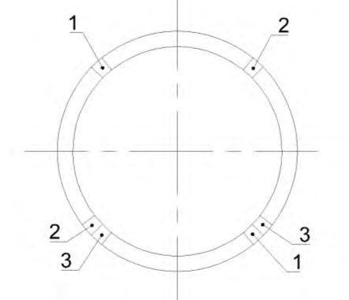
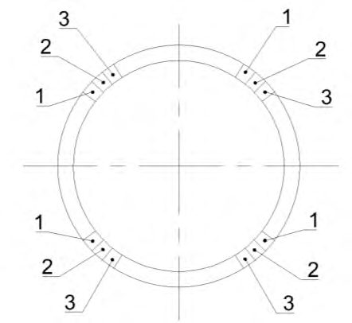
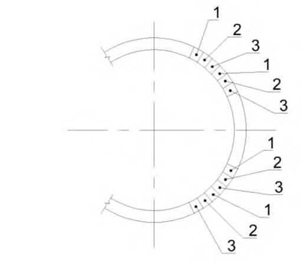
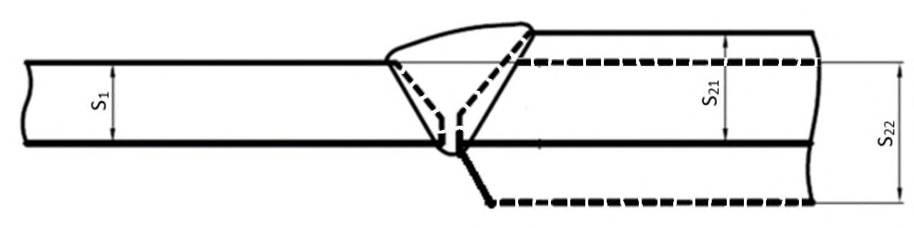
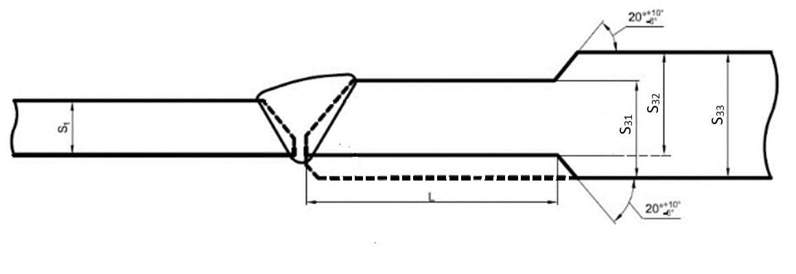

СП 86.13330.2022 «Магистральные трубопроводы»
О документе: разработчики, утверждение, регистрация, ключевые слова
Издание официальное
Москва 2022
1 ИСПОЛНИТЕЛИ - Общество с ограниченной ответственностью «Научно исследовательский институт трубопроводного транспорта» (ООО «НИИ Транснефть»), Саморегулируемая организация Некоммерческое партнерство по строительству нефтегазовых объектов «Нефтегазстрой» (СРО НП «НГС»), Открытое акционерное общество «Инжиниринговая нефтегазовая компания Всесоюзный научно-исследовательский институт по строительству и эксплуатации трубопроводов, объектов ТЭК» (ОАО ВНИИСТ), Закрытое акционерное общество Научно-проектное внедренческое общество «НГС-оргпроектэкономика» (ЗАО НПВО «НГС- оргпроектэкономика»)
2 ВНЕСЕН Техническим комитетом по стандартизации ТК 465 «Строительство»
3 ПОДГОТОВЛЕН к утверждению Департаментом градостроительной деятельности и архитектуры Министерства строительства и жилищнокоммунального хозяйства Российской Федерации (Минстрой России)
4 УТВЕРЖДЕН приказом Министерства строительства и жилищнокоммунального хозяйства Российской Федерации от 14 апреля 2022 г. № 285/пр и введен в действие с 15 мая 2022 г.
5 ЗАРЕГИСТРИРОВАН Федеральным агентством по техническому регулированию и метрологии (Росстандарт). Пересмотр СП 86.13330.2014 «СНиП III-42-80* Магистральные трубопроводы»
В случае пересмотра (замены) или отмены настоящего свода правил соответствующее уведомление будет опубликовано в установленном порядке. Соответствующая информация, уведомление и тексты размещаются также в информационной системе общего пользования на официальном сайте разработчика (Минстрой России) в сети Интернет
© Минстрой России, 2022
Настоящий свод правил не может быть полностью или частично воспроизведен, тиражирован и распространен в качестве официального издания на территории Российской Федерации без разрешения Минстроя России
УДК 69.05
ОКС 91.040.01
Ключевые слова: магистральные трубопроводы, строительно-монтажные работы, земляные работы, противокоррозионная защита, сварка и контроль, испытания участков магистральных трубопроводов
Введение
Настоящий свод правил разработан в целях обеспечения требований Федерального закона от 30 декабря 2009 № 384-ФЗ «Технический регламент о безопасности зданий и сооружений» с учетом требований Федерального закона от 27 декабря 2002 г. №184-ФЗ «О техническом регулировании», с учетом требований Технического регламента Евразийского экономического союза ТР ЕАЭС 049/2020 «О требованиях к магистральным трубопроводам для транспортирования жидких и газообразных углеводородов».
Свод правил разработан авторским коллективом ООО «НИИ Транснефть» (д-р техн. наук Д.А. Неганов , Н.Н. Скуридин , А.В. Захарченко , д-р техн. наук З.З. Шарафутдинов , канд. техн. наук Г.В. Мосолов , К.В. Иванов , канд. техн. наук Н.Н. Глазов , канд. экон. наук М.В. Шмелев , канд. техн. наук Н.Г. Гончаров , канд. хим. наук П.О. Ревин , В.В. Щенев ).
Trunk pipelines
Дата введения - 2022-05-15
1Область применения
- нефти, нефтепродуктов (в т. ч. стабильного конденсата и стабильного бензина), природного, нефтяного и искусственного углеводородных газов из районов их добычи (от промыслов), производства или хранения до мест потребления (нефтебаз, перевалочных баз, пунктов налива, газораспределительных станций, отдельных промышленных и сельскохозяйственных организаций и портов);
- сжиженных углеводородных газов фракций С3 и С4 и их смесей, нестабильного бензина и конденсата нефтяного газа и других сжиженных углеводородов с упругостью насыщенных паров при температуре 40 о С не выше 1,6 МПа из районов их добычи (промыслов) или производства (от головных насосных станций) до места потребления;
- товарной продукции в пределах компрессорной станции, станций подземного хранения газа, дожимной компрессорной станции, газораспределительной станции и узла замера расхода газа.
2Нормативные ссылки
В настоящем своде правил использованы нормативные ссылки на следующие документы:
ГОСТ 9.008-82 Единая система защиты от коррозии и старения. Покрытия металлические и неметаллические неорганические. Термины и определения
ГОСТ 9.032-74 Единая система защиты от коррозии и старения. Покрытия лакокрасочные. Группы, технические требования и обозначения
ГОСТ 12.1.004-91 Система стандартов безопасности труда. Пожарная безопасность. Общие требования ГОСТ 12.1.005-88 Система стандартов безопасности труда. Общие санитарно-гигиенические требования к воздуху рабочей зоны ГОСТ 12.1.007-76 Система стандартов безопасности труда. Вредные вещества. Классификация и общие требования безопасности ГОСТ 12.3.009-76 Система стандартов безопасности труда. Работы погрузочно-разгрузочные. Общие требования безопасности ГОСТ 12.4.026-2015 Система стандартов безопасности труда. Цвета сигнальные, знаки безопасности и разметка сигнальная. Назначение и правила применения. Общие технические требования и характеристики. Методы испытаний ГОСТ 17.1.3.05-82 Охрана природы. Гидросфера. Общие требования к охране поверхностных и подземных вод от загрязнения нефтью и нефтепродуктами ГОСТ 17.1.3.06-82 Охрана природы. Гидросфера. Общие требования к охране подземных вод ГОСТ 17.1.3.13-86 Охрана природы. Гидросфера. Общие требования к охране поверхностных вод от загрязнения ГОСТ 17.4.3.02-85 Охрана природы. Почвы. Требования к охране плодородного слоя почвы при производстве земляных работ ГОСТ 17.5.1.03-86 Охрана природы. Земли. Классификация вскрышных и вмещающих пород для биологической рекультивации земель ГОСТ 17.5.3.05-84 Охрана природы. Рекультивация земель. Общие требования к землеванию ГОСТ 17.5.3.06-85 Охрана природы. Земли. Требования к определению норм снятия плодородного слоя почвы при производстве земляных работ ГОСТ 21.001-2013 Система проектной документации для строительства. Общие положения ГОСТ 2405-88 Манометры, вакуумметры, мановакуумметры, напоромеры, тягомеры и тягонапоромеры. Общие технические условия ГОСТ 5686-2020 Грунты. Методы полевых испытаний сваями ГОСТ 6996-66 (ИСО 4136-89, ИСО 5173-81, ИСО 5177-81) Сварные соединения. Методы определения механических свойств ГОСТ 7512-82 Контроль неразрушающий. Соединения сварные. Радиографический метод ГОСТ 8267-93 Щебень и гравий из плотных горных пород для строительных работ. Технические условия ГОСТ 8736-2014 Песок для строительных работ. Технические условия ГОСТ 9466-75 Электроды покрытые металлические для ручной дуговой сварки сталей и наплавки. Классификация и общие технические условия ГОСТ 18442-80 Контроль неразрушающий. Капиллярные методы. Общие требования ГОСТ 22761-77 Металлы и сплавы. Метод измерения твердости по Бринеллю переносными твердомерами статического действия ГОСТ 23764-79 Гамма-дефектоскопы. Общие технические условия ГОСТ 24297-2013 Верификация закупленной продукции. Организация проведения и методы контроля ГОСТ 24950-2019 Отводы гнутые и вставки кривые на поворотах линейной части стальных трубопроводов. Технические условия
ГОСТ 25100-2020 Грунты. Классификация
ГОСТ 25113-86 Контроль неразрушающий. Аппараты рентгеновские для промышленной дефектоскопии. Общие технические условия
ГОСТ 30244-94 Материалы строительные. Методы испытаний на горючесть
ГОСТ 30732-2020 Трубы и фасонные изделия стальные с тепловой изоляцией из пенополиуретана с защитной оболочкой. Технические условия
ГОСТ 31149-2014 (ISO 2409:2013) Материалы лакокрасочные. Определение адгезии методом решетчатого надреза
ГОСТ 32702.2-2014 (ISO 16276-2:2007) Материалы лакокрасочные. Определение адгезии методом Х-образного надреза
ГОСТ 31448-2012 Трубы стальные с защитными наружными покрытиями для магистральных газонефтепроводов. Технические условия
ГОСТ 31993-2013 (ISO 2808:2007) Материалы лакокрасочные. Определение толщины покрытия
ГОСТ 32299-2013 (ISO 4624:2002) Материалы лакокрасочные. Определение адгезии методом отрыва
ГОСТ 34181-2017 Магистральный трубопроводный транспорт нефти и нефтепродуктов. Техническое диагностирование. Основные положения
ГОСТ 34366-2017 Магистральный трубопроводный транспорт нефти и нефтепродуктов. Контроль качества строительно-монтажных работ. Основные положения
ГОСТ ИСО 8573-3-2006 Сжатый воздух. Часть 3. Методы контроля влажности
ГОСТ Р 51164-98 Трубопроводы стальные магистральные. Общие требования к защите от коррозии
ГОСТ Р 51872-2019 Документация исполнительная геодезическая. Правила выполнения
ГОСТ Р 52289-2019 Технические средства организации дорожного движения. Правила применения дорожных знаков, разметки, светофоров, дорожных ограждений и направляющих устройств
ГОСТ Р 52290-2004 Технические средства организации дорожного движения. Знаки дорожные. Общие технические требования
ГОСТ Р 53691-2009 Ресурсосбережение. Обращение с отходами. Паспорт отхода I-IV класса опасности. Основные требования
ГОСТ Р 55724-2013 Контроль неразрушающий. Соединения сварные. Методы ультразвуковые
ГОСТ Р 56059-2014 Производственный экологический мониторинг. Общие положения
ГОСТ Р 56512-2015 Контроль неразрушающий. Магнитопорошковый метод. Типовые технологические процессы
ГОСТ Р 57385-2017 Магистральный трубопроводный транспорт нефти и нефтепродуктов. Строительство магистральных нефтепроводов и нефтепродуктопроводов. Тепловая изоляция труб и соединительных деталей трубопроводов
ГОСТ Р 57512-2017 Магистральный трубопроводный транспорт нефти и нефтепродуктов. Термины и определения
ГОСТ Р 58063-2018 Магистральный трубопроводный транспорт нефти и нефтепродуктов. Геомодули. Общие технические условия
ГОСТ Р 58361-2019 Магистральный трубопроводный транспорт нефти и нефтепродуктов. Оборудование сварочное. Общие технические условия
ГОСТ Р 58761-2019 Здания мобильные (инвентарные). Электроустановки. Технические условия
ГОСТ Р 58948-2020 Дороги автомобильные общего пользования. Дороги автомобильные зимние и ледовые переправы. Технические правила устройства и содержания ГОСТ Р 58967-2020 Ограждения инвентарные строительных площадок и участков производства строительно-монтажных работ. Технические условия ГОСТ Р 59057-2020 Охрана окружающей среды. Земли. Общие требования по рекультивации нарушенных земель ГОСТ Р 59060-2020 Охрана окружающей среды. Земли. Классификация нарушенных земель в целях рекультивации ГОСТ Р 59070-2020 Охрана окружающей среды. Рекультивация нарушенных и нефтезагрязненных земель. Термины и определения ГОСТ Р 59136-2020 Магистральный трубопроводный транспорт нефти и нефтепродуктов. Материалы сварочные. Общие технические условия ГОСТ Р ИСО 6707-1-2020 Здания и сооружения. Общие термины СП 4.13130.2013 Системы противопожарной защиты. Ограничение распространения пожара на объектах защиты. Требования к объемнопланировочным и конструктивным решениям (с изменением № 1) СП 14.13330.2018 «СНиП II-7-81* Строительство в сейсмических районах» (с изменением № 2) СП 21.13330.2012 «СНиП 2.01.09-91 Здания и сооружения на подрабатываемых территориях и просадочных грунтах» (с изменением № 1) СП 22.13330.2016 «СНиП 2.02.01-83* Основания зданий и сооружений» (с изменениями № 1, № 2, № 3, № 4) СП 24.13330.2021 «СНиП 2.02.03-85 Свайные фундаменты» СП 25.13330.2020 «СНиП 2.02.04-88 Основания и фундаменты на вечномерзлых грунтах» СП 34.13330.2021 «СНиП 2.05.02-85* Автомобильные дороги» СП 36.13330.2012 «СНиП 2.05.06-85* Магистральные трубопроводы» (с изменениями № 1, № 2, № 3) СП 45.13330.2017 «СНиП 3.02.01-87 Земляные сооружения, основания и фундаменты» (с изменениями № 1, № 2, № 3) СП 46.13330.2012 «СНиП 3.06.04-91 Мосты и трубы» (с изменениями № 1, № 2, № 3, № 4) СП 47.13330.2016 «СНиП 11-02-96 Инженерные изыскания для строительства. Основные положения» (с изменением № 1) СП 48.13330.2019 «СНиП 12-01-2004 Организация строительства» СП 61.13330.2012 «СНиП 41-03-2003 Тепловая изоляция оборудования и трубопроводов» (с изменением № 1) СП 63.13330.2018 «СНиП 52-01-2003 Бетонные и железобетонные конструкции. Основные положения» (с изменениями № 1, № 2) СП 68.13330.2017 «СНиП 3.01.04-87 Приемка в эксплуатацию законченных строительством объектов. Основные положения» (с изменением № 1) СП 77.13330.2016 «СНиП 3.05.07-85 Системы автоматизации» СП 104.13330.2016 «СНиП 2.06.15-85 Инженерная защита территории от затопления и подтопления» (с изменением № 1)
СП 119.13330.2017 «СНиП 32-01-95 Железные дороги колеи 1520 мм» (с изменением № 1)
СП 86.13330.2022
СП 122.13330.2012 «СНиП 32-04-97 Тоннели железнодорожные и автодорожные» (с изменениями № 1, № 2)
СП 126.13330.2017 «СНиП 3.01.03-84 Геодезические работы в строительстве»
СП 245.1325800.2015 Защита от коррозии линейных объектов и сооружений в нефтегазовом комплексе. Правила производства и приемки работ
СП 246.1325800.2016 Положение об авторском надзоре за строительством зданий и сооружений
СП 249.1325800.2016 Коммуникации подземные. Проектирование и строительство закрытым и открытым способами (с изменением № 1)
СП 392.1325800.2018 Трубопроводы магистральные и промысловые для нефти и газа. Исполнительная документация при строительстве. Формы и требования к ведению и оформлению
СП 393.1325800.2018 Трубопроводы магистральные и промысловые для нефти и газа. Организация строительного производства
СП 409.1325800.2018 Трубопроводы магистральные и промысловые для нефти и газа. Производство работ по устройству тепловой и противокоррозионной изоляции, контроль выполнения работ
СП 410.1325800.2018 Трубопроводы магистральные и промысловые для нефти и газа. Строительство в условиях вечной мерзлоты и контроль выполнения работ
СП 411.1325800.2018 Трубопроводы магистральные и промысловые для нефти и газа. Испытания перед сдачей построенных объектов
СП 422.1325800.2018 Трубопроводы магистральные и промысловые для нефти и газа. Строительство подводных переходов и контроль выполнения работ
СП 424.1325800.2019 Трубопроводы магистральные и промысловые для нефти и газа. Производство работ по противокоррозионной защите средствами электрохимзащиты и контроль выполнения работ
СП 446.1325800.2019 Инженерно-геологические изыскания для строительства. Общие правила производства работ
СП 471.1325800.2019 Информационное моделирование в строительстве. Контроль качества производства строительных работ
СанПиН 2.6.1.2523-09 Нормы радиационной безопасности (НРБ-99/2009)
СанПиН 2.6.1.3164-14 Гигиенические требования по обеспечению радиационной безопасности при рентгеновской дефектоскопии
Примечание - При пользовании настоящим сводом правил целесообразно проверить действие ссылочных стандартов (сводов правил и/или классификаторов) в информационной системе общего пользования - на официальном сайте Национального органа Российской Федерации по стандартизации в сети Интернет или по ежегодно издаваемому информационному указателю «Национальные стандарты», который опубликован по состоянию на 1 января текущего года, и по выпускам ежемесячно издаваемого информационного указателя «Национальные стандарты» за текущий год. Если заменен ссылочный стандарт (документ), на который дана недатированная ссылка, то рекомендуется использовать действующую версию этого стандарта (документа) с учетом всех внесенных в данную версию изменений. Если заменен ссылочный стандарт (документ), на который дана датированная ссылка, то рекомендуется использовать версию этого стандарта (документа) с указанным выше годом утверждения (принятия). Если после утверждения настоящего стандарта в ссылочный стандарт (документ), на который дана датированная ссылка, внесено изменение, затрагивающее положение, на которое дана ссылка, то это положение рекомендуется применять без учета данного изменения. Если ссылочный стандарт (документ) отменен без замены, то положение, в котором дана ссылка на него, рекомендуется применять в части, не затрагивающей эту ссылку. Сведения о действии свода правил можно проверить в Федеральном информационном фонде технических регламентов и стандартов.
3Термины и определения
В настоящем своде правил применены следующие термины с соответствующими определениями.
- 3.1авторский надзор
- Контроль физического или юридического лица, осуществившего подготовку проектной документации, за соблюдением в процессе строительства требований проектной документации и подготовленной на ее основе рабочей документации.
- 3.2бескаркасный полимерконтейнерный грунтозаполненный утяжелитель (текстильный контейнер)
- Общее наименование группы тканевых бескаркасных балластирующих устройств (утяжелителей), состоящих из емкостей с фиксировано закрывающимися горловинами, выполненных из технической ткани, заполненных грунтом и скрепленных с помощью соединительных элементов. Примечание - Изготовителем бескаркасных полимерконтейнерных грунтозаполненных утяжелителей (текстильных контейнеров) может быть использовано другое наименование изготовляемой продукции, при этом общее конструкционное решение должно соответствовать требованиям, установленным в терминологической статье.
- 3.3каркасный полимерконтейнерный грунтозаполненный утяжелитель (полимерно-контейнерное балластирующее устройство)
- Общее наименование группы тканевых каркасных балластирующих устройств (утяжелителей), состоящих из заполненных грунтом открытых емкостей, выполненных из технической ткани, соединенных силовыми поясами, и распорного каркаса, составляющих единую конструкцию. Примечание - Изготовителем каркасных полимерконтейнерных грунтозаполненных утяжелителей (полимерно-контейнерных балластирующих устройств) может быть использовано другое наименование изготовляемой продукции, при этом общее конструкционное решение должно соответствовать требованиям, установленным в терминологической статье.
- 3.4вантуз
- Устройство, предназначенное для откачки/закачки/впуска/выпуска в трубопровод продукта при выполнении плановых и аварийных работ.Источник: ГОСТ Р 57512-2017, статья 57
- 3.5внутритрубное диагностирование методом «сухой протяжки»
- Внутритрубное диагностирование без заполнения трубопровода жидкостной средой с использованием тяговых устройств для протаскивания внутритрубного инспекционного прибора, выполняемое до ввода участка трубопровода в эксплуатацию и подключения к магистральному трубопроводу.
- 3.6гарантийный стык
- Стыковое кольцевое сварное соединение трубопровода, гидравлические испытания которого не проводятся.
- 3.7геомодуль
- Конструкция с ячеистой структурой, сформированная из лент технической ткани, скрепленных между собой швами, заполняемая сыпучим минеральным грунтом, предназначенная для устройства грунтового основания сооружений.Источник: ГОСТ Р 58063-2018, пункт 3.2
- 3.8горизонтальное направленное бурение щитом
- Непилотируемая управляемая бестраншейная технология прокладки подземных коммуникаций путем задавливания предварительно собранного и сваренного по стыкам стального трубопровода с помощью расположенной впереди и пристыкованной к нему, управляемой дистанционно (в автоматическом режиме) проходческой машины, позволяющей одновременно с задавливанием выполнять разработку и извлечение грунта в забое и обеспечивать его пригруз. Примечание - Усилие, необходимое для проходки, создает доталкиватель труб, расположенный в непосредственной близости от точки входа трубопровода (на поверхности или в приямке).
- 3.9демонтаж линейной части магистрального трубопровода
- Комплекс технических мероприятий, направленных на извлечение трубопровода из грунта, очистку наружной поверхности, резку на части и транспортирование труб к месту складирования.
- 3.10дюкер
- Участок трубопровода, прокладываемый на пересечении с искусственным или естественным препятствием.
- 3.11забой
- Зона разработки грунта в скважине или котловане, перемещающаяся в процессе производства работ.Источник: СП 46.13330.2012, пункт Б.7
- 3.12защитное покрытие
- Покрытие для защиты основного покрываемого металла от коррозии.Источник: ГОСТ 9.008-82, статья 61
- 3.13заказчик
- Юридическое лицо, которое уполномочено застройщиком и от имени застройщика заключает договоры о выполнении инженерных изысканий, подготовке проектной документации, строительстве, реконструкции, капитальном ремонте, сносе объектов капитального строительства, подготавливает задания на выполнение указанных видов работ, предоставляет лицам, выполняющим инженерные изыскания и/или осуществляющим подготовку проектной документации, строительство, реконструкцию, капитальный ремонт, снос объектов капитального строительства, материалы и документы, необходимые для выполнения указанных видов работ, утверждает проектную документацию, подписывает документы, необходимые для получения разрешения на ввод объекта капитального строительства в эксплуатацию, осуществляет иные функции, предусмотренные законодательством о градостроительной деятельности.Источник: 2, статья 1, пункт 22
- 3.14застройщик
- Физическое или юридическое лицо, осуществляющее на принадлежащем ему земельном участке или на земельном участке иного правообладателя строительство, реконструкцию, техническое перевооружение и капитальный ремонт объектов капитального строительства, а также проводящее инженерные изыскания, подготовку проектной документации для строительства, реконструкции, капитального ремонта объектов.
- 3.15захлест
- Соединение двух участков трубопровода в месте технологического разрыва трубопровода кольцевым(и) стыком(ами), выполняемое без использования соединительных деталей трубопровода.Источник: ГОСТ Р 57512-2017, статья 125
- 3.16защитные цементно-песчаные сегменты
- Наружное цементнопесчаное сегментированное покрытие, монтируемое на трубопровод в полевых условиях, предназначенное для защиты трубопровода от механических повреждений при прокладке в сложных грунтовых условиях.
- 3.17исполнительная документация
- Текстовые и графические материалы, оформленные в установленном порядке, отражающие фактическое исполнение проектных решений, фактическое положение объектов строительства и их элементов в процессе строительства, реконструкции, технического перевооружения, капитального ремонта по мере завершения определенных проектной и рабочей документацией работ.Источник: ГОСТ Р 57512-2017, статья 126
- 3.18катушка
- Отрезок трубы, подготавливаемый для вварки в трубопровод, длиной не менее одного диаметра, изготовленный из трубы того же диаметра, номинальной толщины стенки и аналогичного класса прочности, а также имеющий торцы, обработанные механическим способом или путем газовой резки с последующей обработкой металлорежущим инструментом.Источник: ГОСТ Р 57512-2017, статья 138
- 3.19контрольно-измерительный пункт
- Устройство для контроля параметров электрохимической защиты и/или коммутации средств электрохимической защиты с возможностью контроля коррозионных процессов.Источник: СП 424.1325800.2019, пункт 3.3
- 3.20комплексный технологический поток
- Совокупность технических и людских ресурсов, выполняющих с заданной интенсивностью комплекс определенных видов работ или технологических процессов, продукция которых - полностью законченные комплексы зданий и сооружений или однородные по своему назначению объекты строительства.Источник: СП 393.1325800.2018, пункт 3.2
- 3.21линейная часть магистрального трубопровода; ЛЧ МТ
- Объект магистрального трубопровода, предназначенный для перемещения транспортируемых жидких или газообразных углеводородов, включающий в себя собственно трубопровод, вдольтрассовые линии электропередачи, кабельные линии и сооружения связи, устройства электрохимической защиты от коррозии и иные сооружения и технические устройства, обеспечивающие его эксплуатацию.
- 3.22магистральный трубопровод
- Единый производственно-технологический комплекс, предназначенный для транспортировки подготовленных жидких или газообразных углеводородов от объектов добычи и/или пунктов приема до пунктов сдачи потребителям и/или передачи в распределительные газопроводы или иной вид транспорта и/или хранения, состоящий из конструктивно и технологически взаимосвязанных объектов, включая сооружения и здания, используемые для целей обслуживания и управления объектами магистрального трубопровода.Источник: СП 36.13330.2012, пункт 3.31
- 3.23маркерный пункт
- Заранее выбранная точка на поверхности земли над осью трубопровода в месте установления маркерного передатчика, предназначенного для точной привязки к местности данных внутритрубного диагностирования.
- 3.24микротоннелирование
- Технология прокладки труб закрытым способом работ с применением микротоннелепроходческого комплекса.Источник: СП 249.1325800.2016, пункт 3.23
- 3.25мягкий грунт
- Сыпучий минеральный грунт, не нарушающий целостность защитного покрытия в процессе строительства и эксплуатации трубопровода, с размером твердых фракций в поперечнике до 50 мм. Примечание - В качестве мягкого грунта для подсыпки и присыпки используется: -песок мелкий, средней крупности, крупный, гравелистый (классификация по ГОСТ 25100); -песок для строительных работ по ГОСТ 8736; -глинистые непучинистые, малопучинистые грунты (супеси, суглинки, глины) с размером комьев не более 50 мм в поперечнике, в т. ч. мерзлых; -гравийно-галечниковые грунты с размером частиц не более 50 мм (не применяется к магистральным газопроводам); -щебень и гравий по ГОСТ 8267 с размерами фракций не более 50 мм (не применяется к магистральным газопроводам).
- 3.26наклонно направленное бурение (горизонтальное направленное бурение)
- Многоэтапная технология бестраншейной прокладки подземных коммуникаций с помощью специализированных мобильных буровых установок, позволяющая выполнять управляемую проходку по криволинейной траектории, расширять скважину, протягивать трубопровод.
- 3.27НПС (магистрального трубопровода)
- Площадочный объект магистрального трубопровода, предназначенный для приема, накопления, учета, поддержания необходимого режима перекачки нефти/нефтепродуктов по магистральному трубопроводу. Примечания 1 Согласно сложившейся практике в тексте документов, как правило, используют краткую форму термина, а именно «НПС», взамен объединенного термина «нефтеперекачивающая [нефтепродуктоперекачивающая] станция». 2 При необходимости уточнения, с каким продуктом выполняются технологические операции, используют полную форму термина «нефтеперекачивающая станция» или «нефтепродуктоперекачивающая станция».Источник: ГОСТ Р 57512-2017, статья 15
- 3.28очистное устройство (трубопровода)
- Внутритрубное устройство, предназначенное для проведения очистки внутренней полости и стенок трубопровода от парафина и асфальтосмолопарафиновых отложений, посторонних предметов, механических примесей.Источник: ГОСТ Р 57512-2017, статья 133
- 3.29подводно-технические работы
- Работы, выполняемые под водой, без проведения мероприятий по водопонижению, водоотводу.
- Примечание - В состав подводно-технических работ входит следующее
- разработка и перемещение грунта специализированными техническими ресурсами; рыхление и разработка грунтов под водой механизированным способом и выдачей в подводный отвал или плавучие средства, бурение и обустройство скважин под водой; свайные работы, выполняемые с плавучих средств; возведение сооружений в подводных условиях из природных и искусственных массивов; возведение дамб; монтаж, демонтаж строительных конструкций в подводных условиях; укладка трубопроводов в подводную траншею; снятие и нанесение защитного покрытия; проведение визуального, измерительного и ультразвукового контроля; устранение дефектов трубопровода методом шлифовки; монтаж и демонтаж водолазами участков кабельных линий связи; выполнение дноукрепительных и берегоукрепительных работ; водолазные подводно-строительные работы, в т. ч. контроль качества гидротехнических работ под водой, устранение дефектов с применением кессонов.
- 3.30подрядчик
- Специалист или организация, берущие на себя ответственность за выполнение строительных работ в соответствии с контрактом.
- 3.31проект производства работ; ППР
- Один из основных организационнотехнологических документов, описывающих применяемые обоснованные организационно-технологические решения для обеспечения оптимальной технологичности производства и безопасности соответствующих видов работ, а также экономической эффективности капитальных вложений. Примечание -ППР устанавливает порядок инженерного оборудования и обустройства строительной площадки, обеспечивает моделирование строительного процесса, прогнозирование возможных рисков, определяет оптимальные сроки строительства. Выбор организационно-технологических решений следует осуществлять на основе вариантной проработки с применением методов критериальной оценки.Источник: СП 48.13330.2019, пункт 3.34
- 3.32проектная документация
- Совокупность текстовых и графических документов, определяющих архитектурные, функционально-технологические, конструктивные и инженерно-технические и иные решения проектируемого здания (сооружения), состав которых необходим для оценки соответствия принятых решений заданию на проектирование, требованиям технических регламентов и документов в области стандартизации и достаточен для разработки рабочей документации для строительства.Источник: ГОСТ 21.001-2013, пункт 3.1.5
- 3.33продавливание
- Процесс строительства подземной коммуникации путем продавливания в грунте труб или тоннельных конструкций с открытым концом и, как правило, ножевым элементом, сопровождаемый разрушением грунта в забое и удалением его по мере их продвижения.Источник: СП 249.1325800.2016, пункт 3.33
- 3.34прокол
- Процесс строительства подземной коммуникации путем статического, ударного или ударно-импульсного внедрения в грунт (штанг) с конусным (направляющим) наконечником, сопровождаемый уплотнением окружающего массива грунта.Источник: СП 249.1325800.2016, пункт 3.34
- рабочая документация
- Совокупность текстовых и графических документов, обеспечивающих реализацию принятых в утвержденной проектной документации технических решений объекта капитального строительства, необходимых для производства строительных и монтажных работ, обеспечения строительства оборудованием, изделиями и материалами и/или изготовления строительных изделий. Примечание - В состав рабочей документации входят основные комплекты рабочих чертежей, спецификации оборудования, изделий и материалов, сметы, другие прилагаемые документы, разрабатываемые в дополнение к рабочим чертежам основного комплекта.Источник: ГОСТ 21.001-2013, пункт 3.1.6
- 3.36разрешение на строительство
- Документ, определяемый Градостроительным кодексом Российской Федерации.
- 3.37секция трубопровода
- Участок трубопровода между двумя ближайшими поперечными сварными стыками.Источник: ГОСТ Р 57512-2017, статья 60
- 3.38сплошное бетонное покрытие
- Наружный, коаксиально расположенный элемент конструкции трубопровода, представляющий собой слой армированного бетона, выполняющий функции защиты от механических повреждений и/или балластировки и/или обеспечения устойчивости трубопровода на проектных отметках. Примечание -Конструкция сплошного бетонного покрытия определяется проектной/рабочей документацией.
- 3.39строительно-монтажные работы
- Комплекс работ по строительству, техническому перевооружению, реконструкции, капитальному ремонту объектов магистрального трубопровода.
- 3.40строительный контроль
- Контроль, проводимый в процессе строительства, капитального ремонта, технического перевооружения, реконструкции объектов в целях проверки соответствия выполняемых работ результатам инженерных изысканий, требованиям градостроительного плана земельного участка, технических регламентов, нормативных документов, рабочей, технологической документации. Примечание - В состав технологической документации входят проект производства работ и технологические карты.Источник: ГОСТ 34366-2017, пункт 3.24
- 3.41толщина стенки трубы
- Расстояние между внутренней и наружной поверхностями стенки трубы в радиальном направлении. Примечания 1 Номинальная толщина стенки трубы -толщина, указанная в документах по стандартизации и/или технических документах на трубы. 2 Расчетная толщина стенки трубы - толщина, определяемая расчетом на прочность. 3 Минимальная толщина стенки трубы - разница между номинальной толщиной трубы и наибольшим предельным значением поля допуска на толщину стенки трубы.Источник: ГОСТ Р 57512-2017, статья 82
- траверса
- Балка, предназначенная для распределения сосредоточенных нагрузок.Источник: ГОСТ Р ИСО 6707-1-2020, статья 3.3.1.42
- 3.43трубопроводная арматура
- Техническое устройство, устанавливаемое на трубопроводах, оборудовании и емкостях, предназначенное для управления потоком рабочей среды путем изменения проходного сечения. Примечания 1 Под управлением понимается перекрытие, открытие, регулирование, распределение, смешивание, разделение. 2 Во множественном числе термин не применяется.Источник: ГОСТ 24856-2014, статья 2.1
4Сокращения
В настоящем своде правил применены следующие сокращения:
АСУТП -автоматизированная система управления технологическим процессом;
АУЗК - автоматизированный ультразвуковой контроль;
ВИК - визуальный и измерительный контроль;
ГНБЩ - горизонтальное направленное бурение щитом;
ГРО - геодезическая разбивочная основа;
ГТСМ - геотекстильный синтетический материал;
ЗП - защитное покрытие;
ИСМ - инертные строительные материалы;
ЛКМ - лакокрасочные материалы;
ЛКП - лакокрасочное покрытие;
ЛЧ - линейная часть;
ММГ - многолетнемерзлые грунты;
МТ - магистральный трубопровод;
НД - нормативный документ;
НК - неразрушающий контроль;
ННБ - наклонно- (горизонтально) направленное бурение;
НО - настроечный образец;
ПД - проектная документация;
ПОС - проект организации строительства;
ПНР - пусконаладочные работы;
ППГР - проект производства геодезических работ;
ППР - проект производства работ;
ППРк - проект производства работ кранами (грузоподъемными машинами);
РД - рабочая документация;
РК - радиографический контроль;
СДТ - соединительные детали трубопроводов;
СМР - строительно-монтажные работы;
СОД - средство очистки и диагностирования;
ТК - технологическая карта;
ТУ - технические условия;
УЗК - ультразвуковой контроль;
УТА - узел трубопроводной арматуры;
ЭХЗ - электрохимическая защита;
DN - номинальный диаметр.
5Основные положения
5.1Состав линейной части магистрального трубопровода
Состав ЛЧ МТ определяют при проектировании в соответствии с СП 36.13330.
5.2Разработка проекта производства работ и технологических карт
- технологическую карту на выполнение отдельных видов работ (по согласованию с заказчиком), в которых должны быть отражены: перечень операций или процессов, которые подлежат проверке по показателям качества; чертежи конструкций с указанием допускаемых отклонений размеров, требуемой точности измерений, параметров стандартных образцов, применяемых материалов; места выполнения контроля, их частота, методы, исполнители, средства измерений и формы записи результатов;
- строительный генеральный план (для линейных объектов - план полосы отвода);
- график производства работ по объекту
- схемы размещения геодезических знаков;
- пояснительную записку, содержащую основные решения по производству работ, природоохранные мероприятия, мероприятия по охране труда и безопасности в строительстве.
Разработанный ППРк после согласования с владельцем грузоподъемных машин, с руководителем организации, разработавшей ППРк, и с заказчиком утверждает руководитель подрядчика. ППРк может не разрабатываться при наличии требований в ПОС.
Для выполнения трубоукладочных работ с применением крановтрубоукладчиков ППРк не разрабатывается.
СП 86.13330.2022
В описании методов контроля качества работ приводятся указания по оценке качества технологических процессов в соответствии с требованиями НД.
Число комплексных технологических потоков, границы их работы и сроки производства отдельных видов работ принимают по ПОС. Для бесперебойной работы комплексных технологических потоков назначают технологические заделы по каждому виду работ. Размер задела определяют, как минимальный, но достаточный для компенсации колебаний темпов работ специализированных бригад и звеньев.
5.3Порядок взаимодействия заказчика строительства с подрядчиком
- оформление документов для получения разрешения на строительство, в т. ч., документов об установлении или изменении зон с особыми условиями использования территории;
- оформление правоустанавливающих документов на земельные участки для выполнения СМР, а также размещения временных городков, складирования оборудования и пр.;
- направление ПД (приложение к извещению о начале строительных работ, регистрация) в государственный строительный надзор;
- обеспечение подрядчика ПД (при одностадийном проектировании) или ПД и РД (при двухстадийном проектировании), прошедшей экспертизу и утвержденной заказчиком в производство работ;
- передача подрядчику технических условий на подключение к коммуникациям с указанием мест подключения к ним;
- обеспечение выноса в натуру линий регулирования застройки и создание геодезической разбивочной основы;
- формирование перечня разрешительной и исполнительной документации с указанием конкретных форм этой документации и ссылок на НД, содержащих упомянутые формы;
- обеспечение подрядчика техническим заданием на разработку ППР и согласование ППР;
- оформление разрешительной документации на рубку лесных насаждений (проект освоения лесов, лесная декларация), получение разрешений уполномоченных органов на снос древесно-кустарниковой растительности на землях иных категорий и определения полигонов для захоронения лесопорубочных остатков;
- определение транспортной схемы и выбор карьеров;
- согласование пересечения трубопроводом коммуникаций с их владельцами;
- организация в процессе строительства авторского надзора, выполняемого проектной организацией;
- уведомление о начале любых работ на строительной площадке органа государственного строительного надзора, которому подконтролен данный объект;
- организация и осуществление строительного контроля за выполнением СМР (для магистральных трубопроводов для транспортирования нефти и нефтепродуктов организация и проведение строительного контроля качества СМР в соответствии с ГОСТ 34366);
- приемка выполненных работ и контроль выполнения графика строительства;
- приемка законченного строительством объекта при осуществлении работ по договору;
- организация наладки и опробования оборудования, пробного производства продукции и других мероприятий по подготовке объекта к эксплуатации;
- принятие решений о начале, приостановке, консервации, прекращении строительства, о вводе законченного строительством объекта в эксплуатацию;
- предъявление законченного строительством объекта органам государственного строительного надзора и экологического надзора (в случаях, предусмотренных [2]);
- предъявление законченного строительством объекта уполномоченному органу исполнительной власти для ввода в эксплуатацию в соответствии c [17];
- комплектование, хранение и передача соответствующим организациям исполнительной и эксплуатационной документации;
- поставка материалов и оборудования, определенных договором;
- регистрация общего журнала и специальных журналов работ в органе государственного строительного надзора;
- получение разрешения государственной комиссии по радиочастотам на использование радиочастот (при наличии радиорелейной системы технологической связи, системы подвижной радиосвязи или иных систем технологической и производственной связи, использующих для установления соединения радиочастотные ресурсы, требующие оформления разрешений на их использование);
- оформление документов на получение разрешения на ввод объекта в эксплуатацию.
- получение в установленном порядке свидетельств на допуски ко всем видам работ, оказывающих влияние на безопасность сооружаемого объекта МТ;
- оформление разрешения (наряд-допуск) на производство работ в охранной зоне действующих коммуникаций;
- обеспечение входного контроля РД;
- разработка и применение организационно-технологической документации;
- поиск и выбор субподрядчиков, согласование их с заказчиком и заключение договоров с ними (при необходимости);
- обеспечение выполнения СМР в соответствии с ПД, РД, НД и ППР;
- осуществление подготовки и аттестации работников организации по вопросам промышленной безопасности в соответствии с действующим законодательством;
- обеспечение выполнения всех СМР только в пределах земельных участков, на которые заказчиком оформлены правоустанавливающие документы;
- осуществление строительного контроля выполнения СМР в соответствии с действующими НД;
- ведение исполнительной документации в установленном порядке (в бумажном и электронном виде);
- соблюдение сроков выполнения работ в соответствии с графиком;
- своевременное предоставление отчетности заказчику в объеме и формах, установленных договором;
- обеспечение безопасности труда на строительной площадке, безопасности строительных работ для окружающей среды и населения;
- управление строительной площадкой, в т. ч. обеспечение охраны строительной площадки и сохранности объекта до его приемки застройщиком/заказчиком;
- выполнение требований местной администрации, действующей в пределах ее компетенции, по поддержанию порядка на прилегающей к строительной площадке территории;
- извещение заказчика об инцидентах, происшествиях и авариях на объекте;
- устранение дефектов и нарушений в работе объекта, выявленных в гарантийный период эксплуатации объекта;
- извещение заказчика об окончании строительства;
- выполнение работ по рекультивации земель путем проведения технических и/или биологических мероприятий с оформлением акта о рекультивации земель;
- обеспечение вывоза строительных и твердых коммунальных отходов с объекта строительства;
- поставка материалов и оборудования, определенных договором.
- внесению изменений и корректировке ПД;
- согласованию, утверждению и корректировке ППР, ТК;
- сдаче-приемке строительных площадок, производственных баз, трассы трубопровода, помещений под монтаж оборудования и технологических систем;
- согласованию планов и графиков;
- передаче и учету строительных материалов, оборудования;
- контролю, приемке и оплате выполненных работ;
- возможности применения цифровых информационных моделей 1) при контроле качества строительных работ с установлением требований заказчика к информационным моделям, применяемому (используемому) программному обеспечению и разработкой регламента взаимодействия участников процесса строительства или плана реализации проекта с применением технологии информационного моделирования. Возможно применение отдельных цифровых информационных моделей для контроля качества работ согласно СП 471.1325800;
- проверка соблюдения подрядчиками требований ПД, НД.
Взаимодействие заказчика строительства с подрядчиком при выполнении строительного контроля
- проверки качества (входной контроль) строительных материалов, изделий, конструкций и оборудования, поставленных для строительства объекта;
- проверки соблюдения установленных норм и правил складирования и хранения применяемой продукции;
- проверки при строительстве объекта соблюдения последовательности, состава, точности и качества выполнения технологических операций и работ;
- освидетельствования скрытых работ и возведенных строительных конструкций, участков сетей инженерно-технического обеспечения;
- приемки законченных видов (этапов) работ;
- проверки совместно с заказчиком соответствия законченного строительством объекта требованиям ПД и подготовленной на ее основе РД, результатам инженерных изысканий, требованиям градостроительного плана земельного участка, технических регламентов;
- освидетельствования ГРО объекта капитального строительства;
- контроля выполнения всех видов СМР, определенных графиками выполнения работ, в соответствии с требованиями ПД, РД, ППР и НД, действующего законодательства Российской Федерации с применением соответствующего оборудования и материалов;
- обеспечения приемки выполненных работ и подписания актов освидетельствования на объектах строительства, реконструкции, капитального ремонта и технического перевооружения специалистами службы строительного контроля, включенными в национальный реестр специалистов в области строительства;
- операционного контроля в процессе выполнения и по завершении СМР.
1) Объектно-ориентированная параметрическая трехмерная модель, представляющая в цифровом виде физические, функциональные и прочие характеристики объекта (или его отдельных частей) в виде совокупности информационно насыщенных элементов.
- проверки полноты и соблюдения установленных сроков выполнения подрядчиком входного контроля и достоверности документирования его результатов;
- проверки выполнения подрядчиком контрольных мероприятий по соблюдению правил складирования и хранения применяемой продукции;
- проверки полноты и соблюдения установленных сроков выполнения подрядчиком контроля последовательности и состава технологических операций по осуществлению строительства объектов и достоверности документирования его результатов;
- совместно с подрядчиком, освидетельствования скрытых работ, ответственных конструкций, участков инженерных систем и сетей;
- проверки, совместно с подрядчиком, соответствия законченного строительством объекта требованиям ПД и подготовленной на ее основе РД, результатам инженерных изысканий, требованиям градостроительного плана земельного участка, требованиям технических регламентов;
- иных мероприятий для осуществления строительного контроля, предусмотренных законодательством Российской Федерации и/или заключенным договором.
- авторский надзор - проектировщик;
- государственный строительный надзор -Федеральный орган исполнительной власти, уполномоченный на его осуществление.
Порядок осуществления и функции авторского надзора - по СП 246.1325800.
5.4Общие особенности производства работ при реконструкции
При реконструкции действующих трубопроводов, производство работ осуществляют в соответствии с ПД и РД, разработанной с учетом результатов обследования реконструируемого трубопровода.
5.5Производство работ по демонтажу трубопровода
Подлежащий демонтажу магистральный трубопровод должен быть подготовлен к извлечению из грунта, резке на части и транспортированию труб к месту складирования. Комплекс технических мероприятий заключается в отключении от соседних участков, освобождении от продукта перекачки (опорожнение трубопровода), очистке внутренней полости, дегазации до взрывобезопасной концентрации.
Опорожнение трубопровода (вытеснение продукта), очистку внутренней полости трубопровода, дегазацию и резку выполняют в соответствии с ПД(РД).
6Доставка и приемка труб, соединительных деталей трубопроводов и трубопроводной арматуры
6.1Погрузочно-разгрузочные работы
СП 86.13330.2022 разгрузочных работ и площадок складирования, обеспечивающих безопасное производство погрузочно-разгрузочных работ и складирование материалов.
6.2Приемка
Трубы, СДТ, трубопроводная арматура, обеспечивающие функционирование участков ЛЧ МТ (например, трубопроводы отвода воды с площадок береговых УТА), за исключением трубопроводов, требования к сооружению которых установлены в иных НД, и/или временных трубопроводов, необходимых для сооружения объектов МТ (временных водоводов и т.д.), требования к которым не установлены действующими НД, могут применяться после подтверждения их пригодности в установленном порядке.
Приемку труб, СДТ и трубопроводной арматуры осуществляет подрядчик при непосредственном участии представителей заказчика по месту разгрузки продукции с транспортных средств или после транспортирования ее от мест разгрузки на площадки складирования.
Привлечение специалистов строительного контроля заказчика для участия в процедуре входного контроля может осуществляться по решению заказчика.
- проверку соответствия поставленной продукции требованиям ПД (РД) и ТУ;
- проверку комплектности сопроводительных документов, наличия сертификата изготовителя на каждую трубу (партию труб), технического паспорта на каждую деталь трубопровода и единицу трубопроводной арматуры, сертификата/паспорта на ЗП;
- проверку комплектности, упаковки и маркировки (в т. ч. для СДТ и трубопроводной арматуры соответствие маркировки паспортным данным).
- а) визуальным контролем в объеме 100 % партии:
- 1) наличие и соответствие маркировки сертификатам;
- 2) отсутствие дефектов поверхности, вмятин, забоин, задиров, рисок и других механических повреждений, коррозионных повреждений тела и торцов;
- 3) отсутствие на торцах забоин, вмятин;
- 4) отсутствие расслоений, выходящих на поверхность (на концевых участках труб и кромках разделки);
- 5) наличие разделки кромок (в т. ч. под конкретную технологию сварки, если это предусмотрено в НД);
- 6) отсутствие повреждений заводского ЗП, теплоизоляционного и сплошного бетонного покрытия труб;
- 7) проверка состояния внутренней полости;
1) Здесь и далее ПД или РД в зависимости от количества стадий при проектировании (см. 5.3.2).
- б) инструментальным контролем в объеме не менее 20 % партии, а также при проверке продукции, параметры которой вызывают сомнение по результатам визуального контроля либо при выявлении в маркировке и в сертификатах на трубы разницы по времени изготовления труб (сварная партия):
- 1) толщина стенки по торцам;
- 2) номинальный диаметр по торцам;
- 3) овальность по торцам;
- 4) отклонение от общей прямолинейности;
- 5) форма и размеры разделки кромок торцов труб под сварку;
- 6) перпендикулярность торца к образующей трубы (косина реза);
- 7) размеры обнаруженных забоин, рисок, вмятин и других дефектов на теле и на торцах;
- 8) отсутствие повреждений и недопустимых отклонений заводского ЗП и теплоизоляционного покрытия для труб;
- 9) отсутствие коррозионных повреждений тела трубы, выводящих толщину стенки за условия соблюдения минусового допуска;
- 10) для труб с заводским теплоизоляционным покрытием:
- толщина теплоизоляционного слоя;
- наружный диаметр оболочки;
- отклонение осевых линий труб от осей оболочек;
- длина концевых участков труб, свободных от теплоизоляционного покрытия и ЗП;
- 11) для труб с заводским наружным ЗП:
- внешний вид ЗП (включая контроль на наличие отслоений на концевых участках труб);
- длина концевых участков труб, свободных от ЗП (проверяется на каждой трубе);
- угол скоса ЗП к телу трубы (проверяется на каждой трубе);
- толщина ЗП (испытания проводят на 10 % труб партии);
- диэлектрическая сплошность ЗП (испытания проводят в местах, вызывающих сомнение, и на дефектных участках);
- проверка адгезии (по требованию заказчика);
- 12) для труб с сплошным бетонным покрытием:
- толщина бетонного покрытия;
- наружный диаметр обетонированной трубы;
- длина концевых участков труб, свободных от бетонного покрытия;
- масса труб с сплошным бетонным покрытием.
При визуальном контроле проверяют:
- соответствие сертификатам/паспортам качества;
- наличие маркировок, а также их соответствие данным, указанным в сертификатах/паспортах;
- наличие повреждений, произошедших при перевозке или погрузке/разгрузке;
- состояние внутренней полости (наличие загрязнений грунта, снега, прочих загрязнений и т. д.).
При измерительном контроле проверяют:
- качество сварочных швов и их околошовной зоны, наружной и внутренней поверхности СДТ;
- наличие дефектов на торцах (забоин, вмятин, выходящих на поверхность расслоений и т. д.);
- наличие дефектов на внутренней и наружной поверхности (раковин, задиров, вмятин, рисок, царапин и т. д.);
- наличие дефектов ЗП (царапин, сдиров, мест отслаивания на концевых участках труб и т. д.);
- толщину стенки по торцам;
- номинальный диаметр по торцам;
- овальность по торцам;
- геометрические параметры фаски.
По результатам входного контроля оформляют акт по СП 392.1325800.2018 (приложение Б, форма № 2.1), в котором указываются результаты и делается вывод о возможности применения, ремонта или непригодности СДТ.
При визуальном контроле трубопроводной арматуры должны быть проверены:
- отсутствие повреждения упаковки;
- комплектность;
- маркировка;
- наличие заглушек, обеспечивающих защиту кромок под приварку;
- наличие консервации кромок под приварку;
- отсутствие на корпусе и торцах вмятин, задиров, механических повреждений, коррозии;
- наличие разделки кромок (в т. ч. под конкретную технологию сварки, если это предусмотрено в стандартах);
- отсутствие отслоений, механических повреждений износостойкого покрытия запорного органа, а также рисок и задиров износостойкого покрытия шибера достигающих основного металла, контроль осуществляется визуально через патрубки трубопроводной арматуры при снятых заглушках;
- отсутствие расслоений любого размера на торцах патрубков.
При измерительном контроле трубопроводной арматуры должны быть проверены:
- габаритные и присоединительные размеры (диаметр проходного сечения, строительная длина) на соответствие технической документации изготовителя;
- разделка стыковых кромок патрубков под приварку и толщина стенок патрубков на соответствие требованиям заказных спецификаций;
- отклонение толщины стенки патрубков по торцам на соответствие технической документации изготовителя;
- параллельность фланцев корпуса и крышки.
Результаты входного контроля трубопроводной арматуры перед монтажом оформляют актом входного контроля по СП 392.1325800.2018 (приложение Б, форма № 2.1) с заключением о пригодности.
На трубы, прошедшие входной контроль, наносится маркировка. Для труб диаметром до 400 мм на наружную поверхность, для труб 400 мм и более на внутреннюю поверхность трубы на расстоянии от 100 до 150 мм от торца в следующем порядке:
- а) порядковый номер трубы;
- б) индекс категории, к которой отнесена труба после освидетельствования:
- «П» - пригодные для использования;
- «Р» - требующие ремонта для дальнейшего использования;
- «Б» - непригодные к дальнейшему использованию.
- глубина рисок, царапин и задиров на поверхности труб не более 5 % номинальной толщины стенки и при ремонте шлифовкой не выводит толщину стенки трубы за пределы допустимых отклонений соответствующих стандартов и технических условий на поставку;
- вмятины на концах труб глубиной не более 3,5 % номинального диаметра;
- глубина забоин и задиров фасок на торцах не более 5 мм;
- расслоения на концевых участках труб могут быть удалены обрезкой;
- на заводском ЗП, теплоизоляционном и бетонном покрытии труб обнаружены дефекты, ремонт которых допускается ТУ предприятия-изготовителя покрытия (см. разделы 10 и 12).
Ремонт основного металла труб сваркой не допускается.
6.3Складирование
- назначение лиц, ответственных за производство работ и охрану труда;
- устройство подъездных путей с указательными знаками;
- обустройство оснований под склад труб;
- оснащение склада труб комплектом машин (краны-трубоукладчики, автомобильные, пневмоколесные, гусеничные краны) и оборудованием (стропы, траверсы, лестницы, подмости, подкладки, прокладки, стеллажи, упоры и др.);
- проведение укладки труб в штабели с последующей отгрузкой труб.
- трубы диаметром до DN 300 - в штабель высотой до 3 м на подкладках и с прокладками, оснащенными концевыми упорами;
- трубы диаметром более DN 300 - в штабель высотой до 3 м в седло без прокладок с концевыми упорами [18];
- смещение труб соседних ярусов по длине не должно превышать 0,5 м;
- с обеспечением устойчивости труб от раскатывания.
При укладке в штабель труб с ЗП продольные сварные швы не должны находиться в зоне контакта трубы с подкладкой или соседней трубой.
При укладке в штабель труб с ЗП между рядами труб должны быть уложены прокладки из эластичных материалов, предотвращающие возможное повреждение труб в процессе хранения. Требования к материалам подкладок, в том числе геометрические размеры, уточняются в ППР.
Срок и условия хранения труб с защитным покрытием на открытой площадке с сохранением свойств покрытия регламентируются предприятием - изготовителем труб или специальными техническими требованиями заказчика.
Рекомендованный срок хранения труб с ЗП заводского нанесения на открытой площадке - не более 2 лет, с ЗП трассового нанесения - не более 1 года. При превышении срока хранения перед использованием труб необходимо проведение повторных приемо-сдаточных испытаний ЗП по показателям: внешний вид, диэлектрическая сплошность, толщина, адгезия к стали.
Стеллажи высокоярусных складов следует изготавливать по ПД, в которой должны быть разработаны конструкции боковых стоек, выполнен расчет допустимого числа ярусов при обеспечении сохранности геометрической формы поперечного сечения труб и определена ширина подкладок, размещаемых под трубами нижних ярусов штабеля.
- укладывать в один штабель трубы разного диаметра;
- укладывать трубы верхнего ряда до окончания укладки предыдущего и закрепления его от раскатывания труб;
- складировать вместе трубы с ЗП и без покрытия;
- укладывать трубы в наклонном положении с опиранием вышележащих труб на кромки нижележащих труб.
- нижний ряд труб должен быть уложен на подкладки с покрытием из эластичных материалов;
- последующие ярусы труб укладываются в «седло» предыдущих ярусов;
- смещение труб соседних ярусов по длине не должно превышать 0,5 м.
6.4Транспортирование труб и трубных плетей
Допускается перевозка на трубоплетевозах трубных плетей длиной до 36 м при снижении скорости их движения по подъездным, технологическим дорогам и вдольтрассовым проездам до 20 км/ч и проведении планировочных работ на указанных дорогах и проездах.
- на платформах полуприцепов должны быть установлены и закреплены опоры с подкладками из эластичных материалов;
- внутренние части бортов полуприцепа должны быть облицованы эластичным материалом;
- коники и боковые стойки трубоплетевозов должны быть оснащены накладками из эластичных материалов.
Зимой движение колесных трубоплетевозов на обледенелых подъемах с уклоном более 7° должно проводиться в сцепе с дежурными тракторами.
На спусках колесные трубоплетевозы должны оборудоваться средствами повышения сцепления с проездом (цепи, шипы).
Отводы холодного гнутья должны перевозиться трубоплетевозами в один ряд по высоте вогнутой частью вниз.
Теплоизолированные трубы не должны подвергаться ударам, способным повредить теплоизоляционное покрытие.
Боковые стойки платформ и пеналов также должны быть с накладками из эластичных материалов.
В пеналах и на опорных площадках коников трубоплетевозов должны быть закреплены подкладки из эластичных материалов.
7Подготовительные работы
7.1Общие положения
- обеспечивать ПД (при одностадийном проектировании) и РД (при двухстадийном проектировании);
- оформлять разрешение на строительство;
- оформлять отвод земель 1) на время строительства трубопроводов;
- оформлять разрешения и допуски на производство работ;
- выполнять работы по организации режимных наблюдений по специальным программам;
- организовывать взаимодействие между заказчиком и подрядчиком.
ППР должен быть согласован с заказчиком и утвержден подрядчиком.
7.2Организация и производство внетрассовых подготовительных работ
- устройство временных пристанционных или прибрежных площадок для складирования труб и обустройство временных баз для хранения материалов, и оборудования;
- устройство временных пристаней или причалов;
- обустройство (усиление) дорог общего пользования;
- устройство временных и усиление (укрепление) существующих мостов по маршруту доставки строительной техники и грузов;
- строительство временных подъездных дорог, включая зимники;
- устройство ледовых переправ при пересечении водных преград временными подъездными дорогами;
- строительство временных жилых городков строителей;
- устройство производственных баз и обустройство площадок для размещения трубосварочных баз;
- устройство систем энергообеспечения объектов;
- заключение договора на поставку ИСМ или обустройство карьеров;
- устройство временных складов хранения материалов и оборудования для нужд строительства площадочных объектов;
- заключение со специализированными организациями договоров по вывозу, обработке/утилизации/обезвреживанию, размещению отходов строительства и ремонта, твердых коммунальных отходов.
1) Предоставление в соответствии с [3] порядке и в размерах, определяемых НД, земель (земельных участков), необходимых для строительства, эксплуатации и развития предприятий, зданий и сооружений.
Внетрассовые временные объекты должны содержаться в работоспособном состоянии до завершения строительства объектов МТ (сдачи объекта в эксплуатацию).
Устройство временных площадок для складирования и хранения труб (трубных плетей), материалов и оборудован ия
Устройство временных пристаней или причалов
Обустройство дорог общего пользования
Повороты в плане и продольный профиль дорог должны обеспечивать возможность провоза по ним длинномерных и пространственных конструкций, негабаритного оборудования.
При приведении в негодность дорожного покрытия дорог общего пользования любого значения в процессе выполнения работ, необходимо восстанавливать дорожное покрытие силами подрядной организации.
Устройство временных переездов и усиление/укрепление существующих мостов по маршруту доставки строительной техники и грузов
Строительство временных подъездных дорог, включая зимники
Минимальная ширина проезжей части ледовой дороги - 5 м для однорядного и 7 м для двухрядного движений.
Устройство ледовых переправ при пересечении водных преград временными подъездными дорогами
СП 86.13330.2022 льда на переправе. Рекомендуемая ширина ледовой переправы должна быть 20 м и использоваться для одностороннего движения транспорта. Для встречного движения должна сооружаться параллельная ледовая переправа на расстоянии 100 м от соседней.
Строительство временных жилых городков строителей
- уклоны рельефа местности должны быть не более 10 %;
- уровень грунтовых вод, как правило, не должен препятствовать возведению фундаментов и прокладке инженерных сетей без проведения дополнительных работ (водопонижения);
- не должно быть заболоченности, оврагов, оползней, активного карста и т. п.;
- участки не должны затапливаться паводковыми водами (повторяемость уровня высоких вод один раз в 100 лет);
- не должны находиться в границах первого и второго пояса зоны санитарной охраны подземного источника водоснабжения и в санитарно-защитных зонах промышленных предприятий;
- не должны находиться на подрабатываемых территориях; на участках, загрязненных органическими отходами; в пределах водоохранных зон и прибрежных защитных полос водоемов; в пределах охранных зон коммуникаций (трубопроводы, кабели, линии электропередачи).
- теплоснабжение - от передвижных блок-модульных котельных или других источников теплоснабжения;
- водоснабжение -от собственной артезианской скважины или с использованием привозной воды;
- канализация - выгреба (наружные утепленные и освещенные туалеты).
Устройство производственных баз и обустройство площадок для размещения трубосварочных баз
- штабели одиночных труб;
- штабели двух-, трехтрубных плетей;
- стенд сборки и сварки труб;
- участок трубогибочных работ;
- площадку НК;
- площадку для ремонта сварных стыков;
- энергоблок;
- служебные и бытовые помещения.
Приемка трубосварочных баз в эксплуатацию должна проводиться, когда база монтируется впервые, после перебазировки, при перерыве в работе более одного месяца, а при непрерывной работе - не реже одного раза в год.
Изготовление и приемка отводов холодного гнутья - в соответствии с ГОСТ 24950.
Зоны, опасные для людей на производственной и трубосварочной базе, должны быть обозначены специальными знаками безопасности по ГОСТ 12.4.026, предупреждающими надписями по ГОСТ Р 52290 и сигнальными ограждениями по ГОСТ Р 58967.
7.3Организация и производство вдольтрассовых подготовительных работ
- строительство вдольтрассовых проездов;
- выполнение мероприятий, указанных в ПД (РД) по осушению строительной полосы и площадок;
- промораживание строительной полосы;
- защита от промерзания строительной полосы;
- устройство переездов через действующие подземные коммуникации;
- устройство переездов через малые водные преграды (шириной до 10 м);
- устройство полок на косогорных участках трассы с поперечным уклоном более 8°;
- срезка крутых продольных склонов;
- планировка строительной полосы.
Строительство лежневых дорог и проездов
Устройство переездов вдольтрассовых и технологических дорог через действующие подземные коммуникации
Устройство переездов вдольтрассовых и технологических дорог через малые водные преграды шириной до 10 м
Устройство полок на косогорных участках трассы
Срезка крутых продольных склонов и планировка строительной полосы
- устройства боковых, отводных, нагорных и дренажных канав;
- строительства водопропускных и водоотводных сооружений, которые служат для отвода поверхностных вод и понижения уровня грунтовых вод;
- строительства подземного дренажного трубопровода;
- устройства вертикальных иглофильтров.
7.4Организация системы связи для оперативно-диспетчерского управления строительством
Данные требования относятся ко всем видам связи, а именно: передаче текстовых сообщений (электронная почта, факсимильная связь); голосовой связи (подвижная радиосвязь; спутниковая связь с терминалов на строительных площадках, телефонная связь); передаче аудиовизуальной информации (видео с камер на площадках, видеоконференцсвязь), данным телеметрии.
7.5Обеспечение строительных работ инертными строительными материалами
7.6Приемка геодезической разбивочной основы от заказчика
- контроль геодезической разбивочной основы с точностью линейных измерений не менее 1/500, угловых 2' и нивелирования между реперами с точностью 50 мм на 1 км трассы. Трасса принимается от заказчика по акту (форма акта по СП 126.13330), если измеренные длины линий отличаются от проектных не более чем на 1/300 длины, углы не более чем на 3' и отметки знаков, определенные из нивелирования между реперами не более 50 мм;
- установить дополнительные знаки (вехи, столбы и пр.) по оси трассы и по границам строительной полосы в пределах видимости, но не реже чем через 100 м;
- вынести в натуру горизонтальные кривые естественного (упругого) изгиба через 10 м, а искусственного изгиба через 2 м;
- разбить пикетаж по всей трассе и в ее характерных точках (в начале, середине и конце кривых, в местах пересечения трасс с подземными коммуникациями). Створы разбиваемых точек должны закрепляться знаками, как правило, вне зоны СМР;
- установить дополнительные реперы через 2 км по трассе.
7.7Расчистка строительной полосы от лесорастительности
- повреждение лесных насаждений, растительного покрова и почв за пределами предоставленного лесного участка;
- загрязнение площади предоставленного лесного участка и территории за его пределами химическими и радиоактивными веществами, отходами строительства и ремонта, твердыми коммунальными отходами, отходами древесины, иными видами отходов;
- проезд транспортных средств и иных механизмов по произвольным, неустановленным маршрутам за пределами предоставленного лесного участка.
- регулярное проведение очистки предоставленного лесного участка, примыкающих опушек леса, искусственных и естественных водотоков от захламления строительными, лесосечными, бытовыми и иными отходами, от загрязнения отходами производства, токсичными веществами;
- восстановление нарушенных производственной деятельностью лесных дорог, осушительных канав, дренажных систем, шлюзов, мостов, других гидромелиоративных сооружений, квартальных столбов, квартальных просек;
- принятие необходимых мер по устранению аварийных ситуаций и лесных пожаров, а также ликвидация их последствий, возникших по вине указанных лиц.
1) Вертикальное сооружение, предназначенное для установки антенн радиоэлектронных устройств. По своей конструкции антенно-мачтовые сооружения разделяются на сооружения башенного типа (башни, столбы) и мачтового типа (мачты с оттяжками).
8Земляные работы
8.1Общие положения. Рабочая документация на земляные работы, в том числе на сложных участках трассы
До проведения работ в охранной зоне коммуникаций подрядчик должен разработать и согласовать с эксплуатирующей организацией мероприятия, обеспечивающие безопасность ведения работ и сохранность действующих коммуникаций, которые указываются в разрешении на производство работ в охранной зоне коммуникаций.
- 1,00 м - в насыпных, песчаных и крупнообломочных грунтах;
- 1,25 м - в супесях;
- 1,50 м - в суглинках и глинах.
Таблица 8.1 Крутизна откосов выемок
| Виды грунтов | Крутизна откоса (отношение его высоты к заложению) при глубине выемки, м, не более | Крутизна откоса (отношение его высоты к заложению) при глубине выемки, м, не более | Крутизна откоса (отношение его высоты к заложению) при глубине выемки, м, не более |
|---|---|---|---|
| 1,5 | 3,0 | 5,0 | |
| Насыпные неуплотненные | 1:0,67 | 1:1,00 | 1:1,25 |
| Песчаные и гравийные | 1:0,50 | 1:1,00 | 1:1,00 |
| Супесь | 1:0,25 | 1:0,67 | 1:0,85 |
| Суглинок | 1:0 | 1:0,50 | 1:0,75 |
| Глина | 1:0 | 1:0,25 | 1:0,50 |
| Лессы и лессовидные | 1:0,25 | 1:0,67 | 1:0,85 |
| Примечание - При напластовании различных видов грунта крутизну откосов устанавливают по наименее устойчивому виду грунта от обрушения откоса. | Примечание - При напластовании различных видов грунта крутизну откосов устанавливают по наименее устойчивому виду грунта от обрушения откоса. | Примечание - При напластовании различных видов грунта крутизну откосов устанавливают по наименее устойчивому виду грунта от обрушения откоса. | Примечание - При напластовании различных видов грунта крутизну откосов устанавливают по наименее устойчивому виду грунта от обрушения откоса. |
в соответствии с требованием ПД (РД) и СП 36.13330. При соответствующем технико-экономическом обосновании допускается применять другие способы защиты от механических повреждений с использованием изделий и конструкций заводского или трассового монтажа (нанесения).
Примечание - Для защиты от механических повреждений могут применяться трубы с сплошным бетонным или композитным покрытием заводского изготовления, маты, скальные листы, обертки, в том числе, с демпфирующими слоями, защитные сегменты, неподверженные гниению и монтируемые в трассовых условиях, и другие технические решения, обоснованные в ПД (РД).
- на ровных участках трассы - через каждые 50 м;
- на участках вертикальных кривых упругого изгиба - через каждые 10 м;
- на участках вертикальных кривых с холодногнутыми отводами - через каждые 2 м;
- на участках вертикальных кривых с крутоизогнутыми отводами радиусом 5 DN - через 1 м;
- на продольных уклонах трассы более 10° - через каждые 20 м;
- на переходах через малые водные преграды с упругим изгибом трубопровода через каждые 10 м и с холодногнутыми отводами - через 2 м.
Восполнение переборов грунта при разработке траншеи под трубопроводы и в местах устройства фундаментов выполняется местным грунтом с уплотнением до плотности грунта естественного сложения (не менее 0,85 - 0,95 плотности грунта естественного сложения) основания или малосжимаемым грунтом (модуль деформации не менее 20 МПа). В грунтах второго типа просадочности по СП 22.13330.2016 (пункт 6.1.9) не допускается применение дренирующего грунта. Восполнение переборов в скальных грунтах допускается выполнять местным скальным грунтом или щебнем, не содержащим крупнообломочные включения размерами свыше 50 мм.
Работы по восполнению переборов грунта должны выполняться с составлением актов на скрытые работы.
8.2Допуски на производство земляных работ
Допускаемые отклонения контролируемых параметров при выполнении земляных работ приведены в таблице 8.2.
Таблица 8.2 Допускаемые отклонения контролируемых параметров при выполнении земляных работ
| Контролируемый параметр | Контролируемый параметр | Допускаемое отклонение, см |
|---|---|---|
| Половина ширины траншеи по дну по отношению к разбивочной оси | Половина ширины траншеи по дну по отношению к разбивочной оси | +20; -5 |
| Отклонение отметок при планировке полосы для работы роторных экскаваторов | Отклонение отметок при планировке полосы для работы роторных экскаваторов | -5 |
| Отклонение фактических отметок дна траншеи от ПД | при разработке грунта землеройными машинами | -10 |
| (РД) | при разработке грунта буровзрывным способом | -20 |
|---|---|---|
| Толщина слоя подсыпки из мягкого грунта на дне траншеи | Толщина слоя подсыпки из мягкого грунта на дне траншеи | +10 |
| Отклонение отметок дна траншеи от значений, установленных в ПД (с учетом подсыпки) | Отклонение отметок дна траншеи от значений, установленных в ПД (с учетом подсыпки) | +5; -10 |
| Толщина слоя присыпки из мягкого грунта над трубой (при последующей засыпке грунтом с твердыми включениями) | Толщина слоя присыпки из мягкого грунта над трубой (при последующей засыпке грунтом с твердыми включениями) | +10 |
| Общая толщина слоя засыпки грунта над трубопроводом | Общая толщина слоя засыпки грунта над трубопроводом | +20 |
| Высота насыпи | Высота насыпи | +20; -5 |
8.3Земляные работы в обычных условиях
Земляные работы в обычных грунтовых условиях (средняя полоса России, грунты групп I-IV обычной влажности в немерзлом и сезонно-мерзлом состоянии) выполняются круглогодично землеройными машинами в обычном исполнении, за исключением периодов весенней и осенней распутиц, а также работ по восстановлению плодородного слоя почвы при технической рекультивации в зимнее время в соответствии с 8.10.
8.4Особенности работ на рекультивируемых землях
8.5Организация работ с использованием землеройных машин
8.6Земляные работы в скальных грунтах в горных условиях
СП 86.13330.2022
СП 86.13330.2022
8.7Разработка траншей на заболоченной территории
- первый - болота, целиком заполненные торфом, допускающие работу и неоднократное передвижение болотной техники с удельным давлением от 0,02 до 0,03 МПа или работу обычной техники с помощью щитов, сланей, лежневых или других временных дорог, обеспечивающих снижение удельного давления на поверхность залежи до 0,02 МПа;
- второй - болота, целиком заполненные торфом, допускающие работу и передвижение строительной техники только по щитам, сланям или временным дорогам, обеспечивающим снижение удельного давления на поверхность залежи до 0,01 МПа;
- третий - болота, заполненные растекающимся торфом и водой с плавающей торфяной коркой, допускающие работу только специальной техники на понтонах или обычной техники с плавучих средств.
Таблица 8.3 Крутизна откосов траншей, разрабатываемых на болотах
| Торф | Крутизна откосов траншеи, разрабатываемой на болотах | Крутизна откосов траншеи, разрабатываемой на болотах | Крутизна откосов траншеи, разрабатываемой на болотах |
|---|---|---|---|
| Торф | первого типа | второго типа | третьего типа |
| Слабо разложившийся | 1:0,75 | 1:1 | - |
| Хорошо разложившийся | 1:1 | 1:1,25 | Определяют в ПД (РД) и указывают в ППР |
8.9Засыпка траншеи
СП 86.13330.2022 если балластировка трубопровода предусмотрена ПД (РД). Места установки трубопроводной арматуры, контрольно-измерительных пунктов, дренажных кабелей ЭХЗ засыпаются после их установки и приварки катодных выводов к трубопроводу.
8.10Рекультивация земель
8.11Наземная прокладка в насыпи
- грунт отсыпают до уровня нижней образующей трубы, с последующим уплотнением грунта и проверкой пространственного положения трубопровода;
- засыпают трубопровод и возводят насыпь до требуемых отметок.
- армирования и закрепления грунта при строительстве вдольтрассовых дорог и проездов на слабонесущих грунтах;
- создания дренажных устройств, препятствующих вымыванию грунта на трубопроводных объектах;
- крепления склонов;
- защиты грунта засыпки трубопроводов от ветровой и водной эрозии.
9Сварка и контроль качества кольцевых сварных соединений
9.1Технологии сварки и порядок их допуска к применению
Для сварки стыков труб, труб с СДТ и трубопроводной арматурой применяются следующие технологии сварки:
- ручная дуговая сварка покрытыми электродами;
- автоматическая сварка под слоем флюса;
- механизированная и автоматическая сварка в защитных газах проволокой сплошного сечения и порошковой проволокой;
- сварка самозащитной порошковой проволокой;
- автоматическая стыковая контактная сварка оплавлением;
- автоматическая и ручная аргонодуговая сварка;
- сварка комбинированными способами.
Выбор технологий (способов) сварки и их комбинаций, в зависимости от протяженности и сложности участка трубопровода, сроков выполнение работ и т.п. должен осуществляться в соответствии с действующими НД, устанавливающими требования к организации и производству (выполнению) сварочно-монтажных работ, выполняемых на опасных производственных объектах. Подрядчик определяет технологию сварки и согласовывает ее с заказчиком.
Сварочное оборудование, применяемое для сварки трубопровода, должно соответствовать ГОСТ Р 58361 и НД в соответствующих отраслях.
Сварочные материалы, применяемые для сварки трубопровода, должны соответствовать ГОСТ Р 59136 и НД в соответствующих отраслях.
До начала работ должна быть проведена процедура допуска применяемых подрядчиком технологий сварки, сварочных материалов, сварочного оборудования, персонала на соответствие НД.
9.2Схемы организации сварочных работ
Поточно-расчлененный метод
Примечание - Конкретный количественный состав бригад сварщиков устанавливается в зависимости от требований к заданной производительности СМР, характеристик объекта и планируемого темпа строительства.
Сварка в линейном потоке различными способами
Сварка поворотных стыков на трубосварочных базах по различным технологиям
- автоматическая сварка под флюсом;
- механизированная сварка в защитных газах (сварка корневого слоя);
- автоматическая сварка в защитных газах;
- ручная дуговая сварка покрытыми электродами (подварка, сварка корневого слоя);
- автоматическая стыковая контактная сварка оплавлением;
- комбинация указанных способов сварки.
На концах труб должно быть удалено ЗП, грунтовочный слой и адгезив на величину, достаточную для выполнения неразрушающего контроля качества стыковых сварных соединений физическими методами. При этом остатки эпоксидной грунтовки на зачищенных от покрытия концевых участках допускаются только во впадинах микрорельефа, образованного при дробеметной обработке. Конкретные значения должны определяться НД в соответствующих отраслях.
9.4Сборка и сварка труб, соединительных деталей трубопровода
10 мм допустимое смещение наружных кромок не должно превышать 20 % нормативной толщины стенки.
Измерение величины смещения кромок допускается осуществлять шаблоном по наружным поверхностям труб.
При выполнении облицовочного слоя шва должен быть обеспечен плавный переход поверхности шва к основному металлу.
Величина зазора и требования к прихваткам при сборке стыковых соединений назначаются в зависимости от применяемых способов сварки первого (корневого) слоя шва, диаметров сварочных материалов и устанавливаются в ТК и технологических инструкциях. Запрещается проводить укладку в разделку любых закладных предметов (электроды, арматурные стержни, крепежные изделия и т. п.).
При технической невозможности сборки стыков без прихваток разрешается их установка в соответствии с ППР и НД на СМР. При этом необходимо выполнять следующие требования:
- начало и конец каждой не удаляемой при сварке прихватки должны быть зачищены шлифовальной машинкой (абразивным кругом) до плавного перехода;
- прихватки с недопустимыми дефектами сварки (надрывами, порами, трещинами и др.) должны быть удалены абразивным инструментом и выполнены вновь.
- установок индукционного нагрева;
- радиационного нагрева способом электросопротивления;
- кольцевых или однопламенных пропановых горелок;
- электронагревателей комбинированного действия.
Средства нагрева должны обеспечивать равномерный подогрев торцов по периметру стыка и прилегающих к нему участков поверхностей труб в зоне шириной (150±75) мм в обе стороны от стыка.
Подогрев не должен нарушать целостность ЗП. При использовании газопламенного нагрева следует применять термоизолирующие пояса и/или боковые ограничители пламени.
Метод и режимы предварительного подогрева и требования к поддержанию межслойной температуры должны быть указаны в ТК. Измерение температуры во всех случаях проводится не менее чем в четырех точках по периметру стыка на расстоянии от 10 до 15 мм от торца.
- стык должен быть сварен не менее чем на 2/3 толщины стенки трубы;
- незавершенный стык следует накрывать теплоизолирующим поясом, обеспечивающим замедленное и равномерное остывание;
- перед возобновлением сварки стык должен быть нагрет до минимальной межслойной температуры, установленной ТК;
- стык должен быть полностью завершен в течение 24 ч.
При несоблюдении указанных требований стык подлежит вырезке.
- он впервые или при переходе на другой объект приступил к сварке трубопровода данного типоразмера, а также в случае перерыва при сварке данного типоразмера более 3 мес;
- изменился диаметр труб под сварку: до 159 мм, свыше 159 мм до 426 мм, свыше 426 мм до 1020 мм и свыше 1020 мм.
Образцы для проведения механических испытаний должны быть подготовлены в соответствии с ГОСТ 6996 и настоящим сводом правил.
Результаты сварки, контроля качества и механических испытаний допускных стыков должны быть соответствующим образом задокументированы с оформлением допускного листа сварщика.



а - трубы диаметром до 426 мм включительно; б - трубы диаметром от 426 мм до 1020 мм включительно; в - трубы диаметром более 1020 мм;
- образец для испытания на растяжение (тип XII или XIII по ГОСТ 6996);
- 2 - образец на изгиб корнем шва наружу (тип XXVII или XXVIII по ГОСТ 6996) или на ребро; 3 -образец на изгиб корнем шва внутрь (тип XXVII или XXVIII по ГОСТ 6996) или на ребро
Рисунок 9.1 - Схема вырезки образцов для механических испытаний
Таблица 9.1 Количество образцов для механических испытаний
| Количество образцов для механических испытаний | Количество образцов для механических испытаний | Количество образцов для механических испытаний | Количество образцов для механических испытаний | Количество образцов для механических испытаний | |
|---|---|---|---|---|---|
| Диаметр трубы, мм | на растяжение | на изгиб с расположением корня шва | на изгиб с расположением корня шва | на изгиб с расположением корня шва | Всего |
| на растяжение | наружу | внутрь | на ребро | ||
| Толщина стенки трубы до 12,5 мм включительно | Толщина стенки трубы до 12,5 мм включительно | Толщина стенки трубы до 12,5 мм включительно | Толщина стенки трубы до 12,5 мм включительно | Толщина стенки трубы до 12,5 мм включительно | Толщина стенки трубы до 12,5 мм включительно |
| До 426 | 2 | 2 | 2 | - | 6 |
| Св. 426 | 4 | 4 | 4 | - | 12 |
| Толщина стенки трубы свыше 12,5 мм | Толщина стенки трубы свыше 12,5 мм | Толщина стенки трубы свыше 12,5 мм | Толщина стенки трубы свыше 12,5 мм | Толщина стенки трубы свыше 12,5 мм | Толщина стенки трубы свыше 12,5 мм |
| До 426 | 2 | - | - | 4 | 6 |
| Св. 426 | 4 | - | - | 8 | 12 |
- в местах видимых дефектов обратного валика корневого слоя шва, а также на участках сварного шва со смещением кромок более 2 мм, измеренным по внутренним поверхностям;
- при сварке разнотолщинных труб и/или элементов трубопроводов, при наличии доступа к обратной стороне шва с соблюдением правил охраны труда;
- при наличии указаний специализированных (проектных, исследовательских) организаций.
9.5Специальные сварочные работы
Сварка захлестов
- 1 - оба конца трубопровода свободны (не засыпаны землей на длине не менее 100 диаметров), находятся в траншее (или на ее бровке) и имеют свободу перемещения, как в вертикальной, так и в горизонтальной плоскостях;
- 2 - конец одного из стыкуемых участков трубопровода не засыпан землей на длине не менее 100 диаметров, а другой защемлен (подходит к крановому узлу, засыпан и т. п.);
- 3 -оба конца соединяемых участков трубопровода засыпаны (защемлены).
В соответствии со схемами 1 и 2 соединение участков трубопровода допускается осуществлять сваркой одним кольцевым захлесточным стыком или вваркой катушки с выполнением двух кольцевых стыков. В соответствии со схемой 3 ликвидацию технологического разрыва допускается проводить исключительно путем вварки катушки с выполнением двух кольцевых стыков при соблюдении соосности.
Во всех случаях при выполнении захлестов не допускается соединение труб с различной толщиной стенки и классом прочности.
- ручная дуговая сварка покрытыми электродами (все слои шва);
- комбинированная технология: ручная дуговая сварка покрытыми электродами (корневой слой шва) плюс механизированная сварка самозащитной порошковой проволокой (последующие слои шва);
- комбинированная технология: механизированная импульсно-дуговая сварка в среде углекислого газа плюс механизированная сварка самозащитной порошковой проволокой (последующие слои шва);
- комбинированная технология: механизированная импульсно-дуговая сварка в среде углекислого газа плюс автоматическая сварка порошковой проволокой в среде защитных газов;
- комбинированная технология: ручная дуговая сварка покрытыми электродами (корневой слой шва) плюс автоматическая сварка порошковой проволокой в среде защитных газов (последующие слои).
Захлесточные стыки при монтаже углов поворота, установке (замене) запорной арматуры допускается выполнять не ранее чем на следующем стыке от соединения «труба + деталь», при этом трубопровод должен быть освобожден от защемления в каждую сторону места захлеста на длине не менее 100 диаметров трубопровода), отклонение от данных требований должно быть предусмотрено проектом.
Сварка разнотолщинных соединений
- соединения труб, отличающихся по номинальной толщине (указанной в сертификате/паспорте) более чем на 2 мм;
- соединения труб с СДТ;
- соединения труб с трубопроводной арматурой.
Сборку элементов, отличающихся по номинальной толщине (согласно сертификатам/паспортам на трубы/детали) на 2 мм и менее, разрешается проводить без дополнительной обработки свариваемых торцов.

- а - обработка торцов стыкуемых разнотолщинных элементов при соотношении S 2 ( S 21, S 22)≤ 1,5 S 1;
- б - обработка торцов стыкуемых разнотолщинных элементов при соотношении S 3 ( S 31, S 32, S 33 ) > 1,5 S 1;
S 1 - толщина стыкуемого элемента с меньшей толщиной стенки; S 21, S 32 - толщина стыкуемого элемента с большей толщиной стенки по наружному диаметру; S 22, S 31 - толщина стыкуемого элемента с большей толщиной стенки по внутреннему диаметру; S 33 - толщина стыкуемого элемента с большей толщиной стенки по внутреннему и внешнему диаметрам
Рисунок 9.2 - Допустимые варианты обработки торцов стыкуемых разнотолщинных элементов
то сварка осуществляется с проточкой L (для получения разделки кромок в соответствии с рисунком 9.2, а ) с наружных и/или внутренних сторон. Величина проточки L (рисунок 9.2, б ) определяется исходя из обеспечения контролепригодности сварного соединения, но не менее 40 мм (разделка сварочных кромок на рисунке показана условно).
где S 1, σ B 1 - толщина стенки тонкостенного элемента, мм, и его нормативное временное сопротивление, МПа, соответственно;
- S 2, σ B 2 - толщина стенки толстостенного элемента, мм, и его нормативное временное сопротивление, МПа, соответственно.
- ручной дуговой сваркой электродами с основным видом покрытия всех слоев шва;
- ручной дуговой сваркой электродами с основным видом покрытия корневого слоя шва и механизированной сваркой самозащитной порошковой проволокой заполняющего и облицовочного слоев шва;
- ручной дуговой сваркой электродами с основным видом покрытия корневого слоя шва и автоматической сваркой порошковой проволокой в защитных газах заполняющего и облицовочного слоев шва;
- механизированной импульсно-дуговой сваркой проволокой сплошного сечения в углекислом газе корневого слоя шва и механизированной сваркой самозащитной порошковой проволокой заполняющего и облицовочного слоев шва;
- механизированной импульсно-дуговой сваркой проволокой сплошного сечения в среде углекислого газа корневого слоя шва и автоматической сваркой порошковой проволокой в защитных газах заполняющего и облицовочного слоев шва;
- автоматической двухсторонней сваркой проволокой сплошного сечения в защитных газах.
Допускается применение других комбинированных технологий (способов) сварки, допущенных в порядке, установленном НД.
Сварка прямых врезок
9.6Термическая обработка сварных соединений
Термическую обработку следует проводить после получения положительных результатов НК.
9.7Ремонт сварных соединений
Выявленные недопустимые дефекты подлежат устранению.
Ремонт трещин не допускается.
Суммарная длина участков шва с недопустимыми дефектами должна быть не более 1/6 периметра стыка.
Запрещается выплавлять дефекты сваркой.
Перед началом сварки первого ремонтного слоя температура металла должна быть не менее 100 °С.
Ремонтные работы на сварном стыке должны осуществляться полностью без перерыва.
Во всех случаях вырезки сварного соединения, в том числе временных сварных соединений после проведения гидравлических или пневматических испытаний, выполняется вырезка сегмента трубопровода на полную ширину сварного шва совместно с зоной термического влияния с каждой стороны сварного шва. Ширина зоны термического влияния должна быть определена на каждый вид сварных соединений в технологических картах производства сварочно-монтажных работ, но при этом должна быть не менее 20 мм.
- В случаях вырезки сварного соединения труба-соединительная деталь, соединительная деталь бракуется и дальнейшему применению не подлежит.
9.8Требования к сварочным материалам
- электроды, покрытые для ручной дуговой сварки;
- флюсы плавленые и агломерированные для автоматической сварки поворотных стыков;
- сварочные проволоки сплошного сечения для автоматической и механизированной сварки в среде защитных газов и автоматической сварки под флюсом;
- самозащитные порошковые проволоки для механизированной сварки;
- порошковые проволоки для автоматической сварки в среде защитных газов;
- защитные газы (газообразный аргон, газообразная двуокись углерода и их смеси) для ручной аргонодуговой, автоматической и механизированной сварки;
- присадочные прутки для аргонодуговой сварки неплавящимся электродом.
- марки стали, класса прочности и типоразмера свариваемых труб;
- требований к механическим свойствам сварных соединений, выполненных с их использованием;
- условий прокладки трубопровода и наличия специальных требований к сварным соединениям;
- сварочно-технологических свойств и производительности наплавки сварочных материалов;
- схемы организации сварочно-монтажных работ и требуемого темпа их выполнения.
- при одинаковой толщине стенки соединяемых элементов - по материалу элемента меньшей прочности;
- при различной толщине стенки соединяемых элементов - по материалу элемента меньшей толщины;
- при выполнении угловых швов - по материалу привариваемой к основной трубе детали.
Для газопроводов, в случае сварки стыков труб из сталей различных групп прочности, сварочные материалы должны выбираться по трубе более высокого класса прочности.
9.9Маркировка сварных соединений
9.10Требования к оборудованию для дуговых способов сварки
9.11Контроль качества сварных соединений
- входной контроль труб и сварочных материалов в соответствии с 6.2 и 9.8;
- пооперационный контроль, осуществляемый в процессе сборки и сварки в соответствии с ТК и НД;
- приемочный контроль сварных соединений в соответствии с 9.11.3.
Объем и методы НК сварных соединений, в зависимости от их назначения, должны быть указаны в ПД (РД).
Строительный контроль заказчика контролирует соответствие выполнения всех контрольных операций подрядчика требованиям настоящего свода правил, операционным ТК, разрабатываемым производителем работ, технологическим инструкциям и достоверности документирования результатов, выполняет выборочный дублирующий контроль качества сварных соединений физическими методами в объемах, указанных в ПД (РД) или в плане контроля качества.
Контроль качества сварных соединений трубопроводов должен осуществляться специалистами НК прошедшими обучение и аттестованных согласно требованиям НД в соответствующих отраслях.
Рекомендуемые критерии отбраковки дефектов определяются заказчиком и представлены в приложении Д.
СП 86.13330.2022
- контроль геометрических параметров сварных швов, включая ширину, высоту и плавность перехода от сварного шва к основному металлу, величину смещения кромок и взаимного смещения заводских швов;
- контроль дефектов поверхности сварных швов, включая поры, прижоги, включения, трещины любых размеров, незаваренные кратеры, грубую чешуйчатость, расслоения, выходящие на поверхность, а также другие видимые дефекты, размеры которых превышают нормы отбраковки.
При доступности сварных соединений для визуального контроля с двух сторон контроль следует проводить как с наружной, так и с внутренней стороны.
Результаты ВИК должны быть зафиксированы в журнале НК и оформлены заключением, номер заключения указывается в сварочном журнале.
Дефекты, выявленные при ВИК и не требующие для их устранения применения сварки, должны быть устранены до выполнения последующих РК и/или УЗК.
- испытание сварного соединения на статическое растяжение;
- испытание сварного соединения на статический изгиб или на сплющивание (для труб диаметром менее 89 мм);
- испытание сварного соединения на ударный изгиб (при проведении процедуры допуска технологии сварки);
- измерение твердости металла сварного соединения (при проведении процедуры допуска технологии сварки и контроле термической обработки).
Количество образцов, схема их вырезки, методика проведения испытаний, критерии оценки и формы отчетных документов принимаются в соответствии с НД.
- величина перекрытия внутренних и наружных слоев (не менее 3 мм для труб со стенкой толщиной более 12,5 мм и не менее 2 мм для труб со стенкой толщиной 12,5 мм и менее);
- смещение осей внутренних и наружных слоев (не более 2 мм);
- глубина проплавления внутреннего шва (не более 7 мм для стенки толщиной до 20 мм включительно и не более 10 мм для стенки толщиной более 20 мм).
Контроль неразрушающими физическими методами
Применяемые методы контроля (совокупность методов) должны обеспечивать выявление всех дефектов, превышающих установленные нормы, в т. ч. продольных и поперечных трещин. Результаты выполнения контроля должны быть оформлены заключением по форме, установленной НД.
Радиографический контроль
Ультразвуковой контроль
Контроль может применяться в ручном, механизированном или автоматизированном вариантах.
- ультразвукового дефектоскопа;
- контактных пьезоэлектрических преобразователей;
- мер по ГОСТ Р 55724;
- НО в соответствии с ГОСТ Р 55724;
- контактной смазки и приспособлений для ее хранения, нанесения и транспортирования.
- вид НО для настройки чувствительности контроля, вид эталонных отражателей и их основные размеры;
- правила настройки чувствительности на браковочном, поисковом уровнях и уровне фиксации;
- порядок выполнения контроля сварного соединения (траектория, скорость и шаг сканирования, ширина зоны сканирования, способ прозвучивания);
- критерии оценки качества соединений;
- способ регистрации результатов контроля.
- непротяженные;
- протяженные;
- цепочки и скопления.
Такое подразделение дефектов выполняется в соответствии с действующей НД.
Капиллярный контроль
Обнаруженные в результате контроля недопустимые дефекты должны быть отмечены на поверхности проконтролированного участка маркером по металлу.
Магнитопорошковый контроль
- 10 Ремонт заводского покрытия труб, нанесение покрытий на зону сварных стыков и укладка трубопровода из труб с заводским покрытием
10.1 Ремонт заводского покрытия
- 10.1.1 Проведение ремонта должно осуществляться в местах складирования и хранения труб, а также непосредственно на участках строительства трубопровода после транспортирования труб и проведения СМР.
- 10.1.2 Ремонту в трассовых условиях подлежат все сквозные и несквозные (в местах сдиров, царапин и вмятин при толщине оставшегося слоя для полиэтиленового заводского покрытия - менее 1,5 мм, для полипропиленового заводского покрытия - менее 1,0 мм, для эпоксидного заводского покрытия - 0,2 мм и диэлектрической сплошности менее 5 кВ/мм толщины покрытия) повреждения покрытия, образовавшиеся при транспортировании труб от предприятияизготовителя до потребителя, при проведении погрузочно-разгрузочных и строительно-монтажных работ. Дефекты покрытия, произошедшие от механических повреждений вследствие нарушения норм и правил транспортирования труб потребителем, а также при проведении строительномонтажных работ - не признаки заводского брака и ремонтируются потребителем.
- 10.1.3 Работы по нанесению и ремонту повреждений ЗП должны осуществляться в соответствии с ППР и ТК, НД квалифицированным в установленном порядке персоналом.
- 10.1.4 Ремонтные бригады должны быть укомплектованы необходимым технологическим и вспомогательным оборудованием, предусмотренным ТК.
- 10.1.5 При ремонте несквозных повреждений заводского ЗП (царапин, вмятин) применяют термоплавкие карандаши-заполнители, а также ручные пистолеты-экструдеры, лакокрасочные, полиуретановые и другие материалы в соответствии с рекомендациями изготовителей материалов покрытия.
- 10.1.6 При ремонте сквозных повреждений заводского ЗП должны применяться ремонтные материалы, совместимые по свойствам с заводским ЗП в соответствии с рекомендациями изготовителей материалов покрытия.
- 10.1.7 Материалы, используемые при ремонте мест повреждений заводского ЗП, должны соответствовать требованиям НД на данные материалы. Производители/поставщики ремонтных материалов должны гарантировать их качество и предоставлять порядок и технологию их применения.
- 10.1.8 Отремонтированные участки ЗП должны быть проконтролированы по показателям: внешний вид, толщина, диэлектрическая сплошность. По этим показателям ЗП на ремонтных участках должно соответствовать требованиям НД. Результаты контроля должны быть задокументированы.
- 10.1.9 Ремонт бетонного покрытия проводится согласно инструкции предприятия-изготовителя бетонного покрытия. После ремонта бетонное покрытие должно соответствовать требованиям ТУ предприятия-изготовителя.
- 10.1.10 Рекомендуемые конструкции ЗП приведены в приложении Б.
10.2 Нанесение покрытий на зону сварных стыков
- 10.2.1 Для нанесения ЗП на зону сварных стыков используют материалы, совместимые с заводским ЗП.
- 10.2.2 Работы по нанесению ЗП на зону сварных стыков труб должны осуществляться обученными специалистами подрядчика в соответствии с ППР и ТК, разработанными и/или согласованными производителем работ.
- 10.2.3 Для нанесения ЗП на зону сварных стыков труб с заводским наружным ЗП на основе экструдированного полиэтилена рекомендуется использовать термоусаживающиеся полимерные ленты (манжеты), состоящие из радиационно- или химически сшитой полиэтиленовой пленки-основы с нанесенным на нее адгезионным подслоем на основе термоплавких полимерных композиций, или термореактивные покрытия на основе жидких двухкомпонентных материалов (полиуретановые, эпоксидно-полиуретановые и другие полимерные композиции). Допускается применение других материалов нанесения при их соответствии ГОСТ Р 51164.
Термоусаживающиеся полимерные ленты могут применяться в комплекте с эпоксидной грунтовкой или без нее (если это предусмотрено изготовителем и ТК).
- 10.2.4 До начала производства работ по нанесению ЗП на зону сварных стыков труб подрядчиком должен быть проведен входной контроль качества используемых материалов.
Входной контроль материалов для нанесения ЗП на зону сварных стыков должен осуществляться в соответствии с технической документацией на поставляемые материалы.
При входном контроле проверяют:
- внешний вид и комплектность материалов для нанесения ЗП на зону сварных стыков;
- наличие сертификатов на материалы для нанесения ЗП на зону сварных стыков;
- наличие инструкции или ТК по нанесению ЗП на зону сварных стыков.
- Результаты входного контроля заносятся в журнал входного контроля.
- 10.2.5 Нанесение ЗП на зону сварных стыков труб может проводиться как на трубосварочных базах после сварки труб с заводским покрытием в трубные плети, так и в трассовых условиях после сварки секций в трубную плеть.
- 10.2.6 Наносить ЗП на зону сварных стыков труб следует после получения положительного заключения о качестве сварного поперечного шва и выдачи разрешения на проведение работ. Перед нанесением ЗП на сварные стыки поверхность трубы должна быть подготовлена в соответствии с требованиями изготовителя материалов. Качество подготовки поверхности должно быть подвергнуто инструментальному контролю, данные контроля задокументированы.
- 10.2.7 В процессе нанесения ЗП на зону сварных стыков контролируют в соответствии с технологической инструкцией или ТК:
- параметры окружающей среды;
- качество подготовки металлической поверхности;
- технологические параметры при нанесении.
Результаты контроля должны быть задокументированы.
- 10.2.8 Качество ЗП зоны сварных стыков трубопровода, количество измерений на зоне сварного стыка и периодичность контроля должны соответствовать технологической инструкции или ТК. Результаты контроля должны быть задокументированы.
- 10.2.9 Качество ЗП зоны сварных стыков трубопровода должен контролировать подрядчик в присутствии представителя строительного контроля заказчика в процессе его нанесения, перед укладкой и после укладки участка трубопровода в траншею.
Форма акта проведения контроля сплошности ЗП перед укладкой трубопровода в траншею приведена в приложении В.
- 10.2.10 Качество ЗП зоны сварных стыков трубопровода должно соответствовать ГОСТ Р 51164 и НД эксплуатирующей организации.
10.2.11 Выявленные в ЗП дефекты, а также повреждения, полученные при проверке его качества, должны быть устранены и вновь проконтролированы по показателям: внешний вид, толщина, диэлектрическая сплошность. По данным показателям ЗП на ремонтных участках должно соответствовать требованиям НД. Результаты повторного контроля должны быть задокументированы.
10.2.12 Защитное покрытие зоны сварного стыка, которое не выдержало приемо-сдаточные испытания, бракуется. При невозможности ремонта ЗП удаляется.
10.2.13 Опускание и укладку трубопровода в траншею и его засыпку грунтом следует проводить после контроля диэлектрической сплошности искровым дефектоскопом и составления акта по форме, приведенной в приложении В.
10.2.14 Состояние ЗП на законченных строительством участках трубопровода должно быть проверено не ранее чем через две недели после укладки участка в траншею и его засыпки путем контроля сопротивления изоляционного покрытия по методике, приведенной в ГОСТ Р 51164-98 (раздел Д.1). Данные контроля должны быть задокументированы. Контроль качества нанесения ЗП следует осуществлять на стадии завершения строительства, реконструкции объектов МТ перед врезкой в действующий трубопровод или соединением с примыкающими участками трубопровода.
10.2.15 Сроки проведения катодной поляризации устанавливаются в ПД (РД) в разделе ПОС. Допускается проведение катодной поляризации в зимний период, если глубина промерзания грунта не превышает 0,5 м и если расстояние между верхней границей глубинной мерзлоты и нижней образующей трубопровода составляет не менее 0,3 м. Проверку состояния ЗП дюкера методом катодной поляризации выполняют в любое время года независимо от глубины промерзания грунта и протяженности участка при наличии электропроводной среды в затрубном пространстве, при условии, что имеется возможность создания испытательного заземления или использования имеющегося (например, анодное заземление установки катодной защиты).
10.2.16 Сопротивление изоляции на законченных строительством, реконструированных участках МТ должно соответствовать ГОСТ Р 51164. При неудовлетворительных результатах контроля проводится поиск и устранение дефектов ЗП, с последующей (повторной) проверкой ЗП.
10.2.17 Контролируемый участок не должен иметь электрических и технологических перемычек с другими сооружениями, в т. ч. с собственными защитными футлярами на переходах через автомобильные и железные дороги. Не допускается также контакт неизолированных концов контролируемого участка с грунтом, строительными конструкциями, в т. ч. конструкциями на основе бетона. На время проведения испытаний на контролируемом участке должны быть отключены защитные заземления трубопроводной арматуры и другого технологического оборудования, имеющего металлический контакт с трубопроводом.
10.3 Выбор кранов-трубоукладчиков и технологических схем укладки
10.3.1 Основные технологические параметры схем подъема и укладки трубной плети в траншею, количество кранов-трубоукладчиков, расстояния между ними и усилия на крюках кранов-трубоукладчиков назначаются ПД (РД) и ППР из условия минимизации нагрузок в опасных сечениях трубопровода. При укладке должно быть обеспечено проектное положение трубопровода.
- 10.3.2 Выбор кранов-трубоукладчиков при формировании укладочных колонн для каждого диаметра трубопроводов должен выполняться на основе следующих данных:
- диаметра и толщины стенки трубопровода;
- массы поднимаемой трубной плети;
- параметров траншеи (глубины, ширины по верху и др.);
- высоты подъема трубной плети;
- грузовых характеристик кранов-трубоукладчиков (грузоподъемность, грузовой момент);
- вылета стрел кранов-трубоукладчиков колонны.
- 10.3.3 Расчет числа кранов-трубоукладчиков в колонне должен учитывать изменение нагрузок на крюках кранов-трубоукладчиков при укладке трубопровода в траншею в зависимости от рельефа местности, неровностей строительной полосы и согласованности действий машинистов.
- 10.3.4 Требования безопасности к кранам-трубоукладчикам, оборудованию указателей нагрузки на крюке и ограничителей грузоподъемности (грузового момента) - в соответствии с НД.
- 10.3.5 Для снижения опасности обрушения стенок траншеи и уменьшения вылета стрелы при укладке трубопровода на грунтах с низкой несущей способностью следует применять краны-трубоукладчики с уширенными гусеницами (левой или левой и правой).
- 10.3.6 Укладывать трубопровод с ЗП в траншею следует в соответствии с ПД (РД) и ППР следующими методами:
- сваркой секций труб в трубную плеть с укладкой на инвентарные лежки и опускание трубной плети с бермы на дно траншеи в один этап;
- сваркой секций труб в трубную плеть, укладкой трубной плети на инвентарные лежки с удалением от 10 до 12 м от бровки траншеи, очисткой траншеи от снега, проведением подсыпки, перекладкой трубной плети на расстояние до 2 м от бровки и последующим вторым этапом опусканием трубной плети на дно траншеи;
- заготовкой в стесненных условиях трубной плети на временных опорах (лежках) над траншеей с последующим опусканием трубной плети на дно траншеи;
- продольным протаскиванием (сплавом) трубной плети вдоль траншеи с последующим погружением на дно траншеи;
- протаскиванием по дну траншеи при пересечении коммуникаций;
- опусканием на болотах и обводненных грунтах забалластированной трубной плети на проектные отметки без ее подъема с поэтапным подкопом.
- 10.3.7 В зимних условиях перед контролем профиля траншеи и проведением укладочных работ траншея должна очищаться от снега и льда.
- 10.3.8 При сильном притоке грунтовых вод необходимо проводить принудительное водопонижение.
Способы осушения обводненных траншей и методы производства работ по удалению воды должны соответствовать СП 45.13330, СП 104.13330 и указываться в ППР.
- 10.3.9 Укладка кранами-трубоукладчиками трубной плети с заводским ЗП, как правило, должна проводиться следующими методами:
- непрерывным с применением троллейных подвесок на полиуретановых катках или авиашинах;
- циклическими «перехватами» или «переездами» с применением мягких полотенец.
- 10.3.10 При перемещении и укладке в траншею трубопроводов диаметром DN 1000 и более краны-трубоукладчики должны работать тремя группами, в каждой группе два или три крана-трубоукладчика.
Допускается в исходном положении укладочной колонны принимать равные расстояния между кранами-трубоукладчиками.
- 10.3.11 На коротких участках трубопровода с кривыми вставками (отводы холодного гнутья, крутоизогнутые отводы) и пересечениями (дороги, подземные трубопроводы и другие коммуникации) следует проводить монтаж трубопровода из отдельных труб или трубных плетей, подаваемых с бермы на инвентарные лежки в траншее.
- 10.3.12 При укладке трубопровода с ЗП в траншею следует контролировать:
- соответствие кранов-трубоукладчиков и грузозахватной оснастки ППР и ТК;
- соблюдение правильности расстановки и высот подъема трубопровода, установленных ППР и ТК;
- сохранность ЗП;
- полное прилегание трубопровода ко дну траншеи;
- установленное ПД (РД) положение трубопровода в траншее.
10.4 Нормируемые положения укладки трубопровода
- 10.4.1 При укладке трубной плети с бермы траншеи допустимые напряжения в стенках трубопровода контролируются по расчетным параметрам, указанным в ППР и ТК производства работ:
- число кранов-трубоукладчиков, одновременно поддерживающих трубную плеть;
- расстояние между точками подвеса и высоты подъема трубной плети;
- нагрузки на крюках кранов-трубоукладчиков.
- 10.4.2 Параметры подъема и опускания трубной плети при укладке должны соответствовать значениям, указанным в ППР.
- 10.4.3 При укладке трубной плети должно обеспечиваться условие сохранения местной устойчивости стенок труб.
- 10.4.4 Расстояния между кранами-трубоукладчиками при укладке трубопроводов должны определяться ППР.
- 10.4.5 Общее число кранов-трубоукладчиков в колонне при выполнении укладки цикличными методами, как правило, должно быть увеличено на одну единицу по сравнению с числом кранов-трубоукладчиков, используемых при непрерывном методе укладки трубопровода.
- 10.4.6 Высота подъема трубопровода при непрерывном методе укладки, в высшей точке приподнятого участка трубной плети должна составлять от 0,5 до 0,7 м над поверхностью строительной полосы.
- 10.4.7 Вылет стрел кранов-трубоукладчиков колонны при укладке трубопроводов должен составлять от 1,5 до 3,2 м для головной группы крановтрубоукладчиков, от 2,4 до 4,6 м - для средней группы кранов-трубоукладчиков и от 2,8 до 5,5 м - для задней группы кранов-трубоукладчиков.
- 10.4.8 Предельная длина трубных плетей, подлежащих укладке на равнинной местности, не должна превышать 2000 м.
- 10.4.9 После укладки трубопровода в траншею должны быть обеспечены нормативные минимальные зазоры между трубопроводом и стенками траншеи. Трубопровод, уложенный на дно траншеи, не должен отклоняться в плане более чем на 150 мм от оси траншеи.
- 10.4.10 Укладку трубной плети методом сплава следует проводить с равными расстояниями между поплавками при их навеске и последовательной отстроповкой в момент погружения трубной плети под воду.
- 10.4.11 При укладке трубной плети методом протаскивания должны контролироваться тяговые усилия. Если усилия протаскивания превышают расчетные, то следует остановить трубную плеть и выявить причины увеличения усилий на перемещение трубной плети.
11Совмещенная схема нанесения покрытия в трассовых условиях и укладки трубопроводов
11.1Технология и организация изоляционно-укладочных работ
Ось трубной плети должна находиться от бровки траншеи на расстоянии, позволяющем проводить ее укладку колонной кранов-трубоукладчиков. Если это условие не обеспечено, то перед началом опускания трубной плети в траншею ее следует переместить в требуемое положение.
- недопущение в процессе опускания их соприкосновений с бровкой или стенками траншеи;
- сохранность стенок трубопровода (отсутствие на нем вмятин, гофр, изломов и других повреждений);
- сохранность ЗП;
- полное прилегание трубопровода ко дну траншеи по всей его длине.
- в местах, где работают технологические машины, высоты должны назначаться из условия беспрепятственного прохождения этих машин по трубопроводу (с зазором между их габаритным контуром и строительной полосой или профилем траншеи не менее 0,3 м);
- в местах, где такие машины отсутствуют, высоты подъема трубной плети определяются расчетом из условия обеспечения плавной формы изгиба трубопровода.
Высота подъема трубопровода в средней части колонны относительно поверхности строительной полосы (зазор в свету) не должна превышать 1,5 м, а в местах работы машин - 0,9 м.
Минимальное расстояние между утяжелителями и стенками траншеи на участках, где предусмотрена установка утяжелителей, - 200 мм.
11.2Подготовка и очистка поверхности трубопровода для нанесения покрытия
При температуре воздуха ниже 5 °С, а также при наличии влаги на поверхности трубы перед очисткой должна быть проведена сушка изолируемой поверхности трубы с помощью передвижных сушильных печей или установок. После очистки поверхность металла должна оставаться шероховатой и обеспечивать достаточное сцепление ЗП с трубой.
11.3Механизированное нанесение грунтовки, полимерных и оберточных (защитных) полимерных лент
Полимерная лента и обертка должны наноситься с натяжением, с устанавливаемым для каждого материала усилием, регулируемым с помощью тормозного устройства шпули изоляционной машины.
В зимнее время рулоны ленты и обертки при проведении работ по нанесению ЗП должны постоянно находиться в обогреваемом помещении в соответствии с требованиями НД и рекомендациями изготовителей.
- подготовка материалов (в т. ч. полимерной грунтовки) к нанесению;
- подготовка поверхности трубопровода к нанесению;
- монтаж средства малой механизации на трубопроводе;
- центровка средства малой механизации на оси трубопровода (угол направления колес);
- установка рулонного материала на средство малой механизации;
- регулировка угла наклона рулонного материала к оси трубопровода;
- проверка натяжения ленты материала;
- нанесение полимерной грунтовки на трубопровод;
- непрерывное спиральное нанесение комбинированного покрытия на основе рулонных материалов с помощью средств малой механизации;
- демонтаж средства малой механизации;
- контроль качества нанесенного покрытия.
При нанесении комбинированного покрытия на основе рулонных материалов с применением средств малой механизации габаритные размеры котлована (расстояние от основания котлована до нижней образующей трубы, расстояние от начала участка трубопровода для замены покрытия до прилегающей торцевой стенки котлована - участок для монтажа средств малой механизации, расстояние от конца участка трубопровода для замены покрытия до прилегающей торцевой стенки котлована - участок для демонтажа средств малой механизации) должны обеспечивать надежную и бесперебойную работу средств малой механизации.
11.4Механизированное нанесение грунтовки, битумных мастик, армирующего и оберточного материала
Корректировка выбора битумно-полимерной мастики с учетом конкретных климатических условий, времени производства работ, рабочей температуры трубопровода должна согласовываться с проектной организацией.
11.5Защита трубопроводов надземной прокладки от атмосферной коррозии
Относительная влажность воздуха должна быть не более 80 %. При нанесении однокомпонентных полиуретановых материалов, отверждаемых влагой воздуха, относительная влажность воздуха должна быть не более 98 %.
Температура окружающего воздуха и относительная влажность воздуха при нанесении должны соответствовать требованиям НД на применяемые ЛКМ.
- подготовку металлической поверхности к окрашиванию;
- подготовку ЛКМ к применению;
- нанесение ЛКП;
- отверждение ЛКП;
- контроль качества ЛКП;
- устранение дефектов ЛКП.
Параметры выполнения операций определяются в ТК.
- условий окружающей среды;
- входной контроль ЛКМ;
- подготовки металлической поверхности перед окраской;
- подготовки ЛКМ перед применением;
- нанесения ЛКМ и отверждения;
- качества отвержденного покрытия.
Контроль основных технологических операций процесса нанесения ЛКП должен проводиться в соответствии с ТК.
Таблица 11.1 Критерии приемки отвержденного атмосферостойкого ЛКП
| Контролируемый показатель | Значение/ характеристика | Приборы, оборудование контроля | Обозначение документа | Периодичность контроля |
|---|---|---|---|---|
| Внешний вид | Равномерное сплошное покрытие без видимых дефектов | - | ГОСТ 9.032 | Визуальный осмотр 100% поверхности |
| Толщина | Согласно НД на ЛКМ | Магнитный толщиномер | ГОСТ 31993 | Выборочно |
| Диэлектричес- кая сплошность | 5 В/мкм толщины покрытия - отсутствие пробоя | Электроискровой дефектоскоп | Операционная ТК | 100% окрашенной поверхности |
| Адгезия покрытия методом решетчатых надрезов (при толщине покрытия не более 250 мкм) | 0 - 1 | Режущий инструмент | ГОСТ 31149 | Выборочно |
| Адгезия методом Х- образного надреза (при толщине покрытия более 250 мкм) | 0 - 1 | Режущий инструмент | ГОСТ 32702.2 | Выборочно |
| Адгезия методом нормального отрыва и характер отрыва | Не менее 2,5 МПа | Адгезиметр методом нормального отрыва | ГОСТ 32299 | Выборочно |
При наличии отдельных дефектов суммарной площадью менее 15 % общей площади покрытия, следует выполнить локальный ремонт в соответствии с утвержденной ТК, включающий удаление покрытия с дефектного участка, зачистку металлической поверхности механическим способом до металлического блеска, при необходимости, обезжиривание и нанесение ЛКМ по технологии, соответствующей технологии нанесения основного покрытия.
При наличии дефектных участков суммарной площадью более 15 % покрытие подлежит удалению и повторному нанесению в соответствии с утвержденной ТК.
При выявлении пор и участков с низкой толщиной покрытия разрешается наносить дополнительный слой ЛКМ.
11.6Контроль качества покрытий
При входном контроле проверяют:
- комплектность материалов для нанесения ЗП;
- содержание сертификата, в котором должны быть указаны изготовитель, номер и размер партии, результаты испытаний, заключение о соответствии партии материала НД, дата изготовления и штамп службы контроля качества;
- целостность упаковки;
- наличие технической или технологической документации.
Результаты входного контроля материалов должны быть отражены в актах входного контроля материалов.
Для определения средней толщины ЗП проводят не менее четырех измерений, равномерно расположенных на каждых 500 м трубопровода (в четырех точках сечения, равномерно расположенных по его периметру), а также в местах, вызывающих сомнение, согласно ГОСТ Р 51164. Результаты измерений должны быть зафиксированы в журнале изоляционных работ.
Измерение осуществляют линейкой или измерительной металлической рулеткой с ценой деления не более 1 мм в нескольких (произвольно выбранных, а также в вызывающих сомнение) точках на участке трубопровода длиной от 5 до 10 м. Частота измерений величины нахлеста рулонных материалов - не реже чем через каждые 50 м трубопровода с нанесенным ЗП и не менее двух раз за рабочую смену с фиксацией результатов измерений в журнале изоляционных работ.
12Теплоизоляция участков трубопроводов надземной и подземной прокладки
Общие требования к конструкции теплоизоляции
- обеспечение тепловой защиты трубопроводов от тепловых потерь (или потерь холода) по всей его длине, в т. ч. в местах расположения опор, стыков, соединительных и переходных элементов на весь срок эксплуатации трубопровода;
- изготовление из современных эффективных экологически безопасных материалов, которые в процессе эксплуатации не выделяют вредные и токсичные вещества;
- материалы теплоизоляционного слоя должны быть с сертификатами соответствия требованиям пожарной безопасности.
Материалы для теплоизоляции. Основные технические характеристики
Приемку и отбраковку изделий должна осуществлять комиссия, состоящая из представителей компании-перевозчика, органов строительного контроля заказчика и подрядчика.
Применение материалов, изделий, технологического оборудования, на которые отсутствуют сертификаты, паспорта и другие документы, подтверждающие их входные данные и качество, не допускается.
Контроль качества теплоизоляционных работ на трассе
Инструментальный контроль включает определение следующих показателей:
- толщины теплоизоляционного слоя (по торцу трубы);
- наружного диаметра оболочки;
- толщины стенки оболочки;
- отклонения осевых линий труб (СДТ) от осей оболочек;
- длины свободных от ЗП концевых участков труб (СДТ);
- длины свободных от теплоизоляции концевых участков труб (СДТ).
При невозможности осуществления ремонта на трассе дефектную трубу бракуют и отправляют изготовителю.
12.2Монтаж и сварка теплоизолированных труб
Теплоизолированные трубопроводы на участках надземной прокладки
Монтаж участков трубопровода надземной прокладки должен проводиться методом наращивания из одиночных труб или двухтрубных плетей.
При укладке не допускается соударений укладываемой трубной плети с металлоконструкциями эксплуатационных опор.
Зона освобождения стальной трубы от теплоизоляции должна быть не менее 450 мм.
При газовой резке должны быть приняты меры по защите торцов теплоизоляции труб от повреждения пламенем резака, искрами и каплями расплавленного металла.
При подогреве кромок перед сваркой должны применяться индукционные или плазменные подогреватели. При этом предусматривают меры по предохранению теплоизоляционного покрытия от воздействия открытого огня (использование горелок с направленным действием пламени).
Лестницы, опираемые на трубу, должны быть облицованы мягкими эластичными материалами.
Ложемент инвентарных опор для монтажа теплоизолированного трубопровода должен быть с увеличенной площадью опоры.
При монтаже трубной плети трубопровода (или компенсатора) на земле весь комплекс работ по получению товарного стыкового соединения теплоизолированных труб должен быть выполнен до укладки трубной плети на эксплуатационные опоры.
Подземные теплоизолированные трубопроводы
При укладке трубной плети контролируются: число трубоукладчиков, поддерживающих трубную плеть, расстояния между точками подвеса трубной плети, высота подъема трубной плети в точках подвеса. Параметры подъема и опускания трубной плети при укладке не должны отклоняться от расчетных (указанных в ТК) более чем на 15 %.
Способ подготовки траншеи при прокладке теплоизолированных труб не отличается от способа подготовки траншеи для укладки нетеплоизолированного трубопровода.
12.3Теплоизоляция сварных соединений
Нанесение теплоизоляции на зону сварного стыка следует проводить в соответствии с ТК, разработанными и/или согласованными производителем работ для конкретной конструкции теплоизоляции.
При неблагоприятных погодных условиях (отрицательные температуры, сильный ветер, снегопад и т. п.) над местом проведения работ по изоляции и теплоизоляции следует устанавливать временное укрытие с обогревом.
Технология монтажа защитной оболочки на зону стыка сварного соединения должна включать:
- подготовку торцевых кромок заводского теплоизоляционного покрытия на трубе;
- очистку и сушку поверхности стыка;
- нанесение ЗП и проверку качества его нанесения;
- изготовление отверстий для заливки теплоизоляционного материала и выхода газов на защитной гидроизоляционной оболочке;
- монтаж (надвигание) защитной оболочки на зону сварного стыка;
- закрепление стальной оболочки винтами-саморезами в зоне продольного нахлеста и в зонах уплотнителей;
- оплавление герметика (уплотнителя);
- охлаждение оболочки и контроль качества монтажа защитной оболочки;
- заливку компонентов пенополиуретана с применением передвижной заливочной машины;
- нанесение ЗП на основе термоусаживающихся полимерных лент (манжет) на защитную оболочку (для подземных трубопроводов).
Для нанесения теплоизоляции на сварные стыки труб диаметрами меньше 530 мм допускается ручная заливка.
Контроль качества нанесения теплоизоляции и гидроизоляции на стык
К законченным промежуточным видам работ следует относить очистку металлической поверхности зоны сварного стыка, нанесение ЗП, монтаж защитной оболочки, заливку и отверждение пенополиуретана под кожух или монтаж элементов теплоизоляционного слоя с последующим монтажом защитной оболочки.
12.4Трассовая теплоизоляция
- др.). При соответствующем проектном обосновании трассовое нанесение теплоизоляции допускается в следующих случаях:
- при реконструкции участков трубопроводов, ранее эксплуатируемых без теплоизоляции;
- при теплоизоляции участков сложной формы или небольшой протяженности.
Съемные теплоизоляционные конструкции должны применяться для теплоизоляции люков, фланцевых соединений, трубопроводной арматуры, в том числе в местах измерений и проверки состояния теплоизолируемых поверхностей.
13Балластировка и закрепление трубопроводов
13.1Общие положения
- кольцевые утяжелители (чугунные, железобетонные);
- железобетонные утяжелители охватывающего типа;
- каркасные полимерконтейнерные грунтозаполненные утяжелители;
- бескаркасные полимерконтейнерные грунтозаполненные утяжелители (текстильные контейнеры);
- полимерные утяжелители опирающегося (седловидного) типа;
- геотекстильные синтетические материалы;
- сплошное бетонное покрытие;
- анкерные устройства.
Применяемые балластирующие устройства должны соответствовать национальным стандартам и ТУ.
Установка утяжелителей на уложенный в траншею трубопровод должна выполняться автомобильными кранами или кранами-трубоукладчиками.
Для монтажа утяжелителей охватывающего типа должны применяться траверсы. Не допускается установка железобетонных утяжелителей охватывающего типа при наличии воды в траншее выше 0,5 диаметра балластируемого трубопровода без водоотведения.
Заполнение траншеи грунтом проводиться до момента начала осыпания грунта за пределы ее полостей.
13.4Балластировка трубопроводов минеральным грунтом с применением геотекстильных синтетических материалов
На других участках необходимость сооружения вертикальных перегородокперемычек из ГТСМ, технической ткани или противоэрозионных изделий (конструкций, емкостей, противоэрозионных контейнеров) определяется в ПД с учетом конкретных инженерно-геологических условий трассы.
При этом засыпка траншеи проводится одноковшовым экскаватором или траншеезасыпателем. Использование бульдозера допускается лишь для окончательной засыпки траншеи и формирования валика.
13.5Балластировка с применением сплошного бетонного покрытия
13.6Анкерное закрепление трубопроводов
1) Устройство защиты сварного стыка трубопровода (устройства, конструкции) - железобетонное изделие, в собранном виде образует кольцо, состоит из двух железобетонных армированных полуколец, охватывающих трубу и скрепляющихся с помощью крепежных элементов.
(замыкаться) на уложенный в проектное положение трубопровод. Установка закрепляющих устройств на плавающий трубопровод не допускается.
При промерзании траншеи установка винтовых анкеров выполняется после размораживания и механического рыхления мерзлых грунтов в основании траншеи.
- момента закручивания;
- глубины установки в грунт;
- шага установки;
- относительного смещения анкеров между собой;
- расстояния от трубопровода в свету до анкерной тяги.
14Прокладка трубопроводов в тоннелях (микротоннелях)
14.1Выбор способа прокладки тоннеля и тоннелепроходческого комплекса
Способ строительства тоннеля и выбор тоннелепроходческого комплекса определяется ПД (РД).
14.2Устройство тоннельного перехода
Строительство тоннеля способом микротоннелирования
- при гидротранспорте в котловане устанавливается грязевой насос, на поверхности - циркуляционная система;
- при пневмотранспорте - циркуляционная система;
- при применении шнеков и ленточных транспортеров монтируется оборудование для подъема контейнеров с грунтом.
Кроме того, на поверхности должна быть смонтирована система приготовления и подачи бентонитовой суспензии.
Строительство тоннеля способом щитовой проходки
14.3Монтаж железобетонных тюбингов
14.4Установка катковых опор
14.5Сборка и сварка трубопровода. Укладка в тоннеле (микротоннеле)
- комплекс работ на монтажной площадке: сварочно-монтажные работы, гидравлическое испытание трубных плетей (первый этап), нанесение ЗП на зону сварных стыков, монтаж спусковой дорожки;
- комплекс подготовительных работ по протаскиванию трубопровода в тоннеле, включая монтаж опор и подготовку основания;
- протаскивание трубопровода;
- гидравлическое испытание трубопровода после протаскивания в тоннеле (второй этап);
- монтаж компенсационных и переходных участков;
- гидравлическое испытание трубопровода в составе линейного участка трассы (третий этап);
- комплекс работ по завершении строительства: утилизация шлама и строительных отходов, восстановление и рекультивация территории.
Расстановка опор, параметры изогнутой оси и напряженнодеформированного состояния трубопровода на участке входа в тоннель устанавливаются ПД (РД) и уточняются в ППР. ТК должны быть приведены в ППР.
- спусковой дорожки в створе оси тоннеля;
- временной дороги, параллельной спусковой дорожке, для перемещения трубоукладчиков при монтаже очередной трубной плети.
К монтажной площадке должны быть подготовлены подъездные пути для доставки готовых трубных плетей с площадки их складирования.
15Строительство подводных переходов
15.1Строительство подводных переходов траншейным способом через водные преграды
15.2Организационно-техническая подготовка
- передача-приемка створов подводных переходов;
- установка и сохранение опорной геодезической сети на весь период строительства переходов;
- установка временных водомерных постов;
- строительство временных сооружений производственного, бытового и хозяйственного назначения;
- строительство подъездных путей и причальных сооружений к переходам с созданием служб по их поддержанию в рабочем состоянии.
Все временные сооружения на строительных площадках в зоне переходов должны быть размещены согласно [9].
Подрядчик должен обеспечить сохранность геодезических знаков и водомерных постов и передать их заказчику после завершения строительства перехода.
Способ и технология укладки трубопровода должны быть обоснованы и подтверждены расчетами его напряженного состояния при выполнении конкретной операции.
15.3Земляные работы
При разработке траншей на реках со средней скоростью течения 0,5 м/с и более, виды и число технических средств должны определяться с учетом заносимости подводных траншей.
Таблица 15.1 Крутизна откосов подводных траншей
| Наименование и характеристика грунтов | Крутизна откосов подводной траншеи при глубине траншеи, м | Крутизна откосов подводной траншеи при глубине траншеи, м |
|---|---|---|
| до 2,5 | более 2,5 | |
| Пески пылеватые и мелкие | 1:2,5 | 1:3,0 |
| Пески средней крупности | 1:2,0 | 1:2,5 |
| Пески неоднородного зернового состава | 1:1,8 | 1:2,3 |
| Наименование и характеристика грунтов | Крутизна откосов подводной траншеи при глубине траншеи, м | Крутизна откосов подводной траншеи при глубине траншеи, м |
|---|---|---|
| до 2,5 | более 2,5 | |
| Пески крупные | 1:1,5 | 1:1,8 |
| Гравийные и галечниковые | 1:1,0 | 1:1,5 |
| Супеси | 1:2,5 | 1:2,0 |
| Суглинки | 1:1,0 | 1:1,5 |
| Глины | 1:0,5 | 1:1,0 |
| Предварительно разрыхленный скальный грунт | 1:0,5 | 1:1,0 |
| Заторфованный грунт и ил | По ПД (РД) | По ПД (РД) |
Засыпка траншей на участках расположения ММГ должна выполняться привозным песчано-гравелистым грунтом или обкладкой трубопровода мешками из геотехнических синтетических материалов с грунтом.
- земснарядами, экскаваторами с понтонов, работающими в майне (прорези льда);
- грунторазрабатывающими устройствами и механизмами, установленными на льду (гидромониторами, грунтососами, экскаваторами);
- скреперными установками.
15.4Устройство подводных траншей
При работе земснарядов на не защищенных от волнения акваториях при штормовой погоде должен быть обеспечен отвод плавучих средств в безопасное место.
На малых реках контроль должен осуществляться эхолотами, лотами или наметками с лодки или катера.
Контрольные промеры с поверхности воды должны выполняться при волнении не более 2 баллов по шкале Бофорта.
15.5Сварочно-монтажные работы
15.6Изоляционные работы
15.7Балластировка трубопроводов с применением утяжелителей, обетонирования, закрепление анкерами
Изменение вида балластировки при строительстве должно быть согласовано с заказчиком и проектной организацией.
На пойменных и прибрежных (периодически затапливаемых) участках подводных переходов применяют отдельные навесные или кольцевые бетонные пригрузы, сплошное бетонное покрытие, полимерно-контейнерные устройства, текстильные контейнеры или анкеры.
15.8Укладка трубопроводов протаскиванием по дну подводных траншей, свободным погружением, со льда в траншею
- протаскивание по дну подводных траншей;
- с поверхности воды свободным погружением;
- со льда.
- при плавном рельефе одного из берегов в створе переходов, при котором возможна планировка на этом участке в соответствии с допустимым радиусом изгиба трубопровода при его протаскивании;
- при необходимости производства работ в летний период через судоходные водные преграды;
- при наличии площадки достаточных размеров для устройства спусковой дорожки;
- при наличии техники, тягового усилия которой достаточно для протаскивания длинномерных трубных плетей.
- схема I - протаскивание трубопровода с предварительным монтажом его на полную длину в створе перехода;
- схема II - последовательное протаскивание отдельных трубных плетей со стыковкой их на приурезном участке.
Укладка по схеме I может быть применена на переходах через водные преграды шириной до 500 м, где рельеф берега позволяет смонтировать спусковую дорожку и трубную плеть длиной, равной ширине водной преграды.
- монтаж первой трубной плети в створе перехода с выполнением всех операций, предусмотренных при укладке по схеме I;
- монтаж, испытание второй и последующих трубных плетей на строительной площадке параллельно первой трубной плети.
После протаскивания первой трубной плети вторую трубную плеть устанавливают на спусковую дорожку; на приурезном участке сваривают стык между первой и второй трубной плетью, стык контролируют радиографическим методом и изолируют. После протаскивания второй трубной плети устанавливают в створе третью трубную плеть и т. д.
- устройство и оборудование спусковой дорожки;
- укладку трубопровода на спусковую дорожку;
- оснащение трубопровода понтонами (при необходимости);
- проверку готовности подводной траншеи (промеры глубин и проверка отметок дна траншеи);
- установку и закрепление тяговых средств;
- приварку оголовка и прокладку тяговых тросов с закреплением их на оголовке;
- протаскивание всей нити трубопровода или отдельных секций (трубных плетей) со сваркой межсекционных стыков;
- контроль фактического положения уложенного трубопровода.
Расстояние между роликоопорами или тележками (при необходимости их применения) спусковой дорожки рассчитывают в зависимости от грузоподъемности и массы трубопровода.
Если мощность тяговых средств недостаточна, можно применять трубоукладчики для подъема отдельных участков трубопровода, находящегося на берегу. Для трубопроводов диаметром менее DN 1000 запрещается прикладывать к трубопроводу дополнительные толкающие усилия; при диаметре DN 1000 и более - необходимость и величина толкающих усилий определяется ПД (РД).
СП 86.13330.2022
- пересекаемая водная преграда несудоходна или в месте перехода возможен перерыв судоходства на время установки трубопровода;
- скорость течения не требует сложных устройств для удержания плавающей нитки трубопровода в створе перехода;
- трассировка перехода на берегах предусматривает прокладку трубопроводов с кривыми вставками.
В состав ППР на строительство подводного перехода в зимних условиях должны входить: технологические схемы работ по резке и уборке льда; мероприятия по увеличению несущей способности льда.
- схема I - монтаж трубных плетей на берегу; устройство майны на всю ширину зеркала реки или водоема; вывод трубопровода в майну с последовательной стыковкой трубных плетей на берегу; укладка трубопровода на дно траншеи с заполнением его водой;
- схема II - монтаж трубопровода из звеньев длиной до 36 м на льду по створу перехода на лежках; устройство майны параллельно смонтированному трубопроводу; спуск трубопровода в майну и укладка его на дно траншеи заполнением водой.
15.9Берегоукрепительные работы
- обратного фильтра под берегозащитное покрытие, заменяющего послойную отсыпку крупнозернистых грунтов;
- защитных противоэрозионных экранов для закрепления береговых склонов в зоне нарушения естественного состояния грунтов и растительности;
- защитных оболочек и матов, заполненных грунтом;
- оболочки дренажных устройств.
- для железобетонных покрытий из сборных плит размером более 1,0 м ±5 см;
- для гибких покрытий из плит и решеток с модулем размером до 1,0 м ±10 см;
- для каменной наброски и гравийной отсыпки - ±20 см;
- для закрепленных грунтов - ±15 см.
Скрепление отдельных полотнищ ГТСМ между собой следует выполнять с помощью сварки, клеящих битумных мастик, металлических штырей, забиваемых в грунт.
В первую очередь должен засыпаться участок покрытия в зоне берегового припая льда (в пределах колебаний его зимнего уровня). Засыпка гибких покрытий должна быть закончена до начала весеннего ледохода.
16Строительство переходов через естественные и искусственные преграды методами наклонно-направленного бурения и горизонтального направленного бурения щитом
16.1Организационно-техническая подготовка
- генеральный план перехода в границах выполнения ННБ, ГНБЩ и рабочих зон (подъездных дорог, строительно-монтажной площадки, площадок под буровое оборудование, материалы);
- план участка перехода в границах выполнения ННБ, ГНБЩ;
- продольный профиль трубопровода в границах выполнения ННБ, ГНБЩ и прилегающих участков.
- получить паспорта на отходы производства и заключить договоры на утилизацию бурового раствора и шлама после строительства (при необходимости);
- подготовить площадки для бурового комплекса и емкостей для отработанного бурового раствора, монтажа трубопровода;
- выполнить монтаж установок приготовления и регенерации бурового раствора;
- выполнить монтаж буровой установки и вспомогательного технологического оборудования.
План строительной площадки, расположение и объемы емкостей должны указываться в ПД (РД) и уточняться в ППР.
16.2Работа в зимних условиях
16.3Монтаж и сварка трубной плети
- сварка трубопровода в трубную плеть (в соответствии с разделом 9);
- укладка трубопровода в скважину методом ННБ или ГНБЩ;
- соединение уложенного трубопровода с прилегающими участками.
16.4Контроль качества работ
16.5Особенности строительства переходов через естественные и искусственные преграды методом наклонно-направленного бурения
16.5.1 Выбор бурового оборудования и бурового раствора
16.5.1.1 Буровое оборудование должно обеспечивать проходку пилотной скважины, ее расширение и протаскивание в скважину трубопровода.
- 16.5.1.2 Буровая установка должна выбираться, исходя из длины участка ННБ, диаметра трубопровода, физико-механических свойств грунтов. Паспортное тяговое усилие буровой установки должно не менее чем в 1,5 раза превышать расчетное тяговое усилие для протаскивания трубопровода в скважину.
- 16.5.1.3 Выбор бурового инструмента должен соответствовать прочностным и абразивным характеристикам разбуриваемой породы и определяется условиями прохождения скважины в наиболее неблагоприятных грунтах.
- 16.5.1.4 Тип и размер применяемых буровых труб следует выбирать в зависимости от максимальных нагрузок на них при бурении, расширении пилотной скважины и протаскивании трубопровода (силы тяги и крутящего момента). Для строительства должны применяться буровые трубы, с подтвержденными изготовителем технологическими и прочностными характеристиками.
- 16.5.1.5 Буровой раствор должен быть класса опасности не ниже 4 по ГОСТ 12.1.007 и соответствовать геолого-техническим условиям бурения.
- 16.5.1.6 Состав бурового раствора должен определяться отдельно для каждой технологической операции: бурения пилотной скважины, расширения скважины, пропуска калибра, протаскивания трубопровода. Одновременно должен определяться расход компонентов и объемы бурового раствора.
- 16.5.1.7 Для приготовления бурового раствора применяется слабоминерализованная вода температурой выше 4 °С. Соотношение компонентов раствора определяется типом грунта и скоростью проходки.
- 16.5.1.8 Расчет бурового раствора проводится на стадии разработки ППР.
- 16.5.2.1 В процессе строительства перехода методом ННБ должен быть выполнен следующий комплекс работ с применением бурового оборудования:
- бурение пилотной скважины; расширение скважины (в один или несколько приемов) до нужного диаметра; калибровка скважины (при необходимости); пробное протаскивание (при необходимости);
- протаскивание трубопровода в скважину.
- 16.5.2.2 Окончательный диаметр скважины определяется в ПД (РД).
- 16.5.2.3 В состав основных работ по бурению пилотной скважины входят:
- калибровка системы ориентирования зонда и ввод исходных данных (азимута, зенитного угла, координат и высот точек входа и выхода) в компьютер навигационной аппаратуры;
- подготовка системы приготовления и регенерации бурового раствора;
- приготовление необходимого начального объема бурового раствора;
- забуривание скважины на участке входа;
- контроль и регулирование режимов бурения скважины (скорости вращения, линейной скорости проходки, крутящего момента на буровой колонне, усилия подачи инструмента, давления и расхода бурового раствора) в зависимости от геологических условий;
- контроль траектории скважины;
- контроль и регулирование параметров бурового раствора;
- наращивание колонны буровых труб и навигационного кабеля (при необходимости).
- 16.5.2.4 В зависимости от физико-механических свойств грунта и его структурных особенностей бурение пилотной скважины осуществляется с применением породоразрушающего инструмента, соответствующего условиям бурения: гидромониторного долота, долот режуще-скалывающего и дробящескалывающего действия; истирающего действия.
- 16.5.2.5 Расширение скважины следует выполнять:
- за один проход расширителем до максимального проектного диаметра;
- последовательным ступенчатым увеличением диаметра ствола скважины не менее чем на 20 % диаметра предыдущего расширителя.
- 16.5.2.6 Выбор конструкции расширителя должен определяться ПД (РД) и уточняется в ППР с учетом физико-механических свойств и структурных особенностей грунтов. Тип и конструкция расширителя должны максимально соответствовать условиям бурения.
- 16.5.2.7 Готовность скважины к протаскиванию трубопровода устанавливается пропуском калибра (калибратора).
- 16.5.2.8 Радиус криволинейных участков скважины должен быть не менее минимального радиуса упругого изгиба трубопровода. Минимальный радиус упругого изгиба трубопровода должен быть не менее DN 1200. Учитывая возможные отклонения оси пробуренной скважины в вертикальной и горизонтальной плоскостях, для трубопроводов наружным диаметром 820 мм и более рекомендуется принимать минимальный радиус упругого изгиба не менее DN 1400.
- 16.5.2.9 Угол входа скважины должен находиться в интервале от 8° до 15°. При необходимости допускается уменьшение угла входа скважины до 6°. При перепаде высотных отметок между точкой входа и самой низкой точкой скважины от 30 до 45 м и наружном диаметре трубопровода до 530 мм допускается увеличение угла входа скважины до 20°.
- 16.5.2.10 Угол выхода скважины должен обеспечивать минимально допустимый радиус технологического изгиба трубопровода на подходном участке к скважине для его протаскивания.
- 16.5.2.11 Угол выхода скважины для трубопроводов наружным диаметром до 1020 мм рекомендуется назначать в интервале от 5° до 8°.
- 16.5.2.12 Угол выхода скважины для трубопроводов наружным диаметром
1020 мм и более рекомендуется назначать в интервале от 3° до 5°.
16.5.3 Протаскивание трубной плети в скважину
- 16.5.3.1 Схема протаскивания трубной плети в скважину должна разрабатываться в ПОС и уточняться в ППР с учетом конкретных условий и применяемого оборудования. В ППР определяется состав механизмов и оборудования, их расстановка, технические параметры, расчетные строительные нагрузки на трубопровод и опоры.
16.5.3.2 В проектной (рабочей) документации должен быть представлен анализ напряжений от всех расчетных нагрузок и воздействий, возникающих в трубопроводе в процессе его строительства (по отдельным стадиям) и испытания.
- 16.5.3.3 Спусковая дорожка для протаскивания трубопровода должна оборудоваться роликовыми опорами, устанавливаемыми прямолинейно по оси створа перехода на спланированном основании. На переходном участке от спусковой дорожки к скважине трубопровод должен поддерживаться с помощью кранов-трубоукладчиков. Максимально допустимые интервалы между роликовыми опорами и кранами-трубоукладчиками должны быть определены в ППР. Допускается поддерживать весь протаскиваемый трубопровод с помощью крановтрубоукладчиков.
- 16.5.3.4 Катки роликовых опор должны быть с эластичной поверхностью (твердая резина, полиуретан) и рассчитаны на удельное давление, допустимое для ЗП труб.
- 16.5.3.5 В зависимости от диаметра трубопровода, рельефа и других условий проектный угол входа трубопровода в скважину должен быть обеспечен за счет:
- вертикальной трассировки подходного участка с учетом допустимого радиуса естественного изгиба трубопровода;
- увеличения уклона подходного участка ко входу в скважину в створе трубопровода;
- подъема трубопровода на одной, двух или нескольких роликовых опорах, устанавливаемых перед скважиной на разных отметках или за счет подъема трубной плети кранами-трубоукладчиками при разной высоте подъема трубоукладчиков.
- 16.5.3.6 При размещении трубопровода на роликовых опорах, конец трубопровода должен поддерживаться в процессе протаскивания с помощью крана-трубоукладчика. Не допускается самопроизвольное перемещение трубопровода на роликовых опорах.
- 16.5.3.7 При определении продольных напряжений в стенке трубопровода фактический радиус кривизны трубопровода в скважине должен приниматься с коэффициентом 0,9 проектного.
- 16.5.3.8 Напряжения, определенные на каждом этапе строительства трубопровода, вычисленные, как в отдельности, так и в качестве результирующих, должны соответствовать следующим требованиям:
- максимальное допустимое продольное напряжение должно быть не более 0,8 σ т ;
- максимально допустимое касательное напряжение должно быть не более 0,72 σт .
- 16.5.3.9 При определении расчетных значений тяговых усилий должны быть учтены:
- вес трубопровода (с учетом веса воды, залитой в трубопровод для его балластировки);
- выталкивающая сила бурового раствора;
- усилие на преодоление сопротивления движению калибра или расширителя в головной части трубопровода;
- силы трения трубопровода о стенки скважины;
- силы трения трубопровода на роликовых опорах спусковой дорожки;
- длины криволинейных и прямолинейных участков скважины;
- радиусы кривизны криволинейных участков скважины;
- углы входа и выхода скважины.
- 16.5.3.10 В проектной (рабочей) документации общее тяговое усилие протаскивания должно быть определено как сумма составляющих усилий при протаскивании участков трубопровода на спусковой дорожке и в скважине, а также дополнительных усилий, затрачиваемых на перемещение расширителя в головной части трубопровода и буровой колонны.
- 16.5.3.11 Для трубопроводов с положительной плавучестью в расчет должны приниматься максимальные значения объемного веса бурового раствора, а для трубопроводов с отрицательной плавучестью соответственно минимальные значения.
- 16.5.3.12 Для уменьшения величины плавучести трубопроводов (диаметром 800 мм и более) и снижения тяговых усилий при соответствующем обосновании должна предусматриваться балластировка трубопровода водой. Способ балластировки определяется ПД (РД).
- 16.5.3.13 Усилия, создаваемые буровой установкой, должны гарантированно восприниматься надежными анкерными устройствами.
- 16.5.3.14 Тяговые усилия должны непрерывно контролироваться и фиксироваться до завершения протаскивания.
- 16.5.3.15 Протаскивание трубопровода осуществляется трубными плетями с минимальным перерывом между окончанием калибровки, расширения и началом протаскивания, а также в процессе протаскивания. Число трубных плетей определяется длиной монтажной площадки.
Протаскивание трубопровода следует, по возможности, предусматривать одной трубной плетью.
- комплекс работ на монтажной площадке: сварочно-монтажные работы, испытание трубных плетей на прочность и герметичность (первый этап), нанесение ЗП на зону сварных стыков, монтаж спусковой дорожки;
- устройство стартового котлована и монтаж микротоннелепроходческого комплекса (МТПС) 1) ;
- комплекс работ по бурению скважины по заданной траектории с помощью дистанционно управляемой проходческой машины с одновременным продавливанием пристыкованного к проходческой машине предварительно собранного и сваренного трубопровода. Процесс продавливания осуществляется с помощью гидродомкратной установки для продавливания трубопровода;
- испытание трубопровода на прочность и герметичность (второй этап);
- соединение трубопровода с прилегающими участками;
- гидравлическое испытание трубопровода в составе линейного участка трассы (третий этап);
- комплекс работ по завершении строительства: утилизация шлама и строительных отходов, восстановление и рекультивация территории.
Сварочно-монтажные работы, контроль качества сварных соединений, нанесение ЗП на зону сварных стыков и контроль сплошности свариваемых секций трубопровода осуществляют непосредственно в стартовом котловане на монтажной площадке, расположенной за установкой для продавливания трубопровода.
Для сокращения количества гарантийных стыков длина отдельных трубных плетей должна быть максимально возможной.
При прокладке защитного футляра следует предусматривать установку по обоим концам защитного футляра сальниковых герметизирующих устройств.
Для защиты ЗП трубопровода от механических повреждений и уменьшения тягового усилия при протаскивании трубопровода, необходимо применять опорные роликовые устройства из диэлектрического материала. Расстановка роликовых опор зависит от технических характеристик опор по нагрузке, веса трубопровода и механической прочности ЗП трубопровода и определяется ПД (РД) и уточняется в ППР.
1) Комплект оборудования, предназначенный для строительства подземных сооружений с применением дистанционно управляемой проходческой микромашины. В состав МПТК входят: управляемая проходческая микромашина с рабочим органом, комплект оборудования для пригруза в зоне забоя и удаления грунта из него, силовая продавливающая установка, система контроля и управления в пространстве, электрооборудование и трубопроводы.
СП 86.13330.2022 пересекаемой водной преграды, уклону спусковой дорожки, на которой размещают дюкер, или безопасной кривизне трубной плети при размещении дюкера с помощью трубоукладчиков. Рекомендуемые интервалы углов входа и выхода скважины относительно поверхности - от 0° до 15°.
- давления грунта;
- гидростатического давления (при уровне грунтовых вод выше днища котлована);
- реактивных усилий, возникающих в процессе продавливания трубопровода;
- нагрузкок от транспортных средств, оборудования, материалов и строительной техники, находящихся на призме обрушения.
При бурении в устойчивых грунтах, подача бурового раствора в забой может заменяться подачей воды. Основание для выбора типа жидкости (буровой раствор или вода) - геологические и гидрогеологические условия строительства.
17Строительство переходов под автомобильными и железными дорогами
17.1Технологические схемы и конструкции переходов
17.2Открытый способ прокладки защитного футляра
- прокладка защитного футляра в два этапа с последовательным перекрытием движения транспорта на половине ширины дороги;
- прокладка защитного футляра без нарушения интенсивности движения транспорта (с устройством объезда или проезда);
- прокладка защитного футляра с временным перекрытием движения транспорта по дороге (без устройства объезда или проезда).
- границы разрытия насыпи и траншеи необходимо закреплять обносками, на которых следует укреплять планки, показывающие крутизну откосов;
СП 86.13330.2022
- ширину вскрытия полос дорог при разработке траншей следует принимать: при бетонном или асфальтовом покрытии по бетонному основанию - от 10 до 15 см больше ширины траншеи по верху с каждой стороны с учетом креплений; при других конструкциях дорожных покрытий - от 25 до 30 см; при дорожных покрытиях из сборных железобетонных плит ширина вскрытия должна быть кратной размеру плиты.
- материалы от разобранных дорожных покрытий следует складывать в специально отведенных местах на сооружаемом переходе.
После сварки все стыки защитного футляра подвергают ВИК. После сварки все стыки защитного футляра подвергают неразрушающему контролю, определенному в ПД (РД). После контроля качества сварных стыков защитное покрытие наносится на зону сварных стыков.
Чтобы предотвратить повреждения ЗП защитного футляра, следует выполнять предварительную присыпку его мелкозернистым грунтом одновременно с двух сторон для устранения возможного сдвига защитного футляра с оси трубопровода, с трамбовкой грунта в пазухах во избежание овализации защитного футляра. В случае применения футляра с защитным бетонным покрытием присыпка мелкозернистым грунтом не требуется.
Засыпку защитного футляра следует осуществлять в пределах насыпи дороги, а затем по всей его длине.
За пределами земляной насыпи грунт под защитным футляром должен быть уплотнен до величины не менее 0,9 естественной плотности грунта.
При этом следует учитывать возможную осадку грунта в процессе эксплуатации дороги и насыпать верхний слой несколько выше полотна дороги.
Степень уплотнения грунта рабочего слоя автодороги должна соответствовать СП 34.13330.
- по вертикали - не более 5 % глубины заложения защитного футляра за пределами насыпи с соблюдением проектного уклона;
- по горизонтали - не более 1 % длины защитного футляра.
Режимы (скорость, смазка опорных элементов и т. п.) проталкивания или протаскивания трубной плети определяются в ППР.
17.3Закрытый способ прокладки защитного футляра
- В обоснованных ПД случаях допускается применять метод микротоннелирования, ННБ или ГНБЩ.
Допускается применение комбинированного метода с прокладкой защитного футляра под автомобильными и железными дорогами методом ННБ или ГНБЩ и разработкой траншей/котлованов на прилегающих участках.
Работы по пересечению железных дорог должны выполняться с соблюдением СП 119.13330.
Первый этап (подготовительные и земляные работы) должен включать следующие операции:
- геодезическую разбивку места перехода и установку предупредительных знаков;
- водопонижение грунтовых вод (не менее 0,5 м от низа защитного футляра);
- планировку участка по обе стороны дороги;
- разработку рабочего и приемного котлованов с устройством необходимых креплений.
Второй этап (прокладка защитного футляра) должен включать следующие операции:
- монтаж упорных стенок котлована;
- монтаж установки горизонтального бурения или оборудования для продавливания или прокола защитного футляра;
- сварку защитного футляра из отдельных труб с ЗП специального исполнения (или подготовку элементов сборного защитного футляра к монтажу с постепенным наращиванием в процессе проходки);
- контроль стыков защитного футляра визуальным и измерительным методами;
- прокладку защитного футляра под насыпью дороги.
- Во время прокладки защитного футляра под железнодорожными и автомобильными дорогами необходимо осуществлять постоянный геодезический надзор за осадками дорожной поверхности. Методика геодезических наблюдений устанавливается в ППР.
Размеры рабочего котлована при строительстве горизонтальным бурением, продавливанием, проколом или другими родственными выбирают в зависимости от диаметра трубопровода, глубины его заложения, вида применяемого оборудования и длины защитного футляра. Ширину котлована подбирают с учетом обеспечения безопасного размещения людей, обслуживающих проходческое оборудование; в котловане устанавливают лестницу для подъема и спуска людей. При неустойчивых грунтах необходимо укреплять стенки котлована; при наличии воды - устраивать водосборный приямок, откуда по мере накопления удалять воду.
При продавливании и проколе должно уделяться внимание прочности задней (упорной) стенки, воспринимающей упорные реакции усилий подачи.
Трубная плеть должна иметь опоры на дне рабочего и приемного котлованов на протяжении не менее 8 м с каждой стороны перехода.
17.4Монтаж рабочей трубной плети в защитном футляре
17.5Концевые манжеты. Проверка герметичности межтрубного пространства
17.6Строительство переходов без защитных футляров
- с временным перекрытием движения транспорта по дороге с устройством объезда;
- с краткосрочным перекрытием движения без устройства объезда.
Работы по строительству перехода без защитного футляра с устройством объезда выполняются в следующей последовательности:
- разработка траншеи на прилегающих участках;
- устройство объезда;
- разработка траншеи на переходе дороги; укладка трубной плети в траншею;
- засыпка трубной плети с восстановлением насыпи.
- соответствие заглубления трубопровода указанному в ПД (РД) с допуском не более 5 см;
- засыпка трубопровода последовательно в пределах насыпи дороги, а затем по всей его длине (при строительстве открытым способом);
- уплотнение грунта за пределами земляной насыпи дороги под трубопроводом в границах перехода до величины не менее 0,9 естественной плотности грунта (при строительстве открытым способом);
- уплотнение грунта рабочего слоя автомобильной дороги в соответствии с СП 34.13330 (при строительстве открытым способом).
18Особенности строительства трубопроводов в сложных природных условиях
18.1На многолетнемерзлых грунтах
Строительство трубопроводов на территории распространения ММГ производится в соответствии с СП 25.13330, СП 45.13330, СП 410.1325800, ПД (РД).
18.2В болотах и обводненной местности
Подземная прокладка трубопроводов в зависимости от времени года, методов производства работ, степени обводненности и несущей способности грунта осуществляется следующими способами:
- укладкой с бермы траншеи или лежневой дороги;
- протаскиванием по дну траншеи.
Метод укладки на проектные отметки и балластировка трубопровода определяется в ПД (РД) и уточняется в ППР.
- устройство боковых, отводных, нагорных и дренажных канав;
- сооружение водопропускных и водоотводных устройств, служащих для отвода поверхностных вод и понижения уровня грунтовых вод;
- строительство подземного дренажного трубопровода;
- установка вертикальных иглофильтров на ограниченных участках переходов.
- бульдозерами и одноковшовыми экскаваторами на болотном ходу;
- одноковшовыми экскаваторами на сланях с перемещением непосредственно вдоль траншеи;
- с помощью легких передвижных гидромониторов путем смыва грунта в траншею;
- в зимнее время после промерзания грунта -бульдозерами, одноковшовыми экскаваторами и траншеезасыпателями.
18.3В горных районах
- т. п.), после создания геологической разбивочной основы до начала выполнения подготовительных работ должны быть выполнены мероприятия и работы по защите территории строительной полосы от указанных процессов. В процессе проведения СМР должен осуществляться мониторинг неблагоприятных геологических процессов.
18.4В районах сейсмической активности
18.5В барханных песках
Разработку глубоких траншей следует выполнять дифференцированными способами комплектами из одноковшовых экскаваторов и бульдозеров. При этом бульдозером разрабатывают пионерную траншею, а экскаватор дорабатывает ее до проектных отметок. В плотных закрепленных растительностью и влажных песках в комплектах с бульдозерами могут применяться роторные экскаваторы.
18.6На поливных землях
18.7В просадочных грунтах
18.8В охранных зонах действующих коммуникаций
- при наличии официального разрешения эксплуатирующей организации;
- при наличии наряда-допуска на выполнение работ повышенной опасности;
- в присутствии представителя эксплуатирующей организации.
Надземная прокладка трубопроводов
Способы и последовательность монтажа трубопроводов
- надвижка заранее заготовленной конструкции на опоры;
- подъем с поверхности строительной полосы на опоры отдельных труб или заранее заготовленных элементов конструкции с последующей сваркой их между собой.
- средств, покрытых эластичным материалом, исключающим повреждение теплоизоляции, а также торцов труб.
Допускаемые отклонения строительно-разбивочных работ (оси трубопровода, компенсатора, свай, фундаментов опор и др.)
Таблица 18.1 -Допуски на строительно-разбивочные работы для надземной прокладки и балочных переходов
| Контролируемый показатель | Контролируемый показатель | Допускаемое отклонение, мм |
|---|---|---|
| Точность положения осей опоры и трубопровода при выносе в натуру | Вдоль оси трубопровода | ±100 |
| Точность положения осей опоры и трубопровода при выносе в натуру | Поперек оси трубопровода | ±50 |
| Отклонение высотной отметки подошвы фундамента опоры | Отклонение высотной отметки подошвы фундамента опоры | ±25 |
| Смещение фундамента относительно разбивочных осей | Смещение фундамента относительно разбивочных осей | ±40 |
| Отклонение | Головы сваи в плане | ±50 |
| Отклонение | Отметки верха сваи | ±50 |
| Отклонение | Центра опоры | ±50 |
| Отклонение | Отметки верха опорной части | ±20 |
| Контролируемый показатель | Контролируемый показатель | Допускаемое отклонение, мм |
|---|---|---|
| Отклонение оси трубопровода от центра опоры | На продольно-подвижных опорах | ±100 |
| Отклонение оси трубопровода от центра опоры | На свободно-подвижных опорах с учетом температурного графика (по ПД (РД)) | ±200 |
| Отклонение | Трубопровода от геометрической оси на прямолинейных переходах без компенсации температурных деформаций на каждой опоре | ±50 |
| Отклонение | Вылета компенсатора | +1000, -500 |
Повторный геодезический контроль после испытаний
Бурение скважин и способы установки свай
- забивка свай в предварительно пробуренные скважины меньшего диаметра (бурозабивной способ);
- установка свай в скважины большего диаметра (буроопускной способ) с заливкой зазоров специальными растворами;
- забивка свай непосредственно в пластично-мерзлые грунты (забивной способ);
- установка свай с одновременным бурением скважины и ее погружением (бурообсадной способ);
- опускной способ - сваи погружаются в оттаянный грунт в зоне диаметром до двух наибольших поперечных размеров сваи;
- завинчивание - стальные винтовые (однолопастные и многолопастные) сваи, погружаемые в грунт путем завинчивания.
19Испытание трубопроводов. Очистка и осушка полости
19.1Защита полости труб, трубных плетей в процессе строительства
19.2Предварительная очистка внутренней полости трубопровода
19.3Очистка внутренней полости трубопровода
- подземных - после укладки и засыпки;
- наземных - после укладки и обвалования;
- надземных - после укладки и крепления на опорах.
- продувкой с пропуском очистных устройств (поршней, скребков или поршней-разделителей);
- продувкой без пропуска очистных устройств;
- промывкой с пропуском очистных устройств.
Давление воздуха или газа в ресивере, при соотношении длин ресивера и продуваемого участка 1:1, приведено в таблице 19.1.
Таблица 19.1 Давление в ресивере для трубопроводов, очищенных и не очищенных протягиванием очистных устройств
| Номинальный диаметр трубопровода | Давление в ресивере, МПа, для трубопроводов | Давление в ресивере, МПа, для трубопроводов |
|---|---|---|
| Номинальный диаметр трубопровода | очищенных протягиванием очистных устройств | не очищенных протягиванием очистных устройств |
| До DN 400 включ. | 0,6 | 1,2 |
| От DN 500 до DN 800 включ. | 0,5 | 1,0 |
| От DN 1000 до DN 1400 | 0,4 | 0,8 |
Очистные устройства должны пропускаться под давлением сжатого воздуха со скоростью не более 10 км/ч по участкам протяженностью не более 10 км. После пропуска очистных устройств окончательное удаление загрязнений выполняется продувкой без пропуска очистных устройств путем создания в трубопроводе скоростных потоков воздуха. Допускается продувка природным газом при соответствующем обосновании в ПД(РД).
Давление воздуха или газа в ресивере при соотношении длин ресивера и продуваемого участка не менее 2:1 определяется по таблице 19.1.
Скорость перемещения очистных устройств при очистке должна быть не менее 0,2 м/с.
- все запасованные очистные устройства «пришли» в камеру приема;
- последнее очистное устройство «пришло» неразрушенным (без повреждений);
- скорость движения очистных устройств составляла не менее 0,72 км/ч (0,2 м/с);
- после очистных устройств вода выходит без примеси грунта (глины, песка, торфа).
Очистка считается незаконченной, если не выполнено любое условие.
- на газопроводах - промывкой, осуществляемой в процессе заполнения водой для предварительного гидравлического испытания или продувкой, осуществляемой до испытания переходов через водные преграды;
- на нефтепроводах и нефтепродуктопроводах -промывкой, осуществляемой в процессе заполнения трубопровода водой для гидравлического испытания переходов через водные преграды.
19.4Предварительное испытание узлов трубопроводной арматуры (крановых узлов, узлов задвижек)
Работы по предварительному испытанию узлов трубопроводной арматуры должны выполняться в соответствии с СП 411.1325800.
19.5Испытания трубопроводов на прочность и герметичность
Перед началом испытаний трубопроводов на прочность и герметичность гидравлическим способом подрядчик должен согласно требованиям [9] для забора (изъятия) водных ресурсов из поверхностных водных объектов заключить договор водопользования, получить разрешение на сброс воды в водный объект. Для строительства гидротехнических сооружений, мостов, а также подводных и подземных переходов, трубопроводов, подводных линий связи, других линейных
СП 86.13330.2022 объектов, если такое строительство связано с изменением дна и берегов водных объектов, следует получить решение о предоставлении водного объекта в пользование. Подрядчик выполняет в полном объеме условия решения о предоставлении водного объекта в пользование и договора водопользования. Испытания трубопроводов на прочность и герметичность должны проводиться после полной готовности участка или всего трубопровода (полная засыпка, обвалование или крепление на опорах, установка трубопроводной арматуры и приборов, катодных выводов и представление исполнительной документации на испытуемый объект) по программе (специальной рабочей инструкции) проведения испытаний, согласованной с заказчиком.
Размеры опасной зоны, в которой запрещено находиться людям во время испытаний, приведены в [31].
Разрешительные документы на использование водного объекта для проведения гидравлических испытаний трубопроводов должны соответствовать [4].
При отрицательных температурах окружающей среды или невозможности обеспечить необходимое количество жидкой рабочей среды для проведения гидравлических испытаний допускается проведение испытаний ЛЧ МТ на прочность и герметичность газообразными рабочими средами. Метод проведения испытания должен быть обоснован проектной документацией.
Испытания газопроводов в горной и пересеченной местности разрешается проводить комбинированным способом (воздухом и водой или газом и водой).
Необходимость проведения испытаний участков магистральных газопроводов повышенным давлением (методом стресс-теста) должна определяться заказчиком на стадии проектирования.
Протяженность испытуемых участков не ограничивается, за исключением гидравлического и комбинированного способов, когда протяженность участков назначается с учетом гидростатического давления.
Участки трубопровода, укладываемые при реконструкции соосно с существующим трубопроводом (на место заменяемых участков), могут испытываться на бровке или монтажной площадке, или после укладки строящегося трубопровода во временное положение для гидроиспытания параллельно существующему трубопроводу с расстоянием между стенками строящегося и действующего трубопровода не менее 1 м.
Перемещение, укладка в проектное положение и подключение испытанных участков выполняется в период остановки существующего трубопровода с выполнением гарантийных стыков, контролируемых визуально-измерительным, ультразвуковым и радиографическим методами.
Проектная (рабочая) документация должна предусматривать меры по защите как действующего трубопровода от возможных негативных воздействий при испытании нового участка трубопровода, так и меры для предотвращения недопустимой деформации трубопровода и повреждения ЗП при перемещении и укладке нового участка трубопровода из временного положения (при гидравлических испытаниях) в проектное положение.
Таблица 19.2 - Этапы, величины давлений и продолжительность испытания участков МТ
| Назначение участка МТ | Категория участка МТ и этап испытания | Давление при испытании | Давление при испытании | Давление при испытании | Продолжительность, ч, при испытании | Продолжительность, ч, при испытании | Продолжительность, ч, при испытании |
|---|---|---|---|---|---|---|---|
| Назначение участка МТ | Категория участка МТ и этап испытания | на прочность способом | на прочность способом | на прочность способом | на прочность способом | ||
| Назначение участка МТ | Категория участка МТ и этап испытания | гидравлическим в верхней точке | пневматическим | гидравлическим | пневматическим | ||
| Переходы нефте- и нефтепродуктопроводов через водные преграды и прилегающие прибрежные участки | Первый этап - после сварки на стапеле или площадке, но до нанесения ЗП (только участки, укладываемые с помощью подводно-технических средств или протаскивания) для трубопроводов | Первый этап - после сварки на стапеле или площадке, но до нанесения ЗП (только участки, укладываемые с помощью подводно-технических средств или протаскивания) для трубопроводов | Первый этап - после сварки на стапеле или площадке, но до нанесения ЗП (только участки, укладываемые с помощью подводно-технических средств или протаскивания) для трубопроводов | Первый этап - после сварки на стапеле или площадке, но до нанесения ЗП (только участки, укладываемые с помощью подводно-технических средств или протаскивания) для трубопроводов | Первый этап - после сварки на стапеле или площадке, но до нанесения ЗП (только участки, укладываемые с помощью подводно-технических средств или протаскивания) для трубопроводов | Первый этап - после сварки на стапеле или площадке, но до нанесения ЗП (только участки, укладываемые с помощью подводно-технических средств или протаскивания) для трубопроводов | Первый этап - после сварки на стапеле или площадке, но до нанесения ЗП (только участки, укладываемые с помощью подводно-технических средств или протаскивания) для трубопроводов |
| Переходы нефте- и нефтепродуктопроводов через водные преграды и прилегающие прибрежные участки | Категория В | 1,5 P раб | Не испытывают | P раб | 6 | - | Не менее 12 1) |
| Переходы нефте- и нефтепродуктопроводов через водные преграды и прилегающие прибрежные участки | Категория I, II | 1,25 P раб | Не испытывают | P раб | 6 | - | Не менее 12 1) |
| Переходы нефте- и нефтепродуктопроводов через водные преграды и прилегающие прибрежные участки | Второй этап - после укладки/протаскивания, до или после засыпки в соответствии с ПД (РД) | Второй этап - после укладки/протаскивания, до или после засыпки в соответствии с ПД (РД) | Второй этап - после укладки/протаскивания, до или после засыпки в соответствии с ПД (РД) | Второй этап - после укладки/протаскивания, до или после засыпки в соответствии с ПД (РД) | Второй этап - после укладки/протаскивания, до или после засыпки в соответствии с ПД (РД) | Второй этап - после укладки/протаскивания, до или после засыпки в соответствии с ПД (РД) | Второй этап - после укладки/протаскивания, до или после засыпки в соответствии с ПД (РД) |
| Переходы нефте- и нефтепродуктопроводов через водные преграды и прилегающие прибрежные участки | Категория В | 1,5 P раб | Не испытывают | P раб | 12 | - | Не менее 12 1) |
| Переходы нефте- и нефтепродуктопроводов через водные преграды и прилегающие прибрежные участки | Категория I, II | 1,25 P раб | Не испытывают | P раб | 12 | - | Не менее 12 1) |
| Переходы нефте- и нефтепродуктопроводов через водные преграды и прилегающие прибрежные участки | Третий этап - одновременно с прилегающими участками | Третий этап - одновременно с прилегающими участками | Третий этап - одновременно с прилегающими участками | Третий этап - одновременно с прилегающими участками | Третий этап - одновременно с прилегающими участками | Третий этап - одновременно с прилегающими участками | Третий этап - одновременно с прилегающими участками |
| Переходы нефте- и нефтепродуктопроводов через водные преграды и прилегающие прибрежные участки | Категории I, II | 1,25 P раб | Не испытывают | P раб | 24 | - | Не менее 12 1) |
| Переходы нефте- и нефтепродуктопроводов через водные преграды и прилегающие прибрежные участки | Категория III | 1,1 P раб | Не испытывают | P раб | 24 | - | Не менее 12 1) |
| Назначение | Категория участка МТ и этап испытания | Давление при испытании | Давление при испытании | Давление при испытании | Продолжительность, ч, при испытании | Продолжительность, ч, при испытании | Продолжительность, ч, при испытании |
|---|---|---|---|---|---|---|---|
| Назначение | Категория участка МТ и этап испытания | на прочность способом | на прочность способом | на герметичность | на прочность способом | на прочность способом | на герметичность |
| Назначение | Категория участка МТ и этап испытания | гидравлическим в верхней точке | пневматическим | на герметичность | гидравлическим | пневматическим | на герметичность |
| Узлы подключения перекачивающих насосных и компрессорных станций, всасывающие и нагнетательные газопроводы, а также узлы пуска и приема очистных устройств между охранными кранами газопроводов или между задвижками нефтепровода и нефтепродуктопроводов и т.д. | Первый этап - после укладки и засыпки или крепления на опорах | Первый этап - после укладки и засыпки или крепления на опорах | Первый этап - после укладки и засыпки или крепления на опорах | Первый этап - после укладки и засыпки или крепления на опорах | Первый этап - после укладки и засыпки или крепления на опорах | Первый этап - после укладки и засыпки или крепления на опорах | Первый этап - после укладки и засыпки или крепления на опорах |
| Узлы подключения перекачивающих насосных и компрессорных станций, всасывающие и нагнетательные газопроводы, а также узлы пуска и приема очистных устройств между охранными кранами газопроводов или между задвижками нефтепровода и нефтепродуктопроводов и т.д. | Любая | 1,25 P раб | Не испытывают | P раб | 24 | - | Не менее 12 1) |
| Узлы подключения перекачивающих насосных и компрессорных станций, всасывающие и нагнетательные газопроводы, а также узлы пуска и приема очистных устройств между охранными кранами газопроводов или между задвижками нефтепровода и нефтепродуктопроводов и т.д. | Второй этап - одновременно с прилегающими участками | Второй этап - одновременно с прилегающими участками | Второй этап - одновременно с прилегающими участками | Второй этап - одновременно с прилегающими участками | Второй этап - одновременно с прилегающими участками | Второй этап - одновременно с прилегающими участками | Второй этап - одновременно с прилегающими участками |
| Узлы подключения перекачивающих насосных и компрессорных станций, всасывающие и нагнетательные газопроводы, а также узлы пуска и приема очистных устройств между охранными кранами газопроводов или между задвижками нефтепровода и нефтепродуктопроводов и т.д. | Категории I, II | 1,25 P раб | Не испытывают | P раб | 24 | - | Не менее 12 1) |
| Узлы подключения перекачивающих насосных и компрессорных станций, всасывающие и нагнетательные газопроводы, а также узлы пуска и приема очистных устройств между охранными кранами газопроводов или между задвижками нефтепровода и нефтепродуктопроводов и т.д. | Категории III, IV | 1,1 P раб | Не испытывают | P раб | 24 | - | Не менее 12 1) |
| Переходы магистральных газопроводов через преграды и прилегающие прибрежные | Первый этап - после сварки на стапеле или площадке, но до нанесения ЗП (только участки, укладываемые с помощью подводно-технических средств) | Первый этап - после сварки на стапеле или площадке, но до нанесения ЗП (только участки, укладываемые с помощью подводно-технических средств) | Первый этап - после сварки на стапеле или площадке, но до нанесения ЗП (только участки, укладываемые с помощью подводно-технических средств) | Первый этап - после сварки на стапеле или площадке, но до нанесения ЗП (только участки, укладываемые с помощью подводно-технических средств) | Первый этап - после сварки на стапеле или площадке, но до нанесения ЗП (только участки, укладываемые с помощью подводно-технических средств) | Первый этап - после сварки на стапеле или площадке, но до нанесения ЗП (только участки, укладываемые с помощью подводно-технических средств) | Первый этап - после сварки на стапеле или площадке, но до нанесения ЗП (только участки, укладываемые с помощью подводно-технических средств) |
| Переходы магистральных газопроводов через преграды и прилегающие прибрежные | Любая | 1,25 P раб | Не испытывают | P раб | 6 | - | Не менее 12 1) |
| Переходы магистральных газопроводов через преграды и прилегающие прибрежные | Второй этап - после укладки, но до засыпки | Второй этап - после укладки, но до засыпки | Второй этап - после укладки, но до засыпки | Второй этап - после укладки, но до засыпки | Второй этап - после укладки, но до засыпки | Второй этап - после укладки, но до засыпки | Второй этап - после укладки, но до засыпки |
| Переходы магистральных газопроводов через преграды и прилегающие прибрежные | Любая | 1,25 P раб | 1,1 P раб | P раб | 12 | 12 | Не менее 12 1) |
| Назначение участка МТ | Категория участка МТ и этап испытания | Давление при испытании | Давление при испытании | Давление при испытании | Продолжительность, ч, при испытании | Продолжительность, ч, при испытании | Продолжительность, ч, при испытании |
|---|---|---|---|---|---|---|---|
| Назначение участка МТ | Категория участка МТ и этап испытания | на прочность способом | на прочность способом | на герметичность | на прочность способом | на прочность способом | на герметичность |
| Назначение участка МТ | Категория участка МТ и этап испытания | гидравлическим в верхней точке | пневматическим | на герметичность | гидравлическим | пневматическим | на герметичность |
| Переходы магистральных газопроводов через водные преграды и прилегающие прибрежные участки | Третий этап - одновременно с прилегающими участками | Третий этап - одновременно с прилегающими участками | Третий этап - одновременно с прилегающими участками | Третий этап - одновременно с прилегающими участками | Третий этап - одновременно с прилегающими участками | Третий этап - одновременно с прилегающими участками | Третий этап - одновременно с прилегающими участками |
| Переходы магистральных газопроводов через водные преграды и прилегающие прибрежные участки | Категории I, II | 1,25 P раб | 1,1 P раб | P раб | 24 | 12 | Не менее 12 1) |
| Переходы магистральных газопроводов через водные преграды и прилегающие прибрежные участки | Категории III, IV | 1,1 P раб | 1,1 P раб | P раб | 24 | 12 | Не менее 12 1) |
| Переходы через железные дороги, переходы через автодороги I и II категории при подземной прокладке нефтепроводов и нефтепродуктопроводов, автодороги I - IV категории при надземной прокладке нефтепроводов и нефтепродуктопроводов, автодороги I - IV категории при пересечении с газопроводами, пересечения с воздушными линиями электропередачи | Первый этап - до укладки и засыпки или крепления на опорах | Первый этап - до укладки и засыпки или крепления на опорах | Первый этап - до укладки и засыпки или крепления на опорах | Первый этап - до укладки и засыпки или крепления на опорах | Первый этап - до укладки и засыпки или крепления на опорах | Первый этап - до укладки и засыпки или крепления на опорах | Первый этап - до укладки и засыпки или крепления на опорах |
| Переходы через железные дороги, переходы через автодороги I и II категории при подземной прокладке нефтепроводов и нефтепродуктопроводов, автодороги I - IV категории при надземной прокладке нефтепроводов и нефтепродуктопроводов, автодороги I - IV категории при пересечении с газопроводами, пересечения с воздушными линиями электропередачи | Любая | 1,25 P раб | Не испытывают | P раб | 24 | - | Не менее 12 1) |
| Переходы через железные дороги, переходы через автодороги I и II категории при подземной прокладке нефтепроводов и нефтепродуктопроводов, автодороги I - IV категории при надземной прокладке нефтепроводов и нефтепродуктопроводов, автодороги I - IV категории при пересечении с газопроводами, пересечения с воздушными линиями электропередачи | Второй этап - одновременно с прилегающими участками: | Второй этап - одновременно с прилегающими участками: | Второй этап - одновременно с прилегающими участками: | Второй этап - одновременно с прилегающими участками: | Второй этап - одновременно с прилегающими участками: | Второй этап - одновременно с прилегающими участками: | Второй этап - одновременно с прилегающими участками: |
| Переходы через железные дороги, переходы через автодороги I и II категории при подземной прокладке нефтепроводов и нефтепродуктопроводов, автодороги I - IV категории при надземной прокладке нефтепроводов и нефтепродуктопроводов, автодороги I - IV категории при пересечении с газопроводами, пересечения с воздушными линиями электропередачи | Категории I, II | 1,25 P раб | 1,1 P раб (только газопроводы) | P раб | 24 | 12 (только газопроводы) | Не менее 12 1) |
| Переходы через железные дороги, переходы через автодороги I и II категории при подземной прокладке нефтепроводов и нефтепродуктопроводов, автодороги I - IV категории при надземной прокладке нефтепроводов и нефтепродуктопроводов, автодороги I - IV категории при пересечении с газопроводами, пересечения с воздушными линиями электропередачи | Категории III, IV | 1,1 P раб | 1,1 P раб (только газопроводы) | P раб | 12 (только газопроводы) | Не менее 12 1) |
| Назначение участка МТ | Категория участка МТ и этап испытания | Давление при испытании | Давление при испытании | Давление при испытании | Продолжительность, ч, при испытании | Продолжительность, ч, при испытании | Продолжительность, ч, при испытании | Продолжительность, ч, при испытании |
|---|---|---|---|---|---|---|---|---|
| Назначение участка МТ | Категория участка МТ и этап испытания | на прочность способом | на прочность способом | на герметичность | на прочность способом | на прочность способом | на герметичность | |
| Назначение участка МТ | Категория участка МТ и этап испытания | гидравлическим в верхней точке | пневматическим | на герметичность | гидравлическим | пневматическим | пневматическим | |
| Переходы газопроводов, нефтепроводов и нефтепродуктопроводов через болота III типа | Одновременно с прилегающими участками (если требования об испытании в два этапа специально не оговорены в ПД) | Одновременно с прилегающими участками (если требования об испытании в два этапа специально не оговорены в ПД) | Одновременно с прилегающими участками (если требования об испытании в два этапа специально не оговорены в ПД) | Одновременно с прилегающими участками (если требования об испытании в два этапа специально не оговорены в ПД) | Одновременно с прилегающими участками (если требования об испытании в два этапа специально не оговорены в ПД) | Одновременно с прилегающими участками (если требования об испытании в два этапа специально не оговорены в ПД) | Одновременно с прилегающими участками (если требования об испытании в два этапа специально не оговорены в ПД) | Одновременно с прилегающими участками (если требования об испытании в два этапа специально не оговорены в ПД) |
| Переходы газопроводов, нефтепроводов и нефтепродуктопроводов через болота III типа | Категория В | 1,5 P раб | Не испытывают | P раб | 24 | - | Не менее 12 1) | |
| Переходы газопроводов, нефтепроводов и нефтепродуктопроводов через болота III типа | Категории I, II | 1,25 P раб | 1,1 P раб (только газопроводы) | P раб | 24 | 12 | Не менее 12 1) | |
| Участки нефтепроводов и нефтепродуктопроводов протяженностью не менее расстояния между соседними линейными задвижками | Первый этап - после укладки и засыпки или крепления на опорах | Первый этап - после укладки и засыпки или крепления на опорах | Первый этап - после укладки и засыпки или крепления на опорах | Первый этап - после укладки и засыпки или крепления на опорах | Первый этап - после укладки и засыпки или крепления на опорах | Первый этап - после укладки и засыпки или крепления на опорах | Первый этап - после укладки и засыпки или крепления на опорах | Первый этап - после укладки и засыпки или крепления на опорах |
| Участки нефтепроводов и нефтепродуктопроводов протяженностью не менее расстояния между соседними линейными задвижками | Любая | 1,25 P раб | Не испытывают | P раб | 24 | - | Не менее 12 1) | |
| Участки нефтепроводов и нефтепродуктопроводов протяженностью не менее расстояния между соседними линейными задвижками | Второй этап - одновременно с прилегающими участками | Второй этап - одновременно с прилегающими участками | Второй этап - одновременно с прилегающими участками | Второй этап - одновременно с прилегающими участками | Второй этап - одновременно с прилегающими участками | Второй этап - одновременно с прилегающими участками | Второй этап - одновременно с прилегающими участками | Второй этап - одновременно с прилегающими участками |
| Участки нефтепроводов и нефтепродуктопроводов протяженностью не менее расстояния между соседними линейными задвижками | Категории I, II | 1,25 P раб | Не испытывают | P раб | 24 | - | Не менее 12 1) | |
| Участки нефтепроводов и нефтепродуктопроводов протяженностью не менее расстояния между соседними линейными задвижками | Категории III | 1,1 P раб | Не испытывают | P раб | 24 | - | Не менее 12 1) | |
| Участки трубопроводов, кроме вышеуказанных | - | 1,1 P раб | 1,1 P раб (только газопроводы) | P раб | 24 | 12 | Не менее 12 1) |
| участка МТ и этап испытания | Давление при испытании | Давление при испытании | Давление при испытании | Продолжительность, ч, при испытании | Продолжительность, ч, при испытании | Продолжительность, ч, при испытании | |
|---|---|---|---|---|---|---|---|
| Назначение участка МТ | на прочность способом | на прочность способом | на герметичность | на прочность способом | на прочность способом | на герметичность | |
| гидравлическим в верхней точке | пневматическим | на герметичность | гидравлическим | пневматическим | на герметичность | ||
| Трубопроводы или их участки, построенные из цельнотянутых труб | - | 1,25 P раб | 1,1 P раб (только газопроводы) | P раб | 24 | 12 | Не менее 12 1) |
Примечания
- 1 Допускается проведение второго этапа гидравлических испытаний после полной засыпки трубопровода (при наличии соответствующего обоснования в ПД):
- для пойменных участков, вне зависимости от протяженности и периода строительства в границах между запорной арматурой или уровня высоких вод 10% (для горных рек - 2%) обеспеченности.
- 2 Допускается проведение второго этапа гидравлических испытаний после частичной присыпки трубопровода слоем толщиной не менее 1 м (при наличии соответствующего обоснования в ПД):
- русловые участки судоходных рек (в навигационный период), лесосплавных рек (в период лесосплава), рек в период ледохода (ледостава), карчехода;
- русловые участки рек со скоростью течения более 0,5 м/с в период проведения второго этапа гидравлических испытаний и до засыпки;
- русловые участки рек с интенсивным характером русловых деформаций;
- русловые участки рек шириной в межень более 500 м.
- 3 Участки трубопроводов, проложенные через водотоки или водоемы шириной по зеркалу воды в межень менее 25 м и глубиной менее 1,5 м или шириной по зеркалу воды в межень менее 10 м независимо от глубины испытываются в один этап совместно с трубопроводом линейной части (за исключением участков, прокладываемых бестраншейными методами).
- 4 При замене участка трубопровода в пойменной части в границах перехода вновь смонтированный участок испытывается в один этап, как участок категории В, после укладки и засыпки.
- 5 На всех этапах испытаний в любой точке испытуемого участка трубопровода испытательное давление на прочность не должно превышать наименьшего из гарантированных изготовителем заводских испытательных давлений на трубы, арматуру, фитинги, узлы и оборудование, установленные на испытуемом участке.
- 6 При совместном испытании на прочность участков категорий I, II с участками категорий III, IV нижняя точка принимается на участке категорий III, IV, при этом испытательное давление в любой точке этих участков не должно превышать величины заводского испытательного давления.
- 7 Временные трубопроводы для подключения наполнительных, опрессовочных агрегатов и компрессоров должны быть предварительно
| Назначение участка МТ | Давление при испытании | Давление при испытании | Продолжительность, ч, при испытании | Продолжительность, ч, при испытании | Продолжительность, ч, при испытании |
|---|---|---|---|---|---|
| Назначение участка МТ | на прочность способом | на прочность способом | на прочность способом | на прочность способом | на герметичность |
| Назначение участка МТ | гидравлическим в верхней точке | пневматическим | гидравлическим | пневматическим | на герметичность |
подвергнуты гидравлическому испытанию на рабочее давление испытываемых трубопроводов с коэффициентом 1,25 в течение 6 ч.
- 8 Допускается испытание участков трубопроводов категорий I, II в один этап совместно с прилегающими участками категорий III, IV при условии, что испытательное давление в любой точке трубопровода составит не менее 1,25 P раб, при этом величина испытательного давления не должна превышать заводское испытательное давление труб, деталей, трубопроводной арматуры и оборудования.
- 9 Испытания участков трубопроводов, прокладываемых через водные преграды шириной в межень менее 25 м и глубиной менее 1,5 м, следует предусматривать в составе смонтированного трубопровода с обеспечением испытательных давлений в соответствии с установленной категорией трубопровода.
- 10 При замене участка трубопровода в пойменной части в границах подводного перехода вновь смонтированный участок испытывают в один этап после укладки и засыпки, с обеспечением испытательных давлений в соответствии с установленной категорией трубопровода.
- 11 Категория IV трубопроводов приведена для магистральных газопроводов.
- 12 На участках пересечения с автомобильными и железными дорогами, ВЛ 500 кВ и более при применении единой категории на всей протяженности допускается совмещение этапов испытаний в соответствии с решениями, принятыми в ПД (РД)
- 13 При неудовлетворительных результатах гидравлических испытаний проводятся ремонтные работы и повторные гидравлические испытания.
Для участков магистральных газопроводов допускается использование трубопроводной арматуры, рассчитанной на рабочее давление, превышающее давление испытания в качестве ограничительного элемента.
Подъем давления должен проводиться плавно (не более 0,3 МПа/ч) с осмотром трассы при давлении, равном 0,3 испытательного, но не выше 2,0 МПа. На время осмотра подъем давления должен быть прекращен. Дальнейший подъем давления до испытательного должен проводиться без остановок. Под испытательным давлением трубопровод должен находиться при открытых кранах байпасных линий и закрытых линейных кранах. После снижения давления до рабочего должны быть закрыты краны байпасных линий и прозведен осмотр трассы, наблюдения и измерения давления в течение не менее 12 ч.
При подъеме давления от 0,3 P исп до P исп и в течение 12 ч при стабилизации давления, температуры и испытаниях на прочность осмотр трассы запрещается.
Осмотр трассы для проверки трубопровода на герметичность следует проводить только после снижения испытательного давления до рабочего.
Критерий полноты удаления воздуха из трубопровода при заполнении водой появление непрерывной струи воды, выходящей из вантузов, устанавливаемых по трассе трубопровода для эксплуатации, водопропускных кранов и на временных камерах запуска и приема очистных устройств.
При пневматическом испытании трубопровода на прочность допускается снижение давления на 1 % за 12 ч.
Скорость движения поршней-разделителей при удалении воды из газопроводов должна быть в пределах от 3 до 10 км/ч.
- в верхней точке - не ниже указанного в таблице 19.2;
- в нижней точке - не превышать заводского испытательного давления труб.
- разработать программу проведения испытания и согласовать ее в установленном порядке с заказчиком;
- выполнить теплотехнический расчет параметров испытания участка трубопровода;
- утеплить и укрыть трубопроводную арматуру, технологическое оборудование и другие открытые участки испытуемого трубопровода;
- обеспечить возможность немедленного удаления жидкости из испытуемого трубопровода.
- проводить наполнение трубопровода водой с помощью наполнительных агрегатов без пропуска очистных или разделительных устройств (пропуск поршней в процессе заполнения трубопровода водой может быть допущен только при условии предварительного прогрева испытуемого участка прокачкой воды);
- обеспечивать контроль температуры воды (жидкости с пониженной температурой замерзания) в трубопроводе;
- завершать испытания в строго определенное время, в течение которого исключается возможность замерзания воды в трубопроводе.
Допускается в качестве жидкости с пониженной температурой замерзания использовать растворы, не оказывающие коррозионного воздействия на трубопровод.
19.7Осушка полости газопроводов
- продувка предварительно осушенным газообразным агентом (воздухом, азотом);
- вакуумирование;
- комбинированный способ (продувка предварительно осушенным газообразным агентом с последующим вакуумированием).
- для переходов, выполненных траншейным методом - после засыпки трубопровода;
- для переходов, выполненных методом ННБ после завершения протаскивания.
Если подводный переход входит в состав ЛЧ МТ при условии одновременного строительства ЛЧ и подводного перехода, допускается проводить внутритрубное диагностирование в составе участка ЛЧ.
- участки должны быть оснащены постоянными или временными камерами пуска и приема СОД в соответствии с ПД (РД);
- трубопроводная арматура по трассе участков трубопровода должна быть полностью открыта;
- параллельные трубопроводы (лупинги) и соединительные трубопроводы (перемычки) между параллельными трубопроводами должны быть отключены от контролируемого участка;
- должно быть установлено компрессорное или насосное оборудование, обеспечивающее паспортную скорость движения очистных устройств (скребков) и профилемера;
- для контроля движения СОД над осью трубопровода должны быть установлены маркерные пункты с шагом не более 500 м, при этом верхняя образующая трубопровода в месте расположения маркерного пункта должна быть на глубине не более 1,5 м (при большей глубине заложения трубопровода должна быть обеспечена требуемая глубина путем изготовления шурфа).
Маркерные пункты должны быть обозначены на местности опознавательными знаками, местоположение которых должно быть неизменным.
На переходах через водные преграды маркерные пункты должны устанавливаться на границах русловой части переходов, которые определяются ПД (РД).
На оси трассы переходов через железные и категорийные автомобильные дороги должно быть установлено два постоянных маркерных пункта, расположенных на обеих сторонах дороги. Маркерные пункты должны располагаться на расстоянии от 50 до 100 м от подошвы откоса насыпи.
Каждый маркерный пункт должен быть привязан к постоянным ориентирам опорам линий электропередачи, трубопроводной арматуре, вантузам, контрольноизмерительным колонкам.
Должна быть проведена калибровка участка трубопровода путем пропуска скребка-калибра, прохождение которого гарантирует прохождение профилемера без застревания и повреждения.
- овальность трубопровода должна соответствовать требованиям заказчика и не должна превышать значения, регламентированного НД, техническими условиями на трубы;
- местные перегибы, гофры и вмятины глубиной более 6 мм не допускаются. Критерии разбраковки дефектов геометрии устанавливаются заказчиком.
- участков протяженностью 10000 м и более;
- участков протяженностью менее 10000 м при обосновании необходимости его проведения в ПД (РД);
- участков подводных переходов магистральных трубопроводов.
Диагностирование внутритрубным инспекционным прибором проводится после завершения строительства, реконструкции участков трубопровода - по ГОСТ 34181.
20Монтаж средств электрохимической защиты
21Строительно-монтажные и пусконаладочные работы оборудования автоматизированной системы управления технологическим процессом
Все переключения режимов работы технологического оборудования при испытаниях АСУТП и ее компонентов должен проводить персонал эксплуатирующей организации.
- индивидуальные испытания;
- комплексное опробование;
- опытная эксплуатация (если предусмотрено ПД (РД)).
22Сооружение сетей связи магистральных трубопроводов
Сооружение сетей связи магистральных трубопроводов МТ необходимо осуществлять в соответствии с НД по строительству линий и систем связи.
23Охрана окружающей среды
23.1Общие положения
Также в зависимости от категории объекта негативного воздействия на окружающую среду, установленной в соответствии с [11], СМР выполняются при наличии:
- для объектов I категории - комплексного экологического разрешения;
- для объектов II категории - декларации о воздействии на окружающую среду;
- для объектов III, IV категорий - расчета нормативов выбросов/сбросов веществ, обладающих канцерогенными, мутагенными свойствами (веществ I, II класса опасности по ГОСТ Р 53691), при наличии таких веществ в выбросах, сбросах загрязняющих веществ.
Для объектов всех категорий осуществляются:
- паспортизация отходов I - IV классов опасности;
- представление отчета по форме № 2-ТП (отходы) [32];
- предоставление сведений в государственный кадастр отходов;
- выполнение нормативов утилизации либо уплата экологического сбора, если организация является производителем или импортером товаров;
- представление отчета по форме № 2-ТП (водхоз) [33];
- ведение учета в области обращения с отходами;
- представление сведений по форме 3.1 (при эксплуатации скважины) по [11].
Присвоение объекту, оказывающему негативное воздействие на окружающую среду, категории осуществляется в соответствии с [11].
23.2Охрана земельных ресурсов
- проведение всех работ только в пределах земельных участков, предоставленных для размещения объектов МТ (в полосе отвода), на которые заказчиком оформлены правоустанавливающие документы;
- запрещение движения транспортных средств и иных механизмов по произвольным, неустановленным маршрутам за пределами полосы отвода;
- запрещение складирования и хранения материалов, размещения отходов в местах, не предусмотренных ПД (РД).
23.3Охрана атмосферного воздуха
- строительная техника, транспортные средства, передвижные силовые дизельные агрегаты, прочие машины и механизмы, осуществляющие выброс вредных (загрязняющих) веществ в атмосферный воздух, должны находиться на площадке производства работ в исправном состоянии и допускаться к работе только при наличии документов, подтверждающих непревышение содержания вредных (загрязняющих) веществ в их выбросах техническим нормативам;
- на используемое топливо должны быть документы, подтверждающие его соответствие требованиям охраны атмосферного воздуха. Следует проводить периодический контроль выбросов загрязняющих веществ в выхлопных газах;
- строительной технике, транспортным средствам, передвижным силовым дизельным агрегатам, прочим машинам и механизмам, не задействованным при производстве СМР, следует находиться с заглушенными двигателями.
23.4Охрана водных ресурсов
23.5Обращение с отходами производства и потребления
- временное накопление отходов осуществлять в местах, оборудованных в соответствии с действующими санитарными правилами и нормами с соблюдением правил пожарной безопасности;
- перевозку и утилизацию отходов осуществлять в соответствии с требованиями национального природоохранного законодательства и санитарных правил и норм;
- периодичность вывоза отходов выполнять в соответствии с классом опасности, физико-химическими свойствами, емкостью контейнеров для их временного накопления и пожарной опасностью отходов;
- условия транспортировования отходов определять с учетом класса опасности (токсичности), агрегатного состояния, способа упаковки;
- перевозка мелкодисперсных, сыпучих, летучих отходов в открытом виде (навалом) на открытых транспортных средствах без тары или применения средств пылеподавления не допускается.
23.6Охрана объектов растительного и животного мира и среды их обитания
23.7Восстановление нарушенных земель
- площади земельных участков по трассе трубопровода, на которых необходимо выполнение технической и биологической рекультивации;
- объем снимаемого плодородного слоя почвы;
- место расположения отвала для временного хранения снятого плодородного слоя почвы;
- допустимое превышение нанесенного плодородного слоя почвы над уровнем ненарушенных земель;
- объемы работ по технической и биологической рекультивации;
- виды работ, проводимые в рамках выполнения технической и биологической рекультивации;
- перечень актов освидетельствования скрытых работ по биологической рекультивации.
23.8Производственный экологический контроль (мониторинг)
24Приемка и ввод объекта в эксплуатацию
АПриложение А. Рекомендуемая форма акта приемки в эксплуатацию трубосварочной базы
АКТ приемки в эксплуатацию трубосварочной базы
Комиссия в составе:
Председатель комиссии
\_\_\_\_\_\_\_\_\_\_\_\_\_\_\_\_\_\_\_\_\_\_\_\_\_\_\_\_\_\_\_\_\_\_ должность, организация, ФИО и члены комиссии: должность, организация, ФИО должность, организация, ФИО и т. д.
Назначенная приказом по \_\_\_\_\_\_\_\_\_\_\_\_\_\_\_\_\_\_\_\_\_\_\_\_\_\_\_\_ от «\_\_» \_\_\_\_\_ 20\_\_г. наименование организации № \_\_\_ в период с «\_\_»\_\_\_\_\_\_\_\_\_\_20\_\_г. по «\_\_»\_\_\_\_\_\_\_\_\_\_20\_\_г. провела приемку трубосварочной базы для автоматической сварки труб диаметром \_\_\_\_\_\_\_\_\_\_\_\_\_\_\_\_\_\_на строительстве \_\_\_\_\_\_\_\_\_\_\_\_\_\_\_\_\_\_\_\_\_\_\_\_\_\_\_\_\_\_\_\_\_ наименование объекта \_\_\_\_\_\_\_\_\_\_\_\_\_\_\_\_\_\_\_\_\_ на участке \_\_\_\_\_\_\_\_\_\_\_\_\_\_\_\_\_\_\_\_\_\_\_\_\_\_\_\_\_\_\_\_\_\_\_\_\_\_\_. место приемки наименование участка
- 1 Рассмотрев предъявленное оборудование, инструмент, материалы, средства контроля, документы, комиссия установила:
- 1.1 Трубосварочная база \_\_\_\_\_\_\_\_\_\_\_\_\_\_\_\_\_\_\_\_\_\_\_\_\_\_\_\_\_\_\_\_\_\_\_\_\_\_\_\_\_\_\_ указать принимается впервые, после перебазировки, после месячного \_\_\_\_\_\_\_\_\_\_\_\_\_\_\_\_\_\_\_\_\_\_\_\_\_\_\_\_\_\_\_\_\_\_\_\_\_\_\_\_\_\_\_\_\_\_\_\_\_\_\_\_\_\_\_\_\_\_\_\_\_\_\_\_\_\_\_\_\_. перерыва в работе, после года непрерывной работы и т. д.
- 1.2 \_\_\_\_\_\_\_\_\_\_\_\_\_\_\_\_\_\_\_\_\_\_\_\_\_\_\_\_\_\_\_\_\_\_\_\_\_\_\_\_\_\_\_\_\_\_\_\_\_\_\_\_\_\_\_\_\_\_\_\_\_ указать тип трубосварочной базы
1.3 \_\_\_\_\_\_\_\_\_\_\_\_\_\_\_\_\_\_\_\_\_\_\_\_\_\_\_\_\_\_\_\_\_\_\_\_\_\_\_\_\_\_\_\_\_\_\_\_\_\_\_\_\_\_\_\_\_\_\_\_\_ указать наличие на участке нормативных и/или технических документов, технологической и исполнительной
\_\_\_\_\_\_\_\_\_\_\_\_\_\_\_\_\_\_\_\_\_\_\_\_\_\_\_\_\_\_\_\_\_\_\_\_\_\_\_\_\_\_\_\_\_\_\_\_\_\_\_\_\_\_\_\_\_\_\_\_\_\_\_\_\_\_\_\_\_. документации, эксплуатационных документов
1.4 \_\_\_\_\_\_\_\_\_\_\_\_\_\_\_\_\_\_\_\_\_\_\_\_\_\_\_\_\_\_\_\_\_\_\_\_\_\_\_\_\_\_\_\_\_\_\_\_\_\_\_\_\_\_\_\_\_\_\_\_\_ указать техническое состояние агрегатов, механизмов и средств контроля
\_\_\_\_\_\_\_\_\_\_\_\_\_\_\_\_\_\_\_\_\_\_\_\_\_\_\_\_\_\_\_\_\_\_\_\_\_\_\_\_\_\_\_\_\_\_\_\_\_\_\_\_\_\_\_\_\_\_\_\_\_\_\_\_\_\_\_\_\_
- 1.5 \_\_\_\_\_\_\_\_\_\_\_\_\_\_\_\_\_\_\_\_\_\_\_\_\_\_\_\_\_\_\_\_\_\_\_\_\_\_\_\_\_\_\_\_\_\_\_\_\_\_\_\_\_\_\_\_\_\_\_\_\_ указать наличие зоны скатывания трубных плетей длиной не более 20 м и ограждений ее боковых сторон,
\_\_\_\_\_\_\_\_\_\_\_\_\_\_\_\_\_\_\_\_\_\_\_\_\_\_\_\_\_\_\_\_\_\_\_\_\_\_\_\_\_\_\_\_\_\_\_\_\_\_\_\_\_\_\_\_\_\_\_\_\_\_\_\_\_\_\_\_\_. сигнальных знаков безопасности, установленных на расстоянии не менее 50 м в сторону скатывания трубных плетей
- 1.6 \_\_\_\_\_\_\_\_\_\_\_\_\_\_\_\_\_\_\_\_\_\_\_\_\_\_\_\_\_\_\_\_\_\_\_\_\_\_\_\_\_\_\_\_\_\_\_\_\_\_\_\_\_\_\_\_\_\_\_\_\_ указать наличие сварных материалов и материалов для контроля качества, соответствие их установленным требованиям
- 1.7 \_\_\_\_\_\_\_\_\_\_\_\_\_\_\_\_\_\_\_\_\_\_\_\_\_\_\_\_\_\_\_\_\_\_\_\_\_\_\_\_\_\_\_\_\_\_\_\_\_\_\_\_\_\_\_\_\_\_\_\_\_ указать соответствие складских помещений для хранения сварочных материалов и т. п.
\_\_\_\_\_\_\_\_\_\_\_\_\_\_\_\_\_\_\_\_\_\_\_\_\_\_\_\_\_\_\_\_\_\_\_\_\_\_\_\_\_\_\_\_\_\_\_\_\_\_\_\_\_\_\_\_\_\_\_\_\_\_\_\_\_\_\_\_\_. предъявляемым требованиям
- 1.8 \_\_\_\_\_\_\_\_\_\_\_\_\_\_\_\_\_\_\_\_\_\_\_\_\_\_\_\_\_\_\_\_\_\_\_\_\_\_\_\_\_\_\_\_\_\_\_\_\_\_\_\_\_\_\_\_\_\_\_\_\_ указать укомплектованность участка поворотной сварки квалифицированными кадрами, наличие и \_\_\_\_\_\_\_\_\_\_\_\_\_\_\_\_\_\_\_\_\_\_\_\_\_\_\_\_\_\_\_\_\_\_\_\_\_\_\_\_\_\_\_\_\_\_\_\_\_\_\_\_\_\_\_\_\_\_\_\_\_\_\_\_\_\_\_\_\_. правильность оформления документов на электросварщиков, дефектоскопистов и других специалистов
- 1.9 \_\_\_\_\_\_\_\_\_\_\_\_\_\_\_\_\_\_\_\_\_\_\_\_\_\_\_\_\_\_\_\_\_\_\_\_\_\_\_\_\_\_\_\_\_\_\_\_\_\_\_\_\_\_\_\_\_\_\_\_\_. указать соответствие освещения трубосварочной базы предъявляемым требованиям
- 1.10 \_\_\_\_\_\_\_\_\_\_\_\_\_\_\_\_\_\_\_\_\_\_\_\_\_\_\_\_\_\_\_\_\_\_\_\_\_\_\_\_\_\_\_\_\_\_\_\_\_\_\_\_\_\_\_\_\_\_\_\_. указать наличие санитарно-бытовых помещений и их соответствие санитарным нормам
- 1.11 \_\_\_\_\_\_\_\_\_\_\_\_\_\_\_\_\_\_\_\_\_\_\_\_\_\_\_\_\_\_\_\_\_\_\_\_\_\_\_\_\_\_\_\_\_\_\_\_\_\_\_\_\_\_\_\_\_\_\_\_. указать обеспечение безопасности при рентгено- и гаммапросвечивании сварных стыков
- 1.12 \_\_\_\_\_\_\_\_\_\_\_\_\_\_\_\_\_\_\_\_\_\_\_\_\_\_\_\_\_\_\_\_\_\_\_\_\_\_\_\_\_\_\_\_\_\_\_\_\_\_\_\_\_\_\_\_\_\_\_\_. указать обеспечение безопасности при погрузо-разгрузочных работах
- 2 Замечания комиссии:
\_\_\_\_\_\_\_\_\_\_\_\_\_\_\_\_\_\_\_\_\_\_\_\_\_\_\_\_\_\_\_\_\_\_\_\_\_\_\_\_\_\_\_\_\_\_\_\_\_\_\_\_\_\_\_\_\_\_\_\_\_\_\_\_\_\_\_\_\_\_
\_\_\_\_\_\_\_\_\_\_\_\_\_\_\_\_\_\_\_\_\_\_\_\_\_\_\_\_\_\_\_\_\_\_\_\_\_\_\_\_\_\_\_\_\_\_\_\_\_\_\_\_\_\_\_\_\_\_\_\_\_\_\_\_\_\_\_\_\_\_
\_\_\_\_\_\_\_\_\_\_\_\_\_\_\_\_\_\_\_\_\_\_\_\_\_\_\_\_\_\_\_\_\_\_\_\_\_\_\_\_\_\_\_\_\_\_\_\_\_\_\_\_\_\_\_\_\_\_\_\_\_\_\_\_\_\_\_\_\_\_
\_\_\_\_\_\_\_\_\_\_\_\_\_\_\_\_\_\_\_\_\_\_\_\_\_\_\_\_\_\_\_\_\_\_\_\_\_\_\_\_\_\_\_\_\_\_\_\_\_\_\_\_\_\_\_\_\_\_\_\_\_\_\_\_\_\_\_\_\_\_
\_\_\_\_\_\_\_\_\_\_\_\_\_\_\_\_\_\_\_\_\_\_\_\_\_\_\_\_\_\_\_\_\_\_\_\_\_\_\_\_\_\_\_\_\_\_\_\_\_\_\_\_\_\_\_\_\_\_\_\_\_\_\_\_\_\_\_\_\_\_
- 3 Выводы
- 3.1 Комиссия считает предъявленную трубосварочную базу после устранения замечаний по пункту 2 принятой в эксплуатацию.
- 4 Настоящий акт составлен в 3 экземплярах и хранится: первый экземпляр - \_\_\_\_\_\_\_\_\_\_\_\_\_\_\_\_\_\_\_\_\_\_\_\_\_\_\_\_\_\_\_\_\_\_\_\_\_\_\_\_\_\_\_\_\_; второй экземпляр - \_\_\_\_\_\_\_\_\_\_\_\_\_\_\_\_\_\_\_\_\_\_\_\_\_\_\_\_\_\_\_\_\_\_\_\_\_\_\_\_\_\_\_\_\_; третий экземпляр - \_\_\_\_\_\_\_\_\_\_\_\_\_\_\_\_\_\_\_\_\_\_\_\_\_\_\_\_\_\_\_\_\_\_\_\_\_\_\_\_\_\_\_\_\_.
Председатель комиссии: подпись, ФИО
Члены комиссии: подпись, ФИО подпись, ФИО
БПриложение Б. Рекомендуемые конструкции покрытий труб и элементов трубопроводов
Таблица Б.1
| Система покрытий | Материал покрытия |
|---|---|
| Защитное монослойное заводского нанесения для трубопроводов | Эпоксидная грунтовка. Наружный слой на основе адгезионно-активного полиэтилена |
| Защитное трехслойное заводского нанесения для трубопроводов | Эпоксидная грунтовка. Адгезионный подслой на основе термоплавкой полимерной композиции. Наружный слой на основе полиэтилена или полипропилена |
| Защитное двухслойное заводского нанесения для трубопроводов, в т. ч. технологических | Адгезионный подслой на основе термоплавкой полимерной композиции. Наружный слой на основе полиэтилена или полипропилена |
| Защитное атмосферостойкое заводского нанесения для трубопроводов | Порошковые или жидкие ЛКМ |
| Защитное эпоксидное одно- или многослойное заводского нанесения для трубопроводов | Эпоксидные покрытия применяются как самостоятельные покрытия, так и в комплекте с теплоизоляционным (пенополиуретановым) покрытием |
| Защитное покрытие СДТ, гнутых отводов, задвижек заводского и трассового нанесения | Термореактивные покрытия на основе жидких двухкомпонентных материалов (полиуретановые, модифицированные полиуретановые, эпоксидно- полиуретановые, эпоксидные, на основе полимочевины). Эпоксидные двухслойные покрытия на основе порошковых красок |
| Защитное покрытие трассового нанесения для нанесения ЗП на зону сварных стыков трубопровода траншейной прокладки | Термоусаживающиеся манжеты, ленты. Слой эпоксидной грунтовки |
| Защитное покрытие трассового нанесения для нанесения ЗП на зону сварных стыков трубопровода закрытой прокладки | Армированные термоусаживающиеся манжеты. Слой эпоксидной грунтовки |
| Теплоизоляционное покрытие труб и СДТ заводского нанесения | Заливочный жесткий пенополиуретан |
| Теплоизоляционное покрытие сварных стыков, гнутых | Заливочный жесткий пенополиуретан. Сегменты из жесткого пенополиуретана. Экструзионный пенополистирол. |
| Система покрытий | Материал покрытия |
|---|---|
| отводов, задвижек и т. п. трассового нанесения | Вспененный каучук. Маты минераловатные прошивные. Плиты теплоизоляционные из минеральной ваты на синтетическом связующем. Полуцилиндры и цилиндры минераловатные на синтетическом связующем. Маты и вата из супертонкого стеклянного и базальтового волокна с различными связующими и без них. Пеностекло |
| Защитное (гидроизоляционное) покрытие труб и СДТ заводского нанесения для трубопровода надземной прокладки | Сталь тонколистовая, оцинкованная с непрерывных линий. Сталь тонколистовая кровельная. Сталь листовая углеродистая общего назначения с ЛКП |
| Защитное (гидроизоляционное) покрытие труб и СДТ заводского нанесения для трубопровода подземной прокладки | Полимерная оболочка из полиэтилена. Трубы напорные из полиэтилена. Сталь тонколистовая, оцинкованная с непрерывных линий или сталь тонколистовая кровельная с двухслойным, или трехслойным, или монослойным полиэтиленовым покрытием |
| Защитное (гидроизоляционное) покрытие СДТ, гнутых отводов и другого трассового нанесения для трубопровода подземной прокладки | Термоусаживающиеся муфты |
| Защитное (гидроизоляционное) покрытие в конструкции теплоизолированных сварных стыковых соединений для трубопровода подземной прокладки | Термоусаживающиеся муфты. Стальная оцинкованная оболочка с наружным ЗП |
| Защитное (гидроизоляционное) покрытие в конструкции теплоизолированных сварных стыковых соединений для трубопровода надземной прокладки | Стальная оцинкованная оболочка |
| Защитное (от механических повреждений) бетонное покрытие стальных труб и отводов с ЗП и/или теплоизоляционным покрытием для траншейной и бестраншейной прокладки | Защитное бетонное покрытие, армированное стальным каркасом, металлической сеткой или фиброй в стальной (оцинкованной) оболочке или без нее. Защитная цементно-песчано-полимерная композитная смесь с полимерной фиброй в стальной (оцинкованной) оболочке или без нее |
| Сплошное бетонное покрытие (против всплытия и обеспечения устойчивости), | Утяжеляющее бетонное покрытие в стальной (оцинкованной) оболочке или без неё (бетонная смесь, армированная стальным арматурным каркасом или |
| Система покрытий | Материал покрытия | Материал покрытия |
|---|---|---|
| покрытие труб и отводов с ЗП и /или теплоизоляционным покрытием и сплошным бетонным покрытием для траншейной прокладки | металлической сеткой) | металлической сеткой) |
| Защитное (от механических повреждений) покрытие сварных стыковых соединений и сплошное бетонное покрытие (против всплытия и обеспечения устойчивости) для траншейной прокладки | Защитная оболочка (стальная или композитная) с заполнением межтрубного пространства бетонной или цементно-песчано-полимерной смесью | Защитная оболочка (стальная или композитная) с заполнением межтрубного пространства бетонной или цементно-песчано-полимерной смесью |
| Защитное (от механических повреждений) покрытие сварных стыковых соединений труб с теплоизоляционным покрытием и сплошным бетонным покрытием для траншейной и бестраншейной прокладки | Защитные армированные сегменты на основе цементно- песчано-полимерной смеси. Оцинкованная сталь с подложкой из скального листа | Защитные армированные сегменты на основе цементно- песчано-полимерной смеси. Оцинкованная сталь с подложкой из скального листа |
| Защитное (от механических повреждений) покрытие сварных стыковых соединений труб с ЗП и сплошным бетонным покрытием для бестраншейной прокладки | Заливочный жесткий полиуретан (компаунд) | Заливочный жесткий полиуретан (компаунд) |
| Защитное (от механических повреждений) покрытие сварных стыковых соединений труб с теплоизоляционным покрытием и сплошным бетонным покрытием для траншейной и бестраншейной прокладки | Заливочный жесткий полиуретан предварительной установкой теплоизоляционных сегментов | (компаунд) с над стыком |
| Защитное покрытие сварных стыковых соединений труб с ЗП и утяжеляющим бетонным покрытием для траншейной прокладки | Заливочный жесткий пенополиуретан | Заливочный жесткий пенополиуретан |
| Устройства для компенсации напряжений и защиты стыков труб с утяжеляющим бетонным покрытием от нагрузок и воздействий | Железобетонные кольца | Железобетонные кольца |
| Защитное покрытие сварных стыковых соединений труб с ЗП, теплоизоляционным и | Заливочный жесткий полиуретан предварительной установкой теплоизоляционных сегментов. | (компаунд) с над стыком |
| Система покрытий | Материал покрытия |
|---|---|
| утяжеляющим бетонным покрытием для траншейной прокладки | Железобетонные кольца с предварительной установкой над стыком теплоизоляционных сегментов и последующей герметизацией (оцинкованный лист и гидроизоляционная манжета) |
| Защитное (от механических повреждений) композитное покрытие стальных труб и отводов с ЗП и/или теплоизоляционным покрытием в полиэтиленовой или металлополимерной оболочке для траншейной и бестраншейной прокладки | Защитное композитное покрытие на основе полиэтилена, армированного стеклонитями |
ВПриложение В. Рекомендуемая форма акта по результатам контроля сплошности защитного покрытия перед укладкой трубопровода в траншею
АКТ №\_\_\_
Результаты контроля сплошности защитного покрытия перед укладкой трубопровода в траншею от «\_\_\_\_» \_\_\_\_\_\_\_\_\_\_\_\_\_ 20\_\_\_\_г.
Мы нижеподписавшиеся: представитель подрядной организации \_\_\_\_\_\_\_\_\_\_\_\_\_\_\_\_\_\_\_\_\_\_\_\_\_\_\_\_\_\_\_\_\_\_\_\_\_\_\_\_\_\_\_\_\_\_\_\_\_\_\_\_\_\_\_\_\_\_\_\_\_\_\_\_\_\_\_\_\_; организация, должность, ФИО представитель службы контроля качества \_\_\_\_\_\_\_\_\_\_\_\_\_\_\_\_\_\_\_\_\_\_\_\_\_\_\_\_\_\_\_\_\_\_\_\_\_\_\_\_\_\_\_\_\_\_\_\_\_\_\_\_\_\_\_\_\_\_\_\_\_\_\_\_\_\_\_\_\_; организация, должность, ФИО представитель строительного контроля заказчика \_\_\_\_\_\_\_\_\_\_\_\_\_\_\_\_\_\_\_\_\_\_\_\_\_\_\_\_\_\_\_\_\_\_\_\_\_\_\_\_\_\_\_\_\_\_\_\_\_\_\_\_\_\_\_\_\_\_\_\_\_\_\_\_\_\_\_\_\_; организация, должность, ФИО представитель заказчика \_\_\_\_\_\_\_\_\_\_\_\_\_\_\_\_\_\_\_\_\_\_\_\_\_\_\_\_\_\_\_\_\_\_\_\_\_\_\_\_\_\_\_\_\_\_\_\_\_\_\_\_\_\_\_\_\_\_\_\_\_\_\_\_\_\_\_\_\_; организация, должность, ФИО составили настоящий акт в том, что на участке \_\_\_\_\_\_\_\_\_\_\_\_\_\_\_\_\_\_\_\_\_\_\_\_\_\_\_\_\_\_\_\_\_\_трубопровода от км \_\_\_\_\_\_\_ ПК\_\_\_\_\_\_\_ до км\_\_\_\_\_\_\_ ПК\_\_\_\_\_\_\_\_ общей протяженностью \_\_\_\_\_\_\_\_\_\_\_м проведена проверка сплошности защитного покрытия искровым дефектоскопом \_\_\_\_\_\_\_\_\_\_\_\_\_\_\_\_\_\_\_\_\_\_\_\_\_\_\_\_\_\_\_\_\_\_\_\_\_\_\_\_\_\_\_\_\_\_\_\_\_\_\_\_\_\_\_\_\_\_\_\_\_\_\_\_\_\_\_\_\_; марка, наименование, номер прибора
Тип и толщина заводского защитного покрытия
Тип и толщина нанесенного защитного покрытия
Напряжение
(не менее
5 кВ на 1 мм толщины покрытия)
Наличие выявленных дефектов
Заключение
ПК
Метод устранения
Представитель подрядной организации \_\_\_\_\_\_\_\_\_\_\_\_\_\_\_\_\_\_\_\_\_\_ \_\_\_\_\_\_\_ \_\_\_\_\_\_\_\_\_
ФИО подпись дата
Представитель службы контроля качества \_\_\_\_\_\_\_\_\_\_\_\_\_\_\_\_\_\_\_\_ \_\_\_\_\_\_\_ \_\_\_\_\_\_\_\_\_
ФИО подпись дата
Представитель строительного контроля заказчика \_\_\_\_\_\_\_\_\_\_\_ \_\_\_\_\_\_\_ \_\_\_\_\_\_\_\_\_
ФИО подпись дата
Представитель заказчика \_\_\_\_\_\_\_\_\_\_\_\_\_\_\_\_\_\_\_\_\_\_ \_\_\_\_\_\_\_ \_\_\_\_\_\_\_\_\_
ФИО подпись дата
ГПриложение Г. Рекомендуемые виды и конструкции наружных защитных покрытий труб и элементов трубопроводов трассового нанесения
Таблица Г.1
| Вид покрытия | Конструкция (структура) защитного покрытия |
|---|---|
| Покрытие сварных стыков труб на основе термоусаживающейся ленты с термоплавким или мастично- полимерным подслоем | Адгезионная эпоксидная или полимерная грунтовка |
| Покрытие сварных стыков труб на основе термоусаживающейся ленты с термоплавким или мастично- полимерным подслоем | Адгезионный подслой на основе термоплавкой полимерной или мастично-полимерной композиции |
| Покрытие сварных стыков труб на основе термоусаживающейся ленты с термоплавким или мастично- полимерным подслоем | Наружный слой из термоусаживающегося полиэтилена или полипропилена |
| Покрытие сварных стыков труб на основе двухкомпонентной композиции из термореактивных материалов | Адгезионная грунтовка или без неё |
| Покрытие сварных стыков труб на основе двухкомпонентной композиции из термореактивных материалов | Слой двухкомпонентной композиции из термореактивных материалов |
| Покрытие на основе термоусаживающейся ленты с мастичным адгезионным подслоем | Адгезионная полимерная грунтовка |
| Покрытие на основе термоусаживающейся ленты с мастичным адгезионным подслоем | Термоусаживающаяся лента с мастичным адгезионным подслоем |
| Покрытие на основе полимерной липкой ленты; защитной липкой обертки | Адгезионная полимерная грунтовка |
| Покрытие на основе полимерной липкой ленты; защитной липкой обертки | Полимерная лента с адгезионным подслоем |
| Покрытие на основе полимерной липкой ленты; защитной липкой обертки | Защитная липкая обертка |
| Покрытие на основе дублированной полимерно-битумной ленты; защитной липкой обертки | Адгезионная полимерная грунтовка |
| Покрытие на основе дублированной полимерно-битумной ленты; защитной липкой обертки | Дублированная полимерно-битумная лента на основе полиэтилена или поливинилхлорида |
| Покрытие на основе дублированной полимерно-битумной ленты; защитной липкой обертки | Защитная липкая обертка |
| Покрытие на основе армированной полимерно-битумной ленты; защитной липкой обертки | Адгезионная полимерная грунтовка |
| Покрытие на основе армированной полимерно-битумной ленты; защитной липкой обертки | Армированная полимерно-битумная лента |
| Покрытие на основе армированной полимерно-битумной ленты; защитной липкой обертки | Защитная липкая обертка |
| Покрытие на основе на основе многокомпонентной композиции из полиэтилена, армированного стеклонитями и полиуретановым заполнителем | Адгезионная грунтовка |
| Покрытие на основе на основе многокомпонентной композиции из полиэтилена, армированного стеклонитями и полиуретановым заполнителем | Несколько слоев стеклоровинга, связанных между собой полимерным термопластичным связующим |
| Покрытие на основе на основе многокомпонентной композиции из полиэтилена, армированного стеклонитями и полиуретановым заполнителем | Двухкомпонентный полиуретановый заполнитель |
| Покрытие на основе битумно- полимерной мастики «горячего» нанесения совместно с защитной оберткой | Адгезионная грунтовка |
| Покрытие на основе битумно- полимерной мастики «горячего» нанесения совместно с защитной оберткой | Битумно-полимерная мастика |
| Покрытие на основе битумно- полимерной мастики «горячего» нанесения совместно с защитной оберткой | Защитная обертка на основе термоусаживающейся ленты или других полимерных материалов |
ДПриложение Д. Рекомендуемые критерии отбраковки дефектов
Д.1Визуальный измерительный контроль
Таблица Д.1 Допустимые геометрические размеры дефектов сварных соединений газопроводов
| Наименование дефекта | Условное обозначение | Уровень качества* | Уровень качества* |
|---|---|---|---|
| и | |||
| Поверхностные поры, включения | При : , , , , но 2 мм; 30 мм | При : , , , , но 2,5 мм; при : , , , , но 3 мм; 50 мм | |
| Свищ | Не допускается | Не допускается | |
| Кратер | Не допускается | Не допускается | |
| Поверхностные несплавления | Не допускается | , но 0,75 мм; , но 15 мм; 15 мм | |
| Трещина | Не допускается | Не допускается | |
| Вогнутость корня шва | , но 1 мм; , но 30 мм; 50 мм | , но 2 мм; , но 50 мм; 100 мм | |
| Наплав, превышение проплава | 3 мм; ; 30 мм | 5 мм; ; 50 мм | |
| Подрез | , но 0,5 мм; 150 мм. | , но 0,5 мм; 150 мм. |
| допускаются | |
|---|---|
| Смещение кромок | , но 2 мм** |
* Уровни качества сварных соединений магистральных трубопроводов: совокупность требований к допустимым размерам дефектов сварных соединений в зависимости от категории, характеристик и природно-климатических условий эксплуатации трубопровода.
- ** Допускаются локальные смещения 3,0 мм при общей протяженности 1/6 периметра сварного соединения.
Примечания
- 1 Подрезы , но 0,3 мм не квалифицируются как нормируемые дефекты, их протяженность не регламентируется и в заключении на ВИК они не указываются.
- 2 При оценке качества сварных соединений разнотолщинных элементов нормы оценки дефектов принимаются по элементу меньшей толщины.
- 3 При смещении кромок более 2 мм любые подрезы не допускаются.
- 4 Прожоги основного металла не допускаются.
Таблица Д.2 Допустимые геометрические размеры дефектов сварных соединений нефтепроводов
| Наименование дефекта | Условное обозначение | Характеристики допустимых дефектов для трубопроводов и их участков | Характеристики допустимых дефектов для трубопроводов и их участков |
|---|---|---|---|
| Условное обозначение | категорий B, I | категорий II, III и IV | |
| Выходящие на поверхность поры, включения, незаваренные кратеры, прожоги, наплывы, свищи, усадочные раковины, прижоги металла в местах касания сварочной дугой основного металла | AB | Не допускаются | Не допускаются |
| Выходящие на поверхность несплавления | D c 3 | Не допускаются | Не допускаются |
| Трещины | Е | Не допускаются | Не допускаются |
| F c | Допускаются, если: | Допускаются, если: | |
| Подрезы внутренние наружные | 2 F c 1 | h до 0,05· S включ., но не более 0,5 мм l не более 50 мм; 300 не более 100 мм | h до 0,1· S включ., но не более 0,5 мм l не более 100мм; 300 не более 150 мм |
| Смещения кромок наружное | F d 1 F d 2 | Допускаются, если: | Допускаются, если: |
| внутреннее | F d 1 F d 2 | h до 0,2 S включ., но не более 3,0 мм - для труб с S 10 мм и более, h до 0,25 S включ., но не более 2,0 мм - для труб с S менее 10 мм | h до 0,2 S включ., но не более 3,0 мм - для труб с S 10 мм и более, h до 0,25 S включ., но не более 2,0 мм - для труб с S менее 10 мм |
Обозначения:
« h » - глубина дефекта;
« l » - протяженность дефекта (размер дефекта, определяемый вдоль оси шва).
Примечания
1 Протяженность подреза измеряется по уровню фиксации h 0,1 мм.
- 2 300 - суммарная протяженность дефектов на длине сварного шва, равной 300 мм.
- 3 Протяженность измеряется только для недопустимого смещения: для толщин менее 6 мм измеряется по уровню фиксации h 1 мм, для 6 мм и более h 1,5 мм.
Д.2Радиографический контроль
Таблица Д.3 Критерии оценки допустимости дефектов сварных соединений газопроводов по результатам радиографического контроля
| Наиме- нование дефекта | Условное обозначение дефекта | Схематическое изображение дефекта | Схематическое изображение дефекта | Вид дефекта | Допустимые размеры сварных дефектов соединений по уровням качества | Допустимые размеры сварных дефектов соединений по уровням качества | Допустимые размеры сварных дефектов соединений по уровням качества |
|---|---|---|---|---|---|---|---|
| Наиме- нование дефекта | Условное обозначение дефекта | в сече- нии | в плане | Вид дефекта | |||
| Поры | Единичные (сферичес- кие и удлинен- ные) | При : , , , , но 2 мм; 30 мм | При : , , , , но 2,5 мм; при : , , , , но 3 мм; 50 мм | При : , , , , но 3 мм; при : , , , , но 3,5 мм; 50 | |||
| Поры | Цепочки | , , , но 1,5 мм; , но 30 мм 30 мм | , , , но 2 мм; , но 30 мм 30 мм | , , , но 2,5 мм; , но 30 мм 50 мм | |||
| Поры | Скопления | , , но 1,5 мм; , но 12,5 мм 25 мм | , , но 1,5 мм; , но 15 | 30 мм | |||
| Поры | Канальные, | Не допускаются | , | , |
| в том числе «черве- образные» | , но 1,5 мм; , но 12,5 25 мм | , но 2 мм; , но 15 мм 30 мм | ||
|---|---|---|---|---|
| Неме- талли- ческие (шла- ковые) вклю- чения | Единичные компактные | , при 2,5 мм; , но не более 5 мм; 30 мм | , при 3 мм; , но не более 7 мм; 30 мм | , при 3 мм; , но не более 7 мм; 30 мм |
| Неме- талли- ческие (шла- ковые) вклю- чения | Цепочки | , , , но 1 мм; , но 15; 30 мм | , , , но 1,5; , но 25; 50 мм | , , , но 1,5; , но 25; 50 мм |
| Неме- талли- ческие (шла- ковые) вклю- чения | Скопления | , , но 1,0 мм; , , но 12,5 мм; 25 мм | , , но 1,5 мм; , , но 12,5 мм; 30 мм | , , но 1,5 мм; , , но 12,5 мм; 30 мм |
| Неме- талли- ческие (шла- ковые) вклю- чения | Одно- сторонние удлиненные | , но 1,5 мм; , но 15 мм; 30 мм | , но 1,5 мм; , но 25 мм; 50 мм | , но 1,5 мм; , но 25 мм; 50 мм |
| Неме- талли- ческие (шла- ковые) вклю- чения | Двух- сторонние удлиненные | Не допускаются | , но 1,5 мм; при 0,8 мм (с обеих сторон шва) | , но 1,5 мм; при 0,8 мм (с обеих сторон шва) |
| Неме- талли- ческие (шла- ковые) вклю- чения | Двух- сторонние удлиненные | Не допускаются | , но 30 мм; 30 мм (с обеих сторон шва) | , но 30 мм; 50 мм (с обеих сторон шва) |
| Метал- личес- кие включе- ния | Вольф- рамовые и включения других нераство- римых металлов | , , , но 1,5 мм; 3,0 мм, при 50 количество включений: не более одного для труб диаметром 219 мм; не более двух на 300 мм шва для труб диаметром более 219 мм | , , , но 3 мм; 6 мм, при 50 количество включений: не более двух для труб диаметром 219 мм. Не более четырех на 300 мм шва для труб диаметром более 219 мм | , , , но 3 мм; 6 мм, при 50 количество включений: не более двух для труб диаметром 219 мм. Не более четырех на 300 мм шва для труб диаметром более 219 мм |
|---|---|---|---|---|
| Непро- вары | В корне шва | , но 0,75 мм; , но 12,5 мм; 25 мм | , но 0,75 мм; , но 15 мм; 30 мм | , но 1 мм; , но 25 мм; 50 мм |
| Непро- вары | В корне шва из-за смещения кромок | , 30 мм; 50 мм | , но 50 мм; | 75 мм |
| Непро- вары | Внутренние при двух- сторонней сварке | , но 1 мм; , но 12,5 мм; 25 мм | , но 2 мм; , но 12,5 мм; | 25 мм |
| Неспла- вления | Межслой- ные | , но 25 мм; 25 мм | , но 30 мм; | 30 мм |
| Неспла- вления | По разделке кромок | Не допускаются | , но 1 мм; , но 15 мм; 15 мм | , но 1 мм; , но 15 мм; 15 мм |
| Неспла- вления | По разделке кромок, выходящих на поверхность | Не допускаются | , но 0,75 мм; , но 15 мм; 15 мм | , но 0,75 мм; , но 15 мм; 15 мм |
| Трещи- ны | Любой длины и направле- | Не допускаются | Не допускаются | Не допускаются |
| ния относитель- но сварного шва | |||
|---|---|---|---|
| Дефек- ты формы шва | Вогнутость корня шва (утяжина) | , но 1 мм; , но 30 мм; 50 мм | , но 2 мм; , но 50 мм; 100 мм |
| Превыше- ние проплав- ления (провис) | h ≤2,0 мм l 1 не регламентирует ся; 2,0≤ 3 мм ; 30 мм | h ≤2,0 мм l 1 не регламентируется; 2≤ 5 мм; ; 50 мм | |
| Подрезы | , но 0,5 мм; 150 мм; | , но 0,5 мм; 150 мм; | |
| Смещение кромок | , но 3 мм -для труб с 10 мм | , но 3 мм -для труб с 10 мм | |
| Смещение кромок | 2 мм - для труб с 10 мм | 2 мм - для труб с 10 мм |
Примечания
1 В сварном соединении с внутренней подваркой - непровары и несплавления в корне сварного соединения не допускаются.
2 Суммарная протяженность допустимых по высоте внутренних дефектов на любые 300 мм сварного соединения не должна превышать 50 мм, но не более 1/6 части периметра сварного соединения, кроме дефектов с условными обозначениями , и , протяженность которых не учитывается при подсчете суммарной протяженности всех дефектов.
3 Сварное соединение ремонтируется, если суммарная протяженность всех выявленных дефектов меньше 1/6 части периметра сварного соединения, в противном случае сварное соединение подлежит вырезке.
4 Подрезы, смещения кромок и другие наружные дефекты швов измеряются в процессе визуального и измерительного контроля.
5 При смещении кромок более 2 мм любые подрезы не допускаются.
6 Внутренние подрезы и смещения кромок могут определяться физическими методами контроля.
7 Подрезы , но 0,3 мм не квалифицируются как нормируемые дефекты и их протяженность не регламентируется.
8 На участке максимально допустимого смещения кромок любые дефекты не допускаются.
9 При оценке качества сварных соединений разнотолщинных элементов, нормы оценки дефектов принимаются по элементу меньшей толщины.
Таблица Д.4 Критерии оценки допустимости дефектов сварных соединений нефтепроводов по результатам радиографического
контроля
| Тип дефекта | Критерий идентификации изображений | Характеристика допустимого дефекта для трубопровода/участка трубопровода категории | Характеристика допустимого дефекта для трубопровода/участка трубопровода категории | Характеристика допустимого дефекта для трубопровода/участка трубопровода категории |
|---|---|---|---|---|
| Тип дефекта | Критерий идентификации изображений | B | I | II, III и IV |
| Внутренние и выходящие на поверхность дефекты | Внутренние и выходящие на поверхность дефекты | Внутренние и выходящие на поверхность дефекты | Внутренние и выходящие на поверхность дефекты | Внутренние и выходящие на поверхность дефекты |
| Единичные сферические и удлиненные поры A a , канальные поры А k , единичные компактные шлаковые включения B | Непротяженный дефект ( a / b не более 3) | l не более 0,5 S , но не более 5 мм. t не более 3 мм. Суммарная протяженность на оценочном участке 300 мм не более 30 мм | l не более 0,5 S , но не более 5 мм. t не более 3 мм. Суммарная протяженность на оценочном участке 300 мм не более 30 мм | l не более 0,5 S , но не более 7 мм. t не более 3 мм. Суммарная протяженность на оценочном участке 300 мм не более 50 мм |
| Скопление пор A c , скопление шлаковых включений B c , цепочка пор A b , цепочка шлаковых включений B b | Группа дефектов (три и более дефекта, расстояние между ближайшими краями которых P не более трех максимальных размеров b из двух рассматриваемых соседних дефектов, иначе дефекты являются одиночными) | l не более 2 S , но не более 15 мм. Суммарная протяженность на оценочном участке 300 мм не более 30 мм Дефекты размером a принимаются к | l не более 2 S , но не более 15 мм. Суммарная протяженность на оценочном участке 300 мм не более 30 мм Дефекты размером a принимаются к | l не более 2 S , но не более 30 мм. Суммарная протяженность на оценочном участке 300 мм не более 30 мм |
| Скопление пор A c , скопление шлаковых включений B c , цепочка пор A b , цепочка шлаковых включений B b | Группа дефектов (три и более дефекта, расстояние между ближайшими краями которых P не более трех максимальных размеров b из двух рассматриваемых соседних дефектов, иначе дефекты являются одиночными) | менее 0,2 мм не рассмотрению при оценке наличия группы. Размеры каждого дефекта, входящего в группу не должны превышать размеры максимально допустимого дефекта. Максимально допустимая суммарная площадь проекций дефектов, входящих в группу, не должна превышать 5 %площади участка, ширина которого равна е , а длина - 50 мм, где e - ширина облицовочного шва | менее 0,2 мм не рассмотрению при оценке наличия группы. Размеры каждого дефекта, входящего в группу не должны превышать размеры максимально допустимого дефекта. Максимально допустимая суммарная площадь проекций дефектов, входящих в группу, не должна превышать 5 %площади участка, ширина которого равна е , а длина - 50 мм, где e - ширина облицовочного шва | менее 0,2 мм не рассмотрению при оценке наличия группы. Размеры каждого дефекта, входящего в группу не должны превышать размеры максимально допустимого дефекта. Максимально допустимая суммарная площадь проекций дефектов, входящих в группу, не должна превышать 5 %площади участка, ширина которого равна е , а длина - 50 мм, где e - ширина облицовочного шва |
| Непровары D a , несплавления D c , удлиненные зашлакованные карманы B d , внутренний подрез F c | Протяженный дефект, расположенный вдоль шва ( a/b более 3) | Если при просвечивании получается следующее изображение t | Если при просвечивании получается следующее изображение t | Если при просвечивании получается следующее изображение , то l не более 2 S , но не более 50 мм; h не более 0,1 S , но не более 1 мм; t не более 3 мм; суммарная протяженность на оценочном участке 300 мм не более 50 мм l t |
| Непровары D a , несплавления D c , удлиненные зашлакованные карманы B d , внутренний подрез F c | Протяженный дефект, расположенный вдоль шва ( a/b более 3) | то l не более 0,5 S , но не более 5 мм; | то l не более 2 S , но не более 30 мм; | Если при просвечивании получается следующее изображение , то l не более 2 S , но не более 50 мм; h не более 0,1 S , но не более 1 мм; t не более 3 мм; суммарная протяженность на оценочном участке 300 мм не более 50 мм l t |
| Непровары D a , несплавления D c , удлиненные зашлакованные карманы B d , внутренний подрез F c | Протяженный дефект, расположенный вдоль шва ( a/b более 3) | h не более 0,05 S , но не более 1 мм; t не более 3 мм; суммарная протяженность на | h не более 0,05 S , но не более 1 мм; t не более 3 мм; суммарная протяженность на | Если при просвечивании получается следующее изображение , то l не более 2 S , но не более 50 мм; h не более 0,1 S , но не более 1 мм; t не более 3 мм; суммарная протяженность на оценочном участке 300 мм не более 50 мм l t |
| Непровары D a , несплавления D c , удлиненные зашлакованные карманы B d , внутренний подрез F c | Протяженный дефект, расположенный вдоль шва ( a/b более 3) | мм не более 30 мм Расположение изображений протяженных | мм не более 30 мм Расположение изображений протяженных | Если при просвечивании получается следующее |

| дефектов, указанное на рисунке, недопустимо для любого значения протяженности: то h t 1 l t 2 t 1 | изображение , l не более 2 S , но не более 30 мм; не более 0,1 S , но не более 1 мм; не более 3 мм; t 2 не более 3 мм; суммарная протяженность на оценочном участке 300 мм не более 30 мм l t 2 t 1 | ||
|---|---|---|---|
| В сварных соединениях труб, выполненных с внутренней подваркой, непровары D a в корне шва | В сварных соединениях труб, выполненных с внутренней подваркой, непровары D a в корне шва | ||
| Трещины Е | - | на участках подварки не допускаются Не допускаются | на участках подварки не допускаются Не допускаются |
| Наружные дефекты | Наружные дефекты | Наружные дефекты | Наружные дефекты |
| Вогнутость корня шва F a | Локальный темный участок, расположенный в зоне, соответствующей корневому шву | h не более 0,2 S , но не более 1 мм; l не более 50 мм; суммарная протяженность на оценочном участке 300 мм не более 50 мм. Плотность изображения на радиографическом снимке не должна превышать плотности изображения основного металла | h не более 0,2 S , но не более 1 мм; l не более 50 мм; суммарная протяженность на оценочном участке 300 мм не более 50 мм. Плотность изображения на радиографическом снимке не должна превышать плотности изображения основного металла |
| Превышение проплава F b | Локальный светлый участок, расположенный в зоне, соответствующей корневому шву | h не более 3 мм. Плотность изображения на радиографическом снимке не должна превышать плотности изображения канавочного эталона или имитатора толщиной 6 мм | h не более 3 мм. Плотность изображения на радиографическом снимке не должна превышать плотности изображения канавочного эталона или имитатора толщиной 6 мм |
| Дефект сборки, шлифовка околошовной зоны F e | Локальный темный участок, расположенный в околошовной зоне | Плотность изображения на радиографическом снимке не должна превышать плотности изображения основного металла | Плотность изображения на радиографическом снимке не должна превышать плотности изображения основного металла |
| Западание между валиками 2 | |||
| Наружный подрез F c 1 | Оценку проводят методом | ВИК | |
| Смещение кромок F d | |||
| Чешуйчатость 1 |
Примечание - Оптическая плотность изображения любого внутреннего дефекта должна быть не более оптической плотности основного металла (при разнотолщинности наиболее тонкой стенки).
Суммарная протяженность дефектов ( Aa , Ab , Ac , Ba , Bb , Bc ) на любом участке сварного соединения длиной 300 мм должна быть не более:
- 30 мм - для трубопроводов и их участков категорий B, I;
- 50 мм - для трубопроводов и их участков категорий II, III и IV.
Д.3Ультразвуковой контроль
Таблица Д.5 -Нормы отбраковки кольцевых сварных соединений газопроводов по максимально допустимой эквивалентной площади
| Толщина стенки трубы , мм | Максимально допустимая эквивалентная площадь , мм , при строительстве и реконструкции для уровней качества | Максимально допустимая эквивалентная площадь , мм , при строительстве и реконструкции для уровней качества |
|---|---|---|
| и | ||
| 4,0 6,0 | 0,70 | 1,00 |
| 6,0 8,0 | 0,85 | 1,20 |
| 8,0 12,0 | 1,05 | 1,50 |
| 12,0 15,0 | 1,40 | 2,00 |
| 15,0 20,0 | 1,15 | 2,50 |
| 20,0 26,0 | 2,50 | 3,50 |
| 26,0 40,0 | 3,50 | 5,00 |
| Примечание - Минимально фиксируемая эквивалентная площадь . | Примечание - Минимально фиксируемая эквивалентная площадь . | Примечание - Минимально фиксируемая эквивалентная площадь . |
Таблица Д.6 -Нормы отбраковки кольцевых сварных соединений газопроводов по максимально допустимым условной протяженности и суммарной протяженности фиксируемых дефектов
| Максимально допустимые величины, мм | Величины и при строительстве и реконструкции для уровней качества | Величины и при строительстве и реконструкции для уровней качества | Величины и при строительстве и реконструкции для уровней качества |
|---|---|---|---|
| 12,5 мм или | 15 мм или | 15 мм или | |
| 25 | 30 | 50 |
Примечание не должна быть более 1/6 периметра трубы; - толщина стенки.
Таблица Д.7 Критерии оценки допустимости дефектов сварных соединений нефтепроводов по результатам УЗК
| Наименование дефектов по результатам УЗК | Условное обозначение | Характеристика допустимого дефекта для трубопровода/участка трубопровода категории | Характеристика допустимого дефекта для трубопровода/участка трубопровода категории |
|---|---|---|---|
| Наименование дефектов по результатам УЗК | Условное обозначение | B, I | II, III и IV |
| Любой дефект, амплитуда эхо- сигнала от которого превышает браковочный уровень, считают недопустимым | Любой дефект, амплитуда эхо- сигнала от которого превышает браковочный уровень, считают недопустимым | При амплитуде эхо-сигналов от дефектов ниже браковочного уровня их считают допустимыми, если | При амплитуде эхо-сигналов от дефектов ниже браковочного уровня их считают допустимыми, если |
| Непротяженные | S H | 300 неболее 30 мм | 300 неболее 50 мм |
| Протяженные в сечении шва | L S | l неболее 2 S , но неболее 25 мм; 300 неболее 25 мм | l неболее 2 S , но неболее 50 мм; 300 неболее 50 мм |
| Протяженные в корне шва | L B | l неболее S , но неболее 25 мм; 300 неболее 25 мм | l неболее 2 S , но неболее 25 мм; 300 неболее 50 мм |
| Скопление | C C | l неболее S , но неболее 30 мм; 300 неболее 30 мм | l неболее S , но неболее 50 мм; 300 неболее 50 мм |
| Примечание - В настоящей таблице l = Δ l - условной протяженности дефекта. | Примечание - В настоящей таблице l = Δ l - условной протяженности дефекта. | Примечание - В настоящей таблице l = Δ l - условной протяженности дефекта. | Примечание - В настоящей таблице l = Δ l - условной протяженности дефекта. |
Таблица Д.8 Критерии оценки допустимости дефектов сварных соединений нефтепроводов по результатам зонального и дифракционного УЗК для толщин 12 мм и более
| Наименование дефекта по результатам УЗК с оценкой высоты дефекта | Условное обозначение | Характеристика допустимого дефекта |
|---|---|---|
| В сечении шва (дефект расположен на удалении от поверхности не менее чем на 3 мм) | LS | h 1 не более 3 мм. l не более 4 S . 300 не более 4 S |
| В поверхностном наружном слое (при расположении дефекта на удалении менее 3 мм от поверхности) | LT | h 2 не более 1 мм. l не более 2 S . 300 не более 2 S |
| В поверхностном внутреннем слое (при расположении дефекта на удалении менее 3 мм от поверхности) | LB | h 2 не более 1 мм. l не более 2 S . 300 не более 2 S |
Обозначения:
« l » - условная протяженность дефекта вдоль сварного шва,
« h1 » - высота дефекта при ее оценке в сечении шва,
- « h2 » - высота дефекта при ее оценке в поверхностном наружном/внутреннем слое.
Д.4Капиллярный контроль
Таблица Д.9 -Нормы отбраковки кольцевых сварных соединений газопроводов
| Дефект | Условное обозначение | Уровень качества | Уровень качества |
|---|---|---|---|
| и | |||
| Поверхностные поры, включения | При : , , , , но 2 мм; | При : , , , , но 2,5 мм При : |
| 30 мм | , , , , но 3 мм; 50 мм | |
|---|---|---|
| Свищ | Не допускается | Не допускается |
| Кратер | Не допускается | Не допускается |
| Поверхностные несплавления | Не допускается | , но 0,75 мм; , но 15 мм; 15 мм |
| Трещина | Не допускается | Не допускается |
| Подрез | , но 0,5 мм; 150 мм | , но 0,5 мм; 150 мм |
Примечания
1 Подрезы 0,3 мм не квалифицируются как нормируемые дефекты, их протяженность не регламентируется и в заключении на контроль проникающими веществами они не указываются.
2 При оценке качества сварных соединений разнотолщинных элементов нормы оценки дефектов принимаются по элементу меньшей толщины.
3 При смещении кромок более 2 мм любые подрезы не допускаются.
Таблица Д.10 -Нормы отбраковки кольцевых сварных соединений нефтепроводов
| Наименование дефектов по результатам контроля проникающими веществами | Условное обозначение | Соответствующий тип поверхностных дефектов | Для нефтепроводов и их участков категорий В, I, a также нефтепроводов на участках переходов через водные преграды независимо от их диаметра, протяженности и способа прокладки, а также захлестов, ввариваемых вставок, гарантийных стыков, узлов установки линейной арматуры | Для нефтепроводов и их участков категорий II, III и IV |
|---|---|---|---|---|
| Округлые | Выходящие на поверхность поры и включения; незаваренные кратеры, прожоги, наплывы, свищи, усадочные раковины | Не допускаются | Не допускаются | |
| Протяженные | Выходящие на поверхность несплавления, трещины | Не допускаются | Не допускаются |
| FC | Подрезы | Допускаются, если: | Допускаются, если: | |
|---|---|---|---|---|
| 50 мм; 100 мм | 100 мм; 150 мм | |||
| Примечание - При обнаружении подреза его глубину измеряют методами ВИК. | Примечание - При обнаружении подреза его глубину измеряют методами ВИК. | Примечание - При обнаружении подреза его глубину измеряют методами ВИК. | Примечание - При обнаружении подреза его глубину измеряют методами ВИК. | Примечание - При обнаружении подреза его глубину измеряют методами ВИК. |
Д.5Магнитопорошковый контроль
Таблица Д.11 -Нормы отбраковки кольцевых сварных соединений газопроводов
| Дефект | Условное обозначение | Уровни качества | Уровни качества |
|---|---|---|---|
| и | |||
| Поверхностные поры, включения | При : , , , , но 2 мм; 30 мм | При : , , , , но 2,5 мм; при : , , , , но 3 мм; 50 мм | |
| Свищ | Не допускается | Не допускается | |
| Кратер | Не допускается | Не допускается | |
| Поверхностные несплавления | Не допускается | , но 0,75 мм; , но 15 мм; 15 мм | |
| Трещина | Не допускается | Не допускается | |
| Подрез | , но 0,5 мм; 150 мм | , но 0,5 мм; 150 мм |
Примечания
1 Подрезы , но 0,3 мм не квалифицируются как нормируемые дефекты, их протяженность не регламентируется и в заключении на магнитопорошковый контроль они не указываются.
2 При оценке качества сварных соединений разнотолщинных элементов нормы оценки дефектов принимаются по элементу меньшей толщины.
3 При смещении кромок более 2 мм любые подрезы не допускаются.
Таблица Д.12 -Нормы отбраковки кольцевых сварных соединений нефтепроводов
| Наименование дефекта по результатам магнито- порошкового контроля | Условное обозначение | Соответствующий тип поверхностных и подповерхностных дефектов | Для нефтепроводов и их участков категорий В, I, а также нефтепроводов на участках их переходов через водные преграды независимо от их диаметра, протяженности и способа прокладки, а также захлестов, ввариваемых вставок, гарантийных стыков, узлов установки линейной арматуры | Для нефтепроводов и их участков категорий II, III и IV |
|---|---|---|---|---|
| Округлые | Выходящие на поверхность поры и включения; незаваренные кратеры, прожоги | Не допускаются | Не допускаются | |
| Протяженные | Выходящие на поверхность несплавления | Не допускаются | Не допускаются | |
| Протяженные | Трещины | Не допускаются | Не допускаются | |
| Протяженные | FC | Подрезы | Допускаются, если: | Допускаются, если: |
| Протяженные | FC | Подрезы | 50 мм; 100 мм | 100 мм; 150 мм |
| Примечание - При обнаружении подреза его глубину измеряют методами ВИК. | Примечание - При обнаружении подреза его глубину измеряют методами ВИК. | Примечание - При обнаружении подреза его глубину измеряют методами ВИК. | Примечание - При обнаружении подреза его глубину измеряют методами ВИК. | Примечание - При обнаружении подреза его глубину измеряют методами ВИК. |
В таблицах приняты следующие обозначения:
- высота дефекта;
- диаметр дефекта;
- длина дефекта вдоль шва, мм;
- длина дефекта поперек шва, мм;
- толщина стенки трубы, мм;
- расстояние между соседними дефектами;
- допустимая величина суммы длин дефектов (совокупности дефектов) вдоль шва, определяемая для труб диаметром 530 мм на длине сварного шва, равной 1/8 периметра сварного соединения с учетом длины наплавки всех ремонтов не более 1/6 части периметра, а для труб диаметром более 530 мм - на длине сварного шва, равной 300 мм.
Библиография
- [1] Федеральный закон от 26 июня 2008 г. № 102-ФЗ «Об обеспечении единства измерений»
- [2] Федеральный закон от 29 декабря 2004 г. № 190-ФЗ «Градостроительный кодекс Российской Федерации»
- [3] Федеральный закон от 25 октября 2001 г. № 136-ФЗ «Земельный кодекс Российской Федерации»
- [4] Федеральный закон от 3 июня 2006 г. № 74-ФЗ «Водный кодекс Российской Федерации»
- [5] Федеральный закон от 7 марта 2001 г. № 24-ФЗ «Кодекс внутреннего водного транспорта Российской Федерации»
- [6] Федеральный закон от 8 ноября 2007 г. № 257-ФЗ «Об автомобильных дорогах и о дорожной деятельности в Российской Федерации и о внесении изменений в отдельные законодательные акты Российской Федерации»
- [7] Федеральный закон от 21 февраля 1992 г. № 2395-1 «О недрах»
- [8] Федеральный закон от 4 декабря 2006 г. № 200-ФЗ «Лесной кодекс Российской Федерации»
- [9] Федеральный закон от 22 июля 2008 г. № 123-ФЗ «Технический регламент о требованиях пожарной безопасности»
- [10] Федеральный закон от 2 июня 1998 г. № 89-ФЗ «Об отходах производства и потребления»
- [11] Федеральный закон от 10 января 2002 г. № 7-ФЗ «Об охране окружающей среды»
- [12] Федеральный закон от 4 мая 1999 г. № 96-ФЗ «Об охране атмосферного воздуха»
- [13] Федеральный закон от 7 мая 2001 г. № 49-ФЗ «О территориях традиционного природопользования коренных малочисленных народов Севера, Сибири и Дальнего Востока Российской Федерации»
- [14] Федеральный закон от 24 апреля 1995 г. № 52-ФЗ «О животном мире»
- [15] Федеральный закон от 14 марта 1995 г. № 33-ФЗ «Об особо охраняемых природных территориях»
- [16] Приказ Министерства топлива и энергетики Российской Федерации от 4 февраля 2000 г. № 37 «Об утверждении Инструкции по разработке проектов производства работ по строительству нефтегазопродуктопроводов»
- [17] Постановление Правительства Российской Федерации от 6 февраля 2012 г. № 92 «О федеральном органе исполнительной власти, уполномоченном на выдачу разрешений на строительство и разрешений на ввод в эксплуатацию объектов капитального строительства»
- [18] СНиП 12-03-2001 Безопасность труда в строительстве. Часть 1. Общие требования
- [19] Постановление Совета Министров -Правительства Российской Федерации от 23 октября 1993 г. № 1090 «О правилах дорожного движения»
- [20] ОДМ 218.4.001-2008 Методические рекомендации по организации обследования и испытания мостовых сооружений на автомобильных дорогах
- [21] Постановление Правительства Российской Федерации от 16 февраля 2008 г. № 87 «О составе разделов проектной документации и требованиях к их содержанию»
- [22] ОДН 218.010-98 Инструкция по проектированию, строительству и эксплуатации ледовых переправ
- [23] Постановление Правительства Российской Федерации от 16 сентября 2020 г. № 1479 «Об утверждении Правил противопожарного режима в Российской Федерации»
- [24] Приказ Министерства природных ресурсов и экологии Российской Федерации от 10 июля 2020 г. № 434 «Об утверждении Правил использования лесов для строительства, реконструкции, эксплуатации линейных объектов и Перечня случаев использования лесов для строительства, реконструкции, эксплуатации линейных объектов без предоставления лесного участка, с установлением или без установления сервитута, публичного сервитута»
- [25] Постановление Правительства Российской Федерации от 7 октября 2020 г. № 1614 «Об утверждении Правил пожарной безопасности в лесах»
- [26] Постановление Правительства Российской Федерации от 7 мая 2019 г. № 566 «Об утверждении Правил выполнения работ по лесовосстановлению или лесоразведению лицами, использующими леса в соответствии со статьями 43-46 Лесного кодекса Российской Федерации, и лицами, обратившимися с ходатайством или заявлением об изменении целевого назначения лесного участка»
- [27] Постановление Правительства Российской Федерации от 10 июля 2018 г. № 800 «О проведении рекультивации и консервации земель»
- [28] СНиП 12-04-2002 Безопасность труда в строительстве. Часть 2. Строительное производство
- [29] Приказ Министерства транспорта Российской Федерации от 19 января 2018 г. № 19 «Об утверждении Правил плавания судов по внутренним водным путям»
- [30] ВСН 163-83 Учет деформаций речных русел и берегов водоемов в зоне подводных переходов магистральных трубопроводов (нефтегазопроводов)
- [31] Приказ Федеральной службы по экологическому, технологическому и атомному надзору от 15 декабря 2020 г. № 534 «Об утверждении федеральных норм и правил в области промышленной безопасности «Правила безопасности в нефтяной и газовой промышленности»
- [32] Приказ Федеральной службы государственной статистики от 9 октября 2020 г. № 627 «Об утверждении формы федерального статистического наблюдения с указаниями по ее заполнению для организации Федеральной службой по надзору в сфере природопользования федерального статистического наблюдения»
- [33] Приказ Федеральной службы государственной статистики от 27 декабря 2019 г. № 815 «Об утверждении формы федерального статистического наблюдения с указаниями по ее заполнению для организации Федеральным агентством водных ресурсов федерального статистического наблюдения об использовании воды»
- [34] Постановление Правительства Российской Федерации от 1 февраля 2006 г. № 54 «О государственном строительном надзоре в Российской Федерации»
- [35] РД-11-05-2007 Порядок ведения общего и (или) специального журнала учета выполнения работ при строительстве, реконструкции, капитальном ремонте объектов капитального строительства
- [36] РД-11-02-2006 Требования к составу и порядку ведения исполнительной документации при строительстве, реконструкции, капитальном ремонте объектов капитального строительства и требования, предъявляемые к актам освидетельствования работ, конструкций, участков сетей инженерно-технического обеспечения